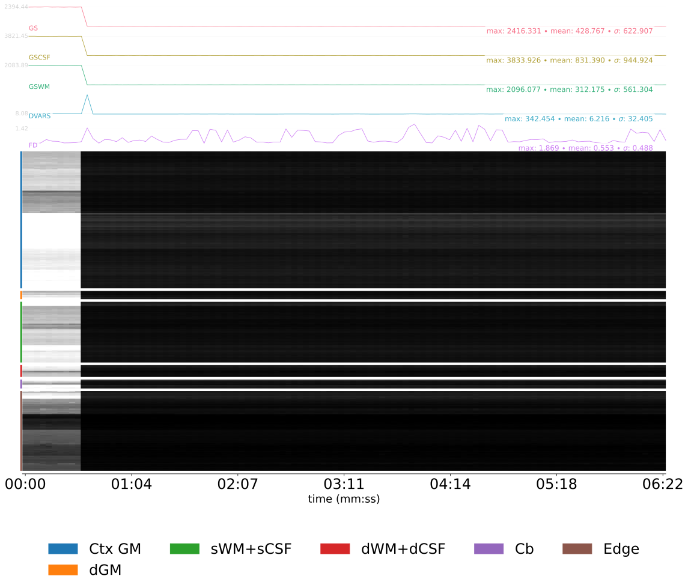
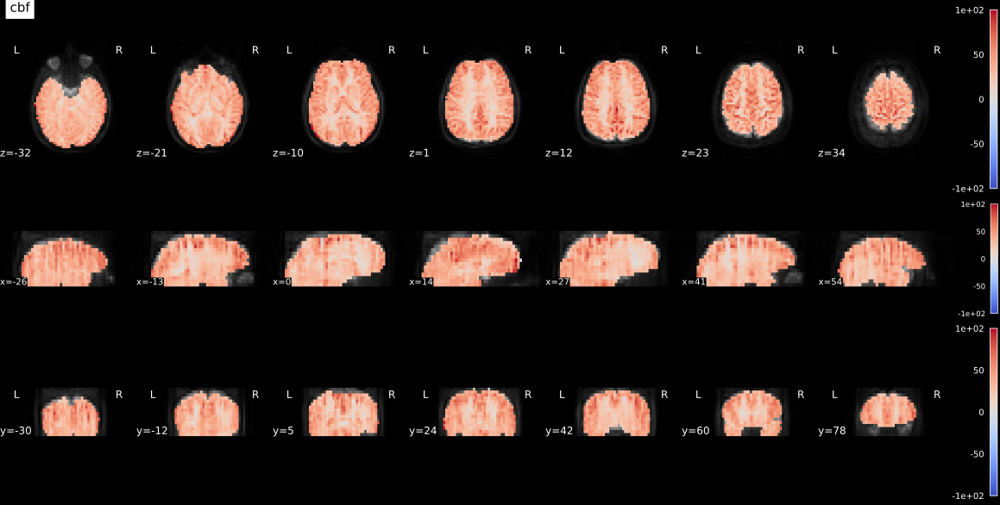

ASLprep#
A Robust Preprocessing Pipeline for ASL Data#
Author: Steffen Bollmann & Monika Doerig
Date: 17 Oct 2024
License:
Note: If this notebook uses neuroimaging tools from Neurocontainers, those tools retain their original licenses. Please see Neurodesk citation guidelines for details.
Citation and Resources#
Tools included in this workflow#
ASLPrep:
Adebimpe, A., Bertolero, M., Dolui, S. et al. ASLPrep: a platform for processing of arterial spin labeled MRI and quantification of regional brain perfusion. Nat Methods 19, 683–686 (2022). https://doi.org/10.1038/s41592-022-01458-7
FreeSurfer:
Dale, A.M., Fischl, B., Sereno, M.I. (1999). Cortical surface-based analysis. I. Segmentation and surface reconstruction. NeuroImage, 9(2), 179–194. https://doi.org/10.1006/nimg.1998.0395
Fischl, B., Sereno, M.I., Dale, A.M. (1999). Cortical surface-based analysis. II: Inflation, flattening, and a surface-based coordinate system. NeuroImage, 9(2), 195–207. https://doi.org/10.1006/nimg.1998.0396
Fischl, B. & Dale, A.M. (2000). Measuring the thickness of the human cerebral cortex from magnetic resonance images. Proceedings of the National Academy of Sciences, 97(20), 11050–11055. https://doi.org/10.1073/pnas.200033797
Dataset#
Opensource Data from OpenNeuro:
Alvaro Galiano and Reyes Garcia de Eulate and Marta Vidorreta and Miriam Recio and Mario Riverol and José L. Zubieta and Maria A. Fernandez-Seara PhD (2021). Resting State Perfusion in Healthy Aging. OpenNeuro Dataset ds000240.doi: 10.18112/openneuro.ds000240.v2.0.0
Educational resources#
Introduction#
Arterial Spin Labeling (ASL) MRI is a non-invasive technique for measuring cerebral blood flow (CBF) without the need for contrast agents. However, processing ASL data involves multiple complex steps — motion correction, registration to anatomical images, partial volume correction, and CBF quantification — each requiring careful parameter choices and quality control.
ASLPrep is an ASL preprocessing and CBF computation pipeline designed to be robust to variations in scan acquisition protocols while requiring minimal user input. It adapts its preprocessing steps depending on the input dataset and uses a combination of tools from well-known software packages (FSL, ANTs, FreeSurfer, and AFNI), selecting the best available implementation for each step. ASLPrep is largely based on fMRIPrep and is part of the NiPreps community, but accounts for key differences between ASL and fMRI —for example, separate motion correction per volume type, slice-timing–aware CBF calculation instead of slice timing correction, and reference image selection based on highest-contrast volume type.
This notebook demonstrates how to run ASLPrep on a publicly available dataset using Neurodesk, making quantitative perfusion imaging accessible without manual installation of the required dependencies.

Learning Objectives#
By the end of this notebook, you will be able to:
Set up and run ASLPrep on a BIDS-formatted ASL dataset using Neurodesk
Navigate and interpret ASLPrep’s visual quality control outputs, including brain segmentation, spatial normalisation, ASL-to-T1w registration, and CBF maps
Identify common issues in ASL processing from the visual reports (carpet plots, registration overlays)
Load software tools#
# load aslprep
import os
import module
await module.load('aslprep/26.0.2')
await module.list()
['aslprep/26.0.2']
Set up FreeSurfer license#
# Request a freesurfer license and store it in your homedirectory.
# This is just an example - please replace with your license id:
license_path = os.path.expanduser("~/.license")
# Create the license file using Python (more reliable than ! commands in batch execution)
license_content = """Steffen.Bollmann@cai.uq.edu.au
21029
*Cqyn12sqTCxo
FSxgcvGkNR59Y
"""
with open(license_path, 'w') as f:
f.write(license_content)
# Verify the license file was created
if os.path.exists(license_path):
print(f"✅ FreeSurfer license file created at: {license_path}")
with open(license_path, 'r') as f:
print(f" Lines: {len(f.readlines())}")
else:
raise RuntimeError(f"❌ Failed to create FreeSurfer license file at {license_path}")
✅ FreeSurfer license file created at: /home/jovyan/.license
Lines: 4
Download data using DataLad#
!datalad install https://github.com/OpenNeuroDatasets/ds000240.git
!cd ds000240 && datalad get sub-01
Cloning: 0%| | 0.00/2.00 [00:00<?, ? candidates/s]
Enumerating: 0.00 Objects [00:00, ? Objects/s]
Counting: 0%| | 0.00/1.20k [00:00<?, ? Objects/s]
Compressing: 0%| | 0.00/883 [00:00<?, ? Objects/s]
Receiving: 0%| | 0.00/2.39k [00:00<?, ? Objects/s]
Resolving: 0%| | 0.00/256 [00:00<?, ? Deltas/s]
[INFO ] Remote origin not usable by git-annex; setting annex-ignore
[INFO ] https://github.com/OpenNeuroDatasets/ds000240.git/config download failed: Not Found
[INFO ] access to 1 dataset sibling s3-PRIVATE not auto-enabled, enable with:
| datalad siblings -d "/home/jovyan/workspace/books/examples/quantitative_imaging/ds000240" enable -s s3-PRIVATE
install(ok): /home/jovyan/workspace/books/examples/quantitative_imaging/ds000240 (dataset)
Total: 0%| | 0.00/18.0M [00:00<?, ? Bytes/s]
Get sub-01/a .. 1_T1w.nii.gz: 0%| | 0.00/9.52M [00:00<?, ? Bytes/s]
Get sub-01/a .. 1_T1w.nii.gz: 0%| | 33.4k/9.52M [00:00<00:59, 159k Bytes/s]
Get sub-01/a .. 1_T1w.nii.gz: 1%| | 68.2k/9.52M [00:00<00:55, 169k Bytes/s]
Get sub-01/a .. 1_T1w.nii.gz: 1%| | 138k/9.52M [00:00<00:39, 236k Bytes/s]
Get sub-01/a .. 1_T1w.nii.gz: 3%|▏ | 294k/9.52M [00:00<00:21, 434k Bytes/s]
Get sub-01/a .. 1_T1w.nii.gz: 6%|▎ | 608k/9.52M [00:01<00:11, 810k Bytes/s]
Get sub-01/a .. 1_T1w.nii.gz: 13%|▍ | 1.23M/9.52M [00:01<00:05, 1.54M Bytes/s]
Get sub-01/a .. 1_T1w.nii.gz: 26%|▊ | 2.49M/9.52M [00:01<00:02, 3.34M Bytes/s]
Get sub-01/a .. 1_T1w.nii.gz: 31%|▉ | 2.96M/9.52M [00:01<00:01, 3.62M Bytes/s]
Get sub-01/a .. 1_T1w.nii.gz: 48%|█▍ | 4.55M/9.52M [00:01<00:00, 6.32M Bytes/s]
Get sub-01/a .. 1_T1w.nii.gz: 70%|██ | 6.70M/9.52M [00:01<00:00, 6.81M Bytes/s]
Get sub-01/a .. 1_T1w.nii.gz: 86%|██▌| 8.19M/9.52M [00:02<00:00, 8.33M Bytes/s]
Get sub-01/a .. 1_T1w.nii.gz: 0%| | 0.00/9.52M [00:00<?, ? Bytes/s]
Total: 53%|█████████████▊ | 9.52M/18.0M [00:03<00:03, 2.78M Bytes/s]
Get sub-01/p .. 1_asl.nii.gz: 0%| | 0.00/8.48M [00:00<?, ? Bytes/s]
Get sub-01/p .. 1_asl.nii.gz: 18%|▌ | 1.49M/8.48M [00:00<00:00, 14.8M Bytes/s]
Get sub-01/p .. 1_asl.nii.gz: 37%|█ | 3.13M/8.48M [00:00<00:00, 15.4M Bytes/s]
Get sub-01/p .. 1_asl.nii.gz: 74%|██▏| 6.24M/8.48M [00:00<00:00, 12.3M Bytes/s]
Get sub-01/p .. 1_asl.nii.gz: 0%| | 0.00/8.48M [00:00<?, ? Bytes/s]
get(ok): sub-01/anat/sub-01_T1w.nii.gz (file) [from s3-PUBLIC...]
get(ok): sub-01/perf/sub-01_asl.nii.gz (file) [from s3-PUBLIC...]
get(ok): sub-01 (directory)
action summary:
get (ok: 3)
Run ASLPrep#
The next cell runs ASLPrep on one participant from the ds000240 dataset and writes outputs to aslprep-output/.
A few practical notes:
The FreeSurfer license file should exist at
~/.license(created above).Runtime depends heavily on available CPUs and memory. It will likely take a few of hours (~4-6 hours) to run.
On small nodes, set resource limits explicitly (
--nthreads,--omp-nthreads,--mem-mb) so ASLPrep doesn’t oversubscribe RAM and get OOM (out of memory) killed. The cell below detects the available resources automatically.To check progress, open a Terminal and run
top, ortail -f aslprep.logIf a previous run left intermediates in
aslprep-work/, ASLPrep will reuse them and finish much faster. To force a clean run, deleteaslprep-work/first.ASLPrep handles the full pipeline: anatomical preprocessing (brain extraction, segmentation, surface reconstruction, spatial normalisation), ASL preprocessing (motion correction, distortion correction, ASL-to-T1w registration), and CBF quantification. Short version (one sentence, to append):
Sidecar workaround: The ds000240 sidecars ship with
RepetitionTimePreparation: 0. ASLPrep 26.x reads this field asm0trin the M0-recovery correction (1 − exp(−m0tr/T1blood)) — when it is 0, the term collapses to 0 and every CBF voxel becomes zero with no error. As a workaround we copy the value ofRepetitionTimeintoRepetitionTimePreparationin the patching cell above, which restores physiologically plausible CBF. Older ASLPrep versions (0.7.x) did not consume this field and were unaffected.
import json
from pathlib import Path
sidecar = Path("ds000240/sub-01/perf/sub-01_asl.json")
meta = json.loads(sidecar.read_text())
if meta.get("RepetitionTimePreparation") in (None, 0, 0.0):
meta["RepetitionTimePreparation"] = meta["RepetitionTime"]
sidecar.write_text(json.dumps(meta, indent=4))
print(f"Patched {sidecar}: RepetitionTimePreparation -> {meta['RepetitionTimePreparation']}")
else:
print(f"No change: RepetitionTimePreparation = {meta['RepetitionTimePreparation']}")
Patched ds000240/sub-01/perf/sub-01_asl.json: RepetitionTimePreparation -> 3.5
%%bash
set -u -o pipefail
# FreeSurfer expects the subjects directory to exist at startup
mkdir -p "$HOME/freesurfer-subjects-dir"
# Detect available resources
N_CPUS=$(nproc)
MEM_MB=$(awk '/MemTotal/ {printf "%d", $2/1024}' /proc/meminfo)
# Leave headroom: ~75% of RAM, cap OMP threads at 2
ASLPREP_MEM=$(( MEM_MB * 75 / 100 ))
OMP_THREADS=$(( N_CPUS < 2 ? 1 : 2 ))
echo "Using ${N_CPUS} CPUs, ${ASLPREP_MEM} MB RAM, omp=${OMP_THREADS}"
aslprep ds000240 \
aslprep-output \
participant \
--participant-label 01 \
--fs-license-file ~/.license \
-w aslprep-work \
--nthreads "${N_CPUS}" \
--omp-nthreads "${OMP_THREADS}" \
--mem-mb "${ASLPREP_MEM}" \
2>&1 | tee aslprep.log
# Verify aslprep produced expected outputs
if [ ! -f "aslprep-output/sub-01.html" ]; then
echo "ERROR: ASLPrep did not produce the expected report (sub-01.html)"
exit 1
fi
Using 32 CPUs, 96604 MB RAM, omp=2
bids-validator@1.14.10
(node:1062) Warning: Closing directory handle on garbage collection
(Use `node --trace-warnings ...`
to show where the warning was created)
This dataset appears to be BIDS compatible.
Summary:
Available Tasks: Available Modalities:
133 Files, 17.76MB MRI
63 - Subjects
1 - Session
If you have any questions, please post on https://neurost
ars.org/tags/bids.
260417-23:09:18,138 nipype.workflow IMPORTANT:
Running ASLPrep version 26.0.2
License NO
TICE ##################################################
ASLPrep 26.0.2
Copyright 2
023 The PennLINC Team and the NiPreps Developers.
This product is primarily devel
oped by the PennLINC team,
but it is also a part of the NiPreps community.
This product includes software developed by
the NiPreps Community (https://nipreps.org/)
.
Portions of this software were developed at the Department of
Psycholo
gy at Stanford University, Stanford, CA, US.
This software is also distributed as
a Docker container image.
The bootstrapping file for the image ("Dockerfile") is licensed
under the MIT License.
This software may be distributed through an add-o
n package called
"Docker Wrapper" that is under the BSD 3-clause License.
########
#########################################################
260417-23:09:18,138 nipype.workflow IMPORT
ANT:
Building ASLPrep's workflow:
* BIDS dataset path: /home/jovyan/workspace/books/exa
mples/quantitative_imaging/ds000240.
* Participants and sessions: sub-01.
* Ru
n identifier: 20260417-230753_94fbc516-51cb-4105-af94-264ef1671294.
* Output spaces: MNI1
52NLin2009cAsym:res-native.
* Searching for derivatives: {'aslprepatlases': PosixPath('/h
ome/aslprep/.cache/aslprep/XCPDAtlases'), 'aslprep4s': PosixPath('/home/aslprep/.cache/aslprep/Atlas
Pack')}.
* Pre-run FreeSurfer's SUBJECTS_DIR: /home/jovyan/workspace/books/examples/quant
itative_imaging/aslprep-output/sourcedata/freesurfer.
260417-23:09:21,906 nipype.workflow INFO:
Anatomical cache: {}
Downloading https://templateflow.s3.amazonaws.com/tpl-MNI152NLin2009cAsym/tpl-MNI152NLin2009cAsym_re
s-01_T1w.nii.gz
0%| | 0.00/13.7M [00:00<?, ?B/s]
0%| | 17.4k/13.7M [00:00<02:42, 83.9kB/s]
1%| | 71.7k/13.7M [00:00<01:12, 187kB/s]
1%| | 124k/13.7M [00:00<01:03, 214kB/s]
2%|▏ | 298k/13.7M [00:00<00:29, 456kB/s]
5%|▍ | 629k/13.7M [00:01<00:15, 857kB/s]
10%|▉ | 1.31M/13.7M [00:01<00:07, 1.66MB/s]
19%|█▉ | 2.63M/13.7M [00:01<00:03, 3.14MB/s]
39%|███▉ | 5.31M/13.7M [00:01<00:01, 6.16MB/s]
56%|█████▌ | 7.65M/13.7M [00:01<00:00, 7.67MB/s]
76%|███████▌ | 10.4M/13.7M [00:02<00:00, 9.25MB/s]
94%|█████████▍| 12.9M/13.7M [00:02<00:00, 10.1MB/s]
100%|██████████| 13.7M/13.7M [00:02<00:00, 5.84MB/s]
Downloading https://templateflow.s3.amazonaws.com/tpl-MNI152NLin2009cAsym/tpl-MNI152NLin2009cAsym_re
s-01_desc-brain_mask.nii.gz
0%| | 0.00/160k [00:00<?, ?B/s]
11%|█ | 17.4k/160k [00:00<00:01, 82.9kB/s]
44%|████▎ | 69.6k/160k [00:00<00:00, 180kB/s]
87%|████████▋ | 139k/160k [00:00<00:00, 248kB/s]
100%|██████████| 160k/160k [00:00<00:00, 252kB/s]
Downloading https://templateflow.s3.amazonaws.com/tpl-MNI152NLin2009cAsym/tpl-MNI152NLin2009cAsym_re
s-01_T2w.nii.gz
0%| | 0.00/13.3M [00:00<?, ?B/s]
0%| | 17.4k/13.3M [00:00<02:39, 83.1kB/s]
1%| | 69.6k/13.3M [00:00<01:13, 180kB/s]
1%| | 139k/13.3M [00:00<00:52, 248kB/s]
2%|▏ | 296k/13.3M [00:00<00:29, 443kB/s]
5%|▍ | 627k/13.3M [00:01<00:14, 848kB/s]
10%|▉ | 1.27M/13.3M [00:01<00:07, 1.60MB/s]
20%|█▉ | 2.60M/13.3M [00:01<00:03, 3.12MB/s]
38%|███▊ | 5.05M/13.3M [00:01<00:01, 5.83MB/s]
53%|█████▎ | 7.00M/13.3M [00:01<00:00, 6.89MB/s]
69%|██████▉ | 9.20M/13.3M [00:02<00:00, 7.97MB/s]
85%|████████▍ | 11.3M/13.3M [00:02<00:00, 8.51MB/s]
100%|██████████| 13.3M/13.3M [00:02<00:00, 5.61MB/s]
260417-23:09:30,586 nipype.workflow INFO:
ANAT Stage 1: Adding template workflow
260417-23:09:32,468 nipype.workflow INFO:
ANAT Stage 2: Preparing brain extraction workflow
Downloading https://templateflow.s3.amazonaws.com/tpl-OASIS30ANTs/tpl-OASIS30ANTs_res-01_T1w.nii.gz
0%| | 0.00/32.4M [00:00<?, ?B/s]
0%| | 17.4k/32.4M [00:00<06:31, 82.7kB/s]
0%| | 52.2k/32.4M [00:00<04:06, 131kB/s]
0%| | 122k/32.4M [00:00<02:25, 222kB/s]
1%| | 279k/32.4M [00:00<01:15, 427kB/s]
2%|▏ | 574k/32.4M [00:01<00:40, 777kB/s]
4%|▎ | 1.18M/32.4M [00:01<00:20, 1.49MB/s]
7%|▋ | 2.18M/32.4M [00:01<00:11, 2.54MB/s]
12%|█▏ | 3.88M/32.4M [00:01<00:06, 4.30MB/s]
20%|█▉ | 6.36M/32.4M [00:01<00:03, 6.60MB/s]
26%|██▌ | 8.47M/32.4M [00:02<00:03, 7.64MB/s]
33%|███▎ | 10.8M/32.4M [00:02<00:02, 8.63MB/s]
40%|███▉ | 12.9M/32.4M [00:02<00:02, 9.09MB/s]
47%|████▋ | 15.1M/32.4M [00:02<00:01, 9.38MB/s]
53%|█████▎ | 17.2M/32.4M [00:02<00:01, 9.62MB/s]
60%|█████▉ | 19.3M/32.4M [00:03<00:01, 9.69MB/s]
66%|██████▋ | 21.5M/32.4M [00:03<00:01, 9.83MB/s]
73%|███████▎ | 23.6M/32.4M [00:03<00:00, 9.89MB/s]
80%|███████▉ | 25.7M/32.4M [00:03<00:00, 9.94MB/s]
86%|████████▌ | 27.9M/32.4M [00:04<00:00, 9.97MB/s]
93%|█████████▎| 30.0M/32.4M [00:04<00:00, 9.99MB/s]
99%|█████████▉| 32.1M/32.4M [00:04<00:00, 10.0MB/s]
100%|██████████| 32.4M/32.4M [00:04<00:00, 7.26MB/s]
Downloading https://templateflow.s3.amazonaws.com/tpl-OASIS30ANTs/tpl-OASIS30ANTs_res-01_label-brain
_probseg.nii.gz
0%| | 0.00/2.59M [00:00<?, ?B/s]
1%| | 17.4k/2.59M [00:00<00:31, 82.8kB/s]
3%|▎ | 69.6k/2.59M [00:00<00:14, 180kB/s]
5%|▌ | 138k/2.59M [00:00<00:09, 246kB/s]
9%|▉ | 244k/2.59M [00:00<00:06, 346kB/s]
19%|█▉ | 487k/2.59M [00:01<00:03, 638kB/s]
36%|███▋ | 940k/2.59M [00:01<00:01, 1.15MB/s]
69%|██████▉ | 1.79M/2.59M [00:01<00:00, 2.09MB/s]
100%|██████████| 2.59M/2.59M [00:01<00:00, 1.73MB/s]
Downloading https://templateflow.s3.amazonaws.com/tpl-OASIS30ANTs/tpl-OASIS30ANTs_res-01_desc-BrainC
erebellumExtraction_mask.nii.gz
0%| | 0.00/265k [00:00<?, ?B/s]
7%|▋ | 17.4k/265k [00:00<00:02, 82.9kB/s]
26%|██▋ | 69.6k/265k [00:00<00:01, 180kB/s]
52%|█████▏ | 138k/265k [00:00<00:00, 246kB/s]
100%|██████████| 265k/265k [00:00<00:00, 416kB/s]
Downloading https://templateflow.s3.amazonaws.com/tpl-OASIS30ANTs/tpl-OASIS30ANTs_res-01_label-WM_pr
obseg.nii.gz
0%| | 0.00/4.06M [00:00<?, ?B/s]
0%| | 17.4k/4.06M [00:00<00:48, 83.0kB/s]
2%|▏ | 69.6k/4.06M [00:00<00:22, 180kB/s]
3%|▎ | 138k/4.06M [00:00<00:15, 247kB/s]
7%|▋ | 296k/4.06M [00:00<00:08, 445kB/s]
15%|█▌ | 627k/4.06M [00:01<00:04, 851kB/s]
32%|███▏ | 1.31M/4.06M [00:01<00:01, 1.66MB/s]
65%|██████▍ | 2.63M/4.06M [00:01<00:00, 3.18MB/s]
100%|██████████| 4.06M/4.06M [00:01<00:00, 2.68MB/s]
Downloading https://templateflow.s3.amazonaws.com/tpl-OASIS30ANTs/tpl-OASIS30ANTs_res-01_label-BS_pr
obseg.nii.gz
0%| | 0.00/447k [00:00<?, ?B/s]
4%|▍ | 17.4k/447k [00:00<00:05, 82.8kB/s]
16%|█▌ | 69.6k/447k [00:00<00:02, 180kB/s]
27%|██▋ | 122k/447k [00:00<00:01, 210kB/s]
66%|██████▋ | 296k/447k [00:00<00:00, 453kB/s]
100%|██████████| 447k/447k [00:00<00:00, 526kB/s]
260417-23:09:45,853 nipype.workflow INFO:
ANAT Stage 3: Preparing segmentation workflow
260417-23:09:45,864 nipype.workflow INFO:
ANAT Stage 4: Preparing normalization workflow for ['MNI
152NLin2009cAsym']
260417-23:09:45,882 nipype.workflow INFO:
ANAT Stage 5: Preparing surface reconstruction workflow
260417-23:09:45,937 nipype.workflow INFO:
ANAT Stage 6: Preparing mask refinement workflow
260417-23:09:45,944 nipype.workflow INFO:
ANAT No T2w images provided - skipping Stage 7
260417-23:09:45,944 nipype.workflow INFO:
ANAT Stage 8: Creating GIFTI surfaces for ['white', 'pia
l', 'midthickness', 'sphere_reg', 'sphere']
260417-23:09:45,978 nipype.workflow INFO:
ANAT Stage 8: Creating GIFTI metrics for ['thickness', '
sulc']
260417-23:09:45,992 nipype.workflow INFO:
ANAT Stage 8a: Creating cortical ribbon mask
260417-23:09:45,999 nipype.workflow INFO:
ANAT Stage 9: Creating fsLR registration sphere
260417-23:09:46,11 nipype.workflow INFO:
ANAT Stage 10: MSM-Sulc disabled
260417-23:09:46,11 nipype.workflow INFO:
ANAT Stage 11: Creating cortical surface mask
260417-23:09:48,723 nipype.workflow INFO:
Collected run data for /home/jovyan/workspace/books/exam
ples/quantitative_imaging/ds000240/sub-01/perf/sub-01_asl.nii.gz:
aslcontext: /home/jovyan/workspace
/books/examples/quantitative_imaging/ds000240/sub-01/perf/sub-01_aslcontext.tsv
m0scan: null
sbref:
null
260417-23:09:48,760 nipype.workflow INFO:
No single-band-reference found for sub-01_asl.nii.gz.
260417-23:09:49,429 nipype.workflow INFO:
Stage 1: Adding HMC aslref workflow
260417-23:09:49,445 nipype.workflow INFO:
Stage 2: Adding motion correction workflow
260417-23:09:49,468 nipype.workflow INFO:
No fieldmap correction - skipping Stage 3
260417-23:09:49,469 nipype.workflow INFO:
Stage 4: Adding coregistration aslref workflow
260417-23:09:49,501 nipype.workflow INFO:
Stage 5: Adding coregistration workflow
Downloading https://templateflow.s3.amazonaws.com/tpl-MNI152NLin2009cAsym/tpl-MNI152NLin2009cAsym_re
s-02_desc-brain_mask.nii.gz
0%| | 0.00/29.6k [00:00<?, ?B/s]
62%|██████▏ | 18.4k/29.6k [00:00<00:00, 87.8kB/s]
100%|██████████| 29.6k/29.6k [00:00<00:00, 140kB/s]
Downloading https://templateflow.s3.amazonaws.com/tpl-MNI152NLin2009cAsym/tpl-MNI152NLin2009cAsym_re
s-01_desc-carpet_dseg.nii.gz
0%| | 0.00/451k [00:00<?, ?B/s]
4%|▍ | 17.4k/451k [00:00<00:05, 82.9kB/s]
12%|█▏ | 52.2k/451k [00:00<00:03, 131kB/s]
27%|██▋ | 122k/451k [00:00<00:01, 222kB/s]
62%|██████▏ | 279k/451k [00:00<00:00, 427kB/s]
100%|██████████| 451k/451k [00:00<00:00, 532kB/s]
260417-23:09:53,594 nipype.utils WARNING:
No atlas images found for MIDB with query {'extension':
['.nii.gz', '.nii'], 'template': 'MNI152NLin6Asym'}
260417-23:09:53,594 nipype.utils WARNING:
No a
tlas images found for MyersLabonte with query {'extension': ['.nii.gz', '.nii'], 'template': 'MNI152
NLin6Asym'}
260417-23:09:53,690 nipype.workflow INFO:
Loading atlas: Glasser
260417-23:09:53,690 nipype.workfl
ow INFO:
Loading atlas: Gordon
260417-23:09:53,690 nipype.workflow INFO:
Loading atlas: HCP
2604
17-23:09:53,691 nipype.workflow INFO:
Loading atlas: Tian
260417-23:09:53,691 nipype.workflow INFO:
Loading atlas: 4S1056Parcels
260417-23:09:53,691 nipype.
workflow INFO:
Loading atlas: 4S156Parcels
260417-23:09:53,691 nipype.workflow INFO:
Loading atlas: 4S256Parcels
260417-23:09:53,691 nipype.w
orkflow INFO:
Loading atlas: 4S356Parcels
260417-23:09:53,691 nipype.workflow INFO:
Loading atla
s: 4S456Parcels
260417-23:09:53,691 nipype.workflow INFO:
Loading atlas: 4S556Parcels
260417-23:09
:53,691 nipype.workflow INFO:
Loading atlas: 4S656Parcels
260417-23:09:53,691 nipype.workflow INFO
:
Loading atlas: 4S756Parcels
260417-23:09:53,691 nipype.workflow INFO:
Loading atlas: 4S856Parc
els
260417-23:09:53,691 nipype.workflow INFO:
Loading atlas: 4S956Parcels
Downloading https://templateflow.s3.amazonaws.com/tpl-MNI152NLin2009cAsym/tpl-MNI152NLin2009cAsym_fr
om-MNI152NLin6Asym_mode-image_xfm.h5
0%| | 0.00/205M [00:00<?, ?B/s]
0%| | 17.4k/205M [00:00<41:12, 82.8kB/s]
0%| | 69.6k/205M [00:00<18:57, 180kB/s]
0%| | 139k/205M [00:00<13:44, 248kB/s]
0%| | 296k/205M [00:00<07:41, 443kB/s]
0%| | 643k/205M [00:01<03:53, 876kB/s]
1%| | 1.13M/205M [00:01<02:29, 1.36MB/s]
1%| | 2.32M/205M [00:01<01:13, 2.75MB/s]
2%|▏ | 4.66M/205M [00:01<00:37, 5.40MB/s]
4%|▎ | 7.26M/205M [00:01<00:26, 7.56MB/s]
5%|▍ | 10.1M/205M [00:02<00:20, 9.31MB/s]
6%|▌ | 12.6M/205M [00:02<00:19, 10.1MB/s]
7%|▋ | 15.0M/205M [00:02<00:18, 10.5MB/s]
9%|▊ | 17.5M/205M [00:02<00:17, 10.8MB/s]
10%|▉ | 19.9M/205M [00:02<00:16, 11.1MB/s]
11%|█ | 22.5M/205M [00:03<00:16, 11.3MB/s]
12%|█▏ | 24.9M/205M [00:03<00:15, 11.5MB/s]
13%|█▎ | 27.5M/205M [00:03<00:15, 11.7MB/s]
15%|█▍ | 29.9M/205M [00:03<00:15, 11.5MB/s]
16%|█▌ | 32.3M/205M [00:04<00:14, 11.5MB/s]
17%|█▋ | 34.9M/205M [00:04<00:14, 11.7MB/s]
18%|█▊ | 37.1M/205M [00:04<00:14, 11.3MB/s]
19%|█▉ | 39.6M/205M [00:04<00:14, 11.5MB/s]
21%|██ | 42.1M/205M [00:04<00:13, 11.6MB/s]
22%|██▏ | 44.6M/205M [00:05<00:13, 11.6MB/s]
23%|██▎ | 47.1M/205M [00:05<00:13, 11.6MB/s]
24%|██▍ | 49.6M/205M [00:05<00:13, 11.8MB/s]
25%|██▌ | 52.0M/205M [00:05<00:13, 11.6MB/s]
27%|██▋ | 54.5M/205M [00:05<00:12, 11.6MB/s]
28%|██▊ | 56.9M/205M [00:06<00:12, 11.6MB/s]
29%|██▉ | 59.5M/205M [00:06<00:12, 11.8MB/s]
30%|███ | 61.9M/205M [00:06<00:12, 11.7MB/s]
31%|███▏ | 64.5M/205M [00:06<00:11, 11.8MB/s]
33%|███▎ | 66.9M/205M [00:06<00:11, 11.7MB/s]
34%|███▍ | 69.4M/205M [00:07<00:11, 11.8MB/s]
35%|███▌ | 71.9M/205M [00:07<00:11, 11.7MB/s]
36%|███▋ | 74.3M/205M [00:07<00:11, 11.6MB/s]
38%|███▊ | 76.8M/205M [00:07<00:10, 11.7MB/s]
39%|███▉ | 79.4M/205M [00:08<00:10, 11.9MB/s]
40%|████ | 81.9M/205M [00:08<00:10, 11.9MB/s]
41%|████ | 84.3M/205M [00:08<00:10, 11.6MB/s]
42%|████▏ | 86.9M/205M [00:08<00:09, 11.8MB/s]
44%|████▎ | 89.3M/205M [00:08<00:09, 11.7MB/s]
45%|████▍ | 91.7M/205M [00:09<00:09, 11.6MB/s]
46%|████▌ | 94.2M/205M [00:09<00:09, 11.7MB/s]
47%|████▋ | 96.7M/205M [00:09<00:09, 11.7MB/s]
48%|████▊ | 99.1M/205M [00:09<00:09, 11.6MB/s]
50%|████▉ | 102M/205M [00:09<00:08, 11.6MB/s]
51%|█████ | 104M/205M [00:10<00:08, 11.5MB/s]
52%|█████▏ | 106M/205M [00:10<00:08, 11.4MB/s]
53%|█████▎ | 109M/205M [00:10<00:08, 11.4MB/s]
54%|█████▍ | 111M/205M [00:10<00:08, 11.5MB/s]
56%|█████▌ | 114M/205M [00:11<00:07, 11.6MB/s]
57%|█████▋ | 116M/205M [00:11<00:07, 11.7MB/s]
58%|█████▊ | 119M/205M [00:11<00:07, 11.5MB/s]
59%|█████▉ | 121M/205M [00:11<00:07, 11.3MB/s]
60%|██████ | 123M/205M [00:11<00:07, 11.5MB/s]
61%|██████▏ | 126M/205M [00:12<00:06, 11.6MB/s]
63%|██████▎ | 128M/205M [00:12<00:06, 11.5MB/s]
64%|██████▍ | 131M/205M [00:12<00:06, 11.6MB/s]
65%|██████▌ | 133M/205M [00:12<00:06, 11.4MB/s]
66%|██████▌ | 136M/205M [00:12<00:05, 11.5MB/s]
67%|██████▋ | 138M/205M [00:13<00:05, 11.5MB/s]
69%|██████▊ | 140M/205M [00:13<00:05, 11.2MB/s]
70%|██████▉ | 143M/205M [00:13<00:05, 11.4MB/s]
71%|███████ | 145M/205M [00:13<00:05, 11.2MB/s]
72%|███████▏ | 147M/205M [00:13<00:05, 11.2MB/s]
73%|███████▎ | 150M/205M [00:14<00:04, 11.1MB/s]
74%|███████▍ | 152M/205M [00:14<00:04, 11.2MB/s]
75%|███████▌ | 154M/205M [00:14<00:04, 10.9MB/s]
77%|███████▋ | 157M/205M [00:14<00:04, 11.1MB/s]
78%|███████▊ | 159M/205M [00:15<00:04, 11.1MB/s]
79%|███████▉ | 161M/205M [00:15<00:03, 11.1MB/s]
80%|████████ | 164M/205M [00:15<00:03, 11.1MB/s]
81%|████████ | 166M/205M [00:15<00:03, 11.0MB/s]
82%|████████▏ | 168M/205M [00:15<00:03, 11.0MB/s]
83%|████████▎ | 171M/205M [00:16<00:03, 11.2MB/s]
85%|████████▍ | 173M/205M [00:16<00:02, 10.9MB/s]
86%|████████▌ | 175M/205M [00:16<00:02, 10.9MB/s]
87%|████████▋ | 178M/205M [00:16<00:02, 10.9MB/s]
88%|████████▊ | 180M/205M [00:16<00:02, 11.0MB/s]
89%|████████▉ | 182M/205M [00:17<00:02, 10.8MB/s]
90%|█████████ | 185M/205M [00:17<00:01, 10.7MB/s]
91%|█████████ | 187M/205M [00:17<00:01, 10.7MB/s]
92%|█████████▏| 189M/205M [00:17<00:01, 10.7MB/s]
93%|█████████▎| 191M/205M [00:17<00:01, 10.6MB/s]
94%|█████████▍| 193M/205M [00:18<00:01, 10.5MB/s]
96%|█████████▌| 196M/205M [00:18<00:00, 10.5MB/s]
97%|█████████▋| 198M/205M [00:18<00:00, 10.5MB/s]
98%|█████████▊| 200M/205M [00:18<00:00, 10.4MB/s]
99%|█████████▉| 202M/205M [00:19<00:00, 10.4MB/s]
100%|█████████▉| 204M/205M [00:19<00:00, 10.4MB/s]
100%|██████████| 205M/205M [00:19<00:00, 10.6MB/s]
260417-23:10:32,218 nipype.workflow INFO:
ASLPrep workflow graph with 495 nodes built successfully
.
260417-23:11:20,388 nipype.workflow IMPORTANT:
ASLPrep started!
260417-23:11:47,552 nipype.workflow INFO:
[Node] Setting-up "aslprep_26_0_wf.sub_01_wf.anat_fit_wf
.brain_extraction_wf.full_wm" in "/home/jovyan/workspace/books/examples/quantitative_imaging/aslprep
-work/aslprep_26_0_wf/sub_01_wf/anat_fit_wf/brain_extraction_wf/full_wm".
260417-23:11:47,555 nipype.workflow INFO:
[Node] Executing "full_wm" <nipype.interfaces.utility.wr
appers.Function>
260417-23:11:48,422 nipype.workflow INFO:
[Node] Setting-up "aslprep_26_0_wf.sub_01_wf.asl_preproc
_asl.asl_fit_wf.processing_target" in "/home/jovyan/workspace/books/examples/quantitative_imaging/as
lprep-work/aslprep_26_0_wf/sub_01_wf/asl_preproc_asl/asl_fit_wf/processing_target".
260417-23:11:48,424 nipype.workflow INFO:
[Node] Executing "processing_target" <nipype.interfaces.
utility.wrappers.Function>
260417-23:11:48,991 nipype.workflow INFO:
[Node] Setting-up "aslprep_26_0_wf.sub_01_wf.anat_fit_wf
.brain_extraction_wf.res_tmpl" in "/home/jovyan/workspace/books/examples/quantitative_imaging/aslpre
p-work/aslprep_26_0_wf/sub_01_wf/anat_fit_wf/brain_extraction_wf/res_tmpl".
260417-23:11:48,993 nipype.workflow INFO:
[Node] Executing "res_tmpl" <niworkflows.interfaces.niba
bel.RegridToZooms>
260417-23:11:49,140 nipype.workflow INFO:
[Node] Setting-up "aslprep_26_0_wf.sub_01_wf.asl_preproc
_asl.asl_fit_wf.ds_hmc_aslref_wf.raw_sources" in "/home/jovyan/workspace/books/examples/quantitative
_imaging/aslprep-work/aslprep_26_0_wf/sub_01_wf/asl_preproc_asl/asl_fit_wf/ds_hmc_aslref_wf/raw_sour
ces".
260417-23:11:49,143 nipype.workflow INFO:
[Node] Executing "raw_sources" <nipype.interfaces.utilit
y.wrappers.Function>
260417-23:11:49,150 nipype.workflow INFO:
[Node] Finished "raw_sources", elapsed time 0.001121s.
260417-23:11:49,197 nipype.workflow INFO:
[Node] Setting-up "aslprep_26_0_wf.sub_01_wf.anat_fit_wf
.brain_extraction_wf.lap_tmpl" in "/home/jovyan/workspace/books/examples/quantitative_imaging/aslpre
p-work/aslprep_26_0_wf/sub_01_wf/anat_fit_wf/brain_extraction_wf/lap_tmpl".
260417-23:11:49,199 nipype.workflow INFO:
[Node] Executing "lap_tmpl" <nipype.interfaces.ants.util
s.ImageMath>
260417-23:11:49,544 nipype.workflow INFO:
[Node] Setting-up "aslprep_26_0_wf.sub_01_wf.asl_preproc
_asl.asl_native_wf.processing_target" in "/home/jovyan/workspace/books/examples/quantitative_imaging
/aslprep-work/aslprep_26_0_wf/sub_01_wf/asl_preproc_asl/asl_native_wf/processing_target".
260417-23:11:49,546 nipype.workflow INFO:
[Node] Executing "processing_target" <nipype.interfaces.
utility.wrappers.Function>
260417-23:11:49,551 nipype.workflow INFO:
[Node] Setting-up "aslprep_26_0_wf.sub_01_wf.asl_preproc
_asl.ds_asl_std_wf.raw_sources" in "/home/jovyan/workspace/books/examples/quantitative_imaging/aslpr
ep-work/aslprep_26_0_wf/sub_01_wf/asl_preproc_asl/ds_asl_std_wf/raw_sources".
260417-23:11:49,553 nipype.workflow INFO:
[Node] Executing "raw_sources" <nipype.interfaces.utilit
y.wrappers.Function>
260417-23:11:49,561 nipype.workflow INFO:
[Node] Finished "raw_sources", elapsed time 0.000585s.
260417-23:11:49,569 nipype.workflow INFO:
[Node] Finished "full_wm", elapsed time 2.007702s.
260417-23:11:49,895 nipype.workflow INFO:
[Node] Finished "processing_target", elapsed time 1.4660
4s.
260417-23:11:50,374 nipype.workflow INFO:
[Node] Setting-up "aslprep_26_0_wf.sub_01_wf.asl_preproc
_asl.asl_fit_wf.hmc_aslref_wf.val_asl" in "/home/jovyan/workspace/books/examples/quantitative_imagin
g/aslprep-work/aslprep_26_0_wf/sub_01_wf/asl_preproc_asl/asl_fit_wf/hmc_aslref_wf/val_asl".
260417-23:11:50,378 nipype.workflow INFO:
[Node] Executing "val_asl" <niworkflows.interfaces.heade
r.ValidateImage>
260417-23:11:50,485 nipype.workflow INFO:
[Node] Finished "val_asl", elapsed time 0.099937s.
260417-23:11:50,732 nipype.workflow INFO:
[Node] Finished "res_tmpl", elapsed time 1.730354s.
260417-23:11:50,984 nipype.workflow INFO:
[Node] Setting-up "aslprep_26_0_wf.sub_01_wf.asl_preproc
_asl.asl_native_wf.validate_asl" in "/home/jovyan/workspace/books/examples/quantitative_imaging/aslp
rep-work/aslprep_26_0_wf/sub_01_wf/asl_preproc_asl/asl_native_wf/validate_asl".
260417-23:11:50,987 nipype.workflow INFO:
[Node] Executing "validate_asl" <niworkflows.interfaces.
header.ValidateImage>
260417-23:11:51,12 nipype.workflow INFO:
[Node] Finished "processing_target", elapsed time 1.4571s
.
260417-23:11:51,58 nipype.workflow INFO:
[Node] Finished "validate_asl", elapsed time 0.061496s.
260417-23:11:53,431 nipype.workflow INFO:
[Node] Setting-up "aslprep_26_0_wf.sub_01_wf.asl_preproc
_asl.asl_fit_wf.ds_aslmask_wf.sources" in "/home/jovyan/workspace/books/examples/quantitative_imagin
g/aslprep-work/aslprep_26_0_wf/sub_01_wf/asl_preproc_asl/asl_fit_wf/ds_aslmask_wf/sources".
260417-23:11:53,433 nipype.workflow INFO:
[Node] Executing "sources" <fmriprep.interfaces.bids.BID
SURI>
260417-23:11:53,439 nipype.workflow INFO:
[Node] Finished "sources", elapsed time 0.000617s.
260417-23:11:53,621 nipype.workflow INFO:
[Node] Setting-up "aslprep_26_0_wf.sub_01_wf.asl_preproc
_asl.asl_fit_wf.ds_hmc_wf.sources" in "/home/jovyan/workspace/books/examples/quantitative_imaging/as
lprep-work/aslprep_26_0_wf/sub_01_wf/asl_preproc_asl/asl_fit_wf/ds_hmc_wf/sources".
260417-23:11:53,624 nipype.workflow INFO:
[Node] Executing "sources" <fmriprep.interfaces.bids.BID
SURI>
260417-23:11:53,625 nipype.workflow INFO:
[Node] Finished "sources", elapsed time 0.000315s.
260417-23:11:54,775 nipype.workflow INFO:
[Node] Setting-up "aslprep_26_0_wf.sub_01_wf.anat_fit_wf
.register_template_wf.set_reference" in "/home/jovyan/workspace/books/examples/quantitative_imaging/
aslprep-work/aslprep_26_0_wf/sub_01_wf/anat_fit_wf/register_template_wf/_template_MNI152NLin2009cAsy
m/set_reference".
260417-23:11:59,114 nipype.workflow INFO:
[Node] Executing "set_reference" <nipype.interfaces.util
ity.wrappers.Function>
260417-23:11:59,120 nipype.workflow INFO:
[Node] Finished "set_reference", elapsed time 0.000406s.
260417-23:11:59,708 nipype.workflow INFO:
[Node] Setting-up "_atlas_src3" in "/home/jovyan/workspa
ce/books/examples/quantitative_imaging/aslprep-work/aslprep_26_0_wf/sub_01_wf/asl_preproc_asl/load_a
tlases_wf/atlas_src/mapflow/_atlas_src3".
260417-23:11:59,712 nipype.workflow INFO:
[Node] Executing "_atlas_src3" <aslprep.interfaces.bids.
BIDSURI>
260417-23:11:59,713 nipype.workflow INFO:
[Node] Finished "_atlas_src3", elapsed time 0.00078s.
260417-23:12:00,193 nipype.workflow INFO:
[Node] Setting-up "_atlas_src1" in "/home/jovyan/workspa
ce/books/examples/quantitative_imaging/aslprep-work/aslprep_26_0_wf/sub_01_wf/asl_preproc_asl/load_a
tlases_wf/atlas_src/mapflow/_atlas_src1".
260417-23:12:00,196 nipype.workflow INFO:
[Node] Executing "_atlas_src1" <aslprep.interfaces.bids.
BIDSURI>
260417-23:12:00,197 nipype.workflow INFO:
[Node] Finished "_atlas_src1", elapsed time 0.000561s.
260417-23:12:00,241 nipype.workflow INFO:
[Node] Finished "lap_tmpl", elapsed time 10.664508s.
260417-23:12:00,289 nipype.workflow INFO:
[Node] Setting-up "_atlas_src5" in "/home/jovyan/workspa
ce/books/examples/quantitative_imaging/aslprep-work/aslprep_26_0_wf/sub_01_wf/asl_preproc_asl/load_a
tlases_wf/atlas_src/mapflow/_atlas_src5".
260417-23:12:00,292 nipype.workflow INFO:
[Node] Executing "_atlas_src5" <aslprep.interfaces.bids.
BIDSURI>
260417-23:12:00,294 nipype.workflow INFO:
[Node] Finished "_atlas_src5", elapsed time 0.000605s.
260417-23:12:00,539 nipype.workflow INFO:
[Node] Setting-up "aslprep_26_0_wf.sub_01_wf.bidssrc" in
"/home/jovyan/workspace/books/examples/quantitative_imaging/aslprep-work/aslprep_26_0_wf/sub_01_wf/
bidssrc".
260417-23:12:00,542 nipype.workflow INFO:
[Node] Executing "bidssrc" <aslprep.interfaces.bids.BIDS
DataGrabber>
260417-23:12:00,547 nipype.interface INFO:
No "bold" images found for sub-01
260417-23:12:00,547 nipype.interface INFO:
No "t2w" images found for sub-01
260417-23:12:00,548 nipype.interface INFO:
No "flair" images found for sub-01
260417-23:12:00,548
nipype.interface INFO:
No "fmap" images found for sub-01
260417-23:12:00,548 nipype.interface INFO
:
No "sbref" images found for sub-01
260417-23:12:00,548 nipype.interface INFO:
No "roi" images
found for sub-01
260417-23:12:00,548 nipype.interface INFO:
No "pet" images found for sub-01
260417-23:12:00,548 nipype.workflow INFO:
[Node] Finished "bidssrc", elapsed time 0.000784s.
260417-23:12:00,633 nipype.workflow INFO:
[Node] Setting-up "_atlas_src6" in "/home/jovyan/workspa
ce/books/examples/quantitative_imaging/aslprep-work/aslprep_26_0_wf/sub_01_wf/asl_preproc_asl/load_a
tlases_wf/atlas_src/mapflow/_atlas_src6".
260417-23:12:00,637 nipype.workflow INFO:
[Node] Executing "_atlas_src6" <aslprep.interfaces.bids.
BIDSURI>
260417-23:12:00,638 nipype.workflow INFO:
[Node] Finished "_atlas_src6", elapsed time 0.000562s.
260417-23:12:00,724 nipype.workflow INFO:
[Node] Setting-up "_atlas_src9" in "/home/jovyan/workspa
ce/books/examples/quantitative_imaging/aslprep-work/aslprep_26_0_wf/sub_01_wf/asl_preproc_asl/load_a
tlases_wf/atlas_src/mapflow/_atlas_src9".
260417-23:12:00,727 nipype.workflow INFO:
[Node] Executing "_atlas_src9" <aslprep.interfaces.bids.
BIDSURI>
260417-23:12:00,728 nipype.workflow INFO:
[Node] Finished "_atlas_src9", elapsed time 0.00062s.
260417-23:12:00,764 nipype.workflow INFO:
[Node] Setting-up "_atlas_src0" in "/home/jovyan/workspa
ce/books/examples/quantitative_imaging/aslprep-work/aslprep_26_0_wf/sub_01_wf/asl_preproc_asl/load_a
tlases_wf/atlas_src/mapflow/_atlas_src0".
260417-23:12:00,768 nipype.workflow INFO:
[Node] Executing "_atlas_src0" <aslprep.interfaces.bids.
BIDSURI>
260417-23:12:00,770 nipype.workflow INFO:
[Node] Finished "_atlas_src0", elapsed time 0.000746s.
260417-23:12:01,131 nipype.workflow INFO:
[Node] Setting-up "_atlas_src7" in "/home/jovyan/workspa
ce/books/examples/quantitative_imaging/aslprep-work/aslprep_26_0_wf/sub_01_wf/asl_preproc_asl/load_a
tlases_wf/atlas_src/mapflow/_atlas_src7".
260417-23:12:01,135 nipype.workflow INFO:
[Node] Executing "_atlas_src7" <aslprep.interfaces.bids.
BIDSURI>
260417-23:12:01,136 nipype.workflow INFO:
[Node] Finished "_atlas_src7", elapsed time 0.000613s.
260417-23:12:01,183 nipype.workflow INFO:
[Node] Setting-up "aslprep_26_0_wf.sub_01_wf.anat_fit_wf
.brain_extraction_wf.mrg_tmpl" in "/home/jovyan/workspace/books/examples/quantitative_imaging/aslpre
p-work/aslprep_26_0_wf/sub_01_wf/anat_fit_wf/brain_extraction_wf/mrg_tmpl".
260417-23:12:01,314 nipype.workflow INFO:
[Node] Setting-up "_atlas_src4" in "/home/jovyan/workspa
ce/books/examples/quantitative_imaging/aslprep-work/aslprep_26_0_wf/sub_01_wf/asl_preproc_asl/load_a
tlases_wf/atlas_src/mapflow/_atlas_src4".
260417-23:12:01,318 nipype.workflow INFO:
[Node] Executing "_atlas_src4" <aslprep.interfaces.bids.
BIDSURI>
260417-23:12:01,319 nipype.workflow INFO:
[Node] Finished "_atlas_src4", elapsed time 0.000733s.
260417-23:12:02,271 nipype.workflow INFO:
[Node] Setting-up "_atlas_src8" in "/home/jovyan/workspa
ce/books/examples/quantitative_imaging/aslprep-work/aslprep_26_0_wf/sub_01_wf/asl_preproc_asl/load_a
tlases_wf/atlas_src/mapflow/_atlas_src8".
260417-23:12:02,275 nipype.workflow INFO:
[Node] Executing "_atlas_src8" <aslprep.interfaces.bids.
BIDSURI>
260417-23:12:02,277 nipype.workflow INFO:
[Node] Finished "_atlas_src8", elapsed time 0.000764s.
260417-23:12:02,289 nipype.workflow INFO:
[Node] Executing "mrg_tmpl" <nipype.interfaces.utility.b
ase.Merge>
260417-23:12:02,297 nipype.workflow INFO:
[Node] Finished "mrg_tmpl", elapsed time 0.000182s.
260417-23:12:03,23 nipype.workflow INFO:
[Node] Setting-up "aslprep_26_0_wf.sub_01_wf.anat_fit_wf.
anat_template_wf.anat_ref_dimensions" in "/home/jovyan/workspace/books/examples/quantitative_imaging
/aslprep-work/aslprep_26_0_wf/sub_01_wf/anat_fit_wf/anat_template_wf/anat_ref_dimensions".
260417-23:12:03,850 nipype.workflow INFO:
[Node] Setting-up "_atlas_src2" in "/home/jovyan/workspa
ce/books/examples/quantitative_imaging/aslprep-work/aslprep_26_0_wf/sub_01_wf/asl_preproc_asl/load_a
tlases_wf/atlas_src/mapflow/_atlas_src2".
260417-23:12:03,853 nipype.workflow INFO:
[Node] Executing "_atlas_src2" <aslprep.interfaces.bids.
BIDSURI>
260417-23:12:03,860 nipype.workflow INFO:
[Node] Finished "_atlas_src2", elapsed time 0.000502s.
260417-23:12:05,521 nipype.workflow INFO:
[Node] Setting-up "aslprep_26_0_wf.sub_01_wf.source_anat
omical" in "/home/jovyan/workspace/books/examples/quantitative_imaging/aslprep-work/aslprep_26_0_wf/
sub_01_wf/source_anatomical".
260417-23:12:05,709 nipype.workflow INFO:
[Node] Setting-up "_atlas_src10" in "/home/jovyan/worksp
ace/books/examples/quantitative_imaging/aslprep-work/aslprep_26_0_wf/sub_01_wf/asl_preproc_asl/load_
atlases_wf/atlas_src/mapflow/_atlas_src10".
260417-23:12:05,712 nipype.workflow INFO:
[Node] Executing "_atlas_src10" <aslprep.interfaces.bids
.BIDSURI>
260417-23:12:05,719 nipype.workflow INFO:
[Node] Finished "_atlas_src10", elapsed time 0.000571s.
260417-23:12:06,219 nipype.workflow INFO:
[Node] Setting-up "_atlas_src13" in "/home/jovyan/worksp
ace/books/examples/quantitative_imaging/aslprep-work/aslprep_26_0_wf/sub_01_wf/asl_preproc_asl/load_
atlases_wf/atlas_src/mapflow/_atlas_src13".
260417-23:12:06,224 nipype.workflow INFO:
[Node] Executing "_atlas_src13" <aslprep.interfaces.bids
.BIDSURI>
260417-23:12:06,232 nipype.workflow INFO:
[Node] Finished "_atlas_src13", elapsed time 0.00109s.
260417-23:12:06,335 nipype.workflow INFO:
[Node] Setting-up "aslprep_26_0_wf.sub_01_wf.asl_preproc
_asl.asl_fit_wf.reduce_asl_file" in "/home/jovyan/workspace/books/examples/quantitative_imaging/aslp
rep-work/aslprep_26_0_wf/sub_01_wf/asl_preproc_asl/asl_fit_wf/reduce_asl_file".
260417-23:12:06,354 nipype.workflow INFO:
[Node] Executing "reduce_asl_file" <aslprep.interfaces.u
tility.ReduceASLFiles>
260417-23:12:06,427 nipype.workflow INFO:
[Node] Setting-up "aslprep_26_0_wf.sub_01_wf.asl_preproc
_asl.asl_native_wf.reduce_asl_file" in "/home/jovyan/workspace/books/examples/quantitative_imaging/a
slprep-work/aslprep_26_0_wf/sub_01_wf/asl_preproc_asl/asl_native_wf/reduce_asl_file".
260417-23:12:06,449 nipype.workflow INFO:
[Node] Executing "reduce_asl_file" <aslprep.interfaces.u
tility.ReduceASLFiles>
260417-23:12:06,584 nipype.workflow INFO:
[Node] Setting-up "_atlas_src11" in "/home/jovyan/worksp
ace/books/examples/quantitative_imaging/aslprep-work/aslprep_26_0_wf/sub_01_wf/asl_preproc_asl/load_
atlases_wf/atlas_src/mapflow/_atlas_src11".
260417-23:12:06,589 nipype.workflow INFO:
[Node] Executing "_atlas_src11" <aslprep.interfaces.bids
.BIDSURI>
260417-23:12:06,597 nipype.workflow INFO:
[Node] Finished "_atlas_src11", elapsed time 0.000829s.
260417-23:12:06,921 nipype.workflow INFO:
[Node] Finished "reduce_asl_file", elapsed time 0.560471
s.
260417-23:12:07,1 nipype.workflow INFO:
[Node] Finished "reduce_asl_file", elapsed time 0.545394s.
260417-23:12:07,280 nipype.workflow INFO:
[Node] Setting-up "aslprep_26_0_wf.sub_01_wf.asl_preproc
_asl.asl_fit_wf.hmc_aslref_wf.select_highest_contrast_volumes" in "/home/jovyan/workspace/books/exam
ples/quantitative_imaging/aslprep-work/aslprep_26_0_wf/sub_01_wf/asl_preproc_asl/asl_fit_wf/hmc_aslr
ef_wf/select_highest_contrast_volumes".
260417-23:12:07,312 nipype.workflow INFO:
[Node] Executing "select_highest_contrast_volumes" <aslp
rep.interfaces.reference.SelectHighestContrastVolumes>
260417-23:12:07,398 nipype.interface INFO:
Selecting m0scan as highest-contrast volume type for re
ference volume generation.
260417-23:12:07,601 nipype.workflow INFO:
[Node] Finished "select_highest_contrast_volumes", elaps
ed time 0.281092s.
260417-23:12:07,671 nipype.workflow INFO:
[Node] Setting-up "_atlas_src12" in "/home/jovyan/worksp
ace/books/examples/quantitative_imaging/aslprep-work/aslprep_26_0_wf/sub_01_wf/asl_preproc_asl/load_
atlases_wf/atlas_src/mapflow/_atlas_src12".
260417-23:12:07,674 nipype.workflow INFO:
[Node] Executing "_atlas_src12" <aslprep.interfaces.bids
.BIDSURI>
260417-23:12:07,680 nipype.workflow INFO:
[Node] Finished "_atlas_src12", elapsed time 0.000554s.
260417-23:12:10,940 nipype.workflow INFO:
[Node] Setting-up "aslprep_26_0_wf.sub_01_wf.asl_preproc
_asl.asl_fit_wf.hmc_aslref_wf.gen_avg" in "/home/jovyan/workspace/books/examples/quantitative_imagin
g/aslprep-work/aslprep_26_0_wf/sub_01_wf/asl_preproc_asl/asl_fit_wf/hmc_aslref_wf/gen_avg".
260417-23:12:13,530 nipype.workflow INFO:
[Node] Executing "source_anatomical" <fmriprep.interface
s.bids.BIDSSourceFile>
260417-23:12:13,540 nipype.workflow INFO:
[Node] Finished "source_anatomical", elapsed time 0.0003
18s.
260417-23:12:15,577 nipype.workflow INFO:
[Node] Setting-up "aslprep_26_0_wf.sub_01_wf.bids_info"
in "/home/jovyan/workspace/books/examples/quantitative_imaging/aslprep-work/aslprep_26_0_wf/sub_01_w
f/bids_info".
260417-23:12:15,611 nipype.workflow INFO:
[Node] Executing "bids_info" <niworkflows.interfaces.bid
s.BIDSInfo>
260417-23:12:15,626 nipype.workflow INFO:
[Node] Finished "bids_info", elapsed time 0.013853s.
260417-23:12:16,196 nipype.workflow INFO:
[Node] Executing "anat_ref_dimensions" <niworkflows.inte
rfaces.images.TemplateDimensions>
260417-23:12:16,889 nipype.workflow INFO:
[Node] Finished "anat_ref_dimensions", elapsed time 0.68
5396s.
260417-23:12:17,196 nipype.workflow INFO:
[Node] Setting-up "aslprep_26_0_wf.sub_01_wf.anat_fit_wf
.ds_t1w_mask_wf.raw_sources" in "/home/jovyan/workspace/books/examples/quantitative_imaging/aslprep-
work/aslprep_26_0_wf/sub_01_wf/anat_fit_wf/ds_t1w_mask_wf/raw_sources".
260417-23:12:17,196 nipype.w
orkflow INFO:
[Node] Setting-up "aslprep_26_0_wf.sub_01_wf.anat_fit_wf.ds_ribbon_mask_wf.raw_sourc
es" in "/home/jovyan/workspace/books/examples/quantitative_imaging/aslprep-work/aslprep_26_0_wf/sub_
01_wf/anat_fit_wf/ds_ribbon_mask_wf/raw_sources".
260417-23:12:17,202 nipype.workflow INFO:
[Node]
Setting-up "_denoise0" in "/home/jovyan/workspace/books/examples/quantitative_imaging/aslprep-work/
aslprep_26_0_wf/sub_01_wf/anat_fit_wf/anat_template_wf/denoise/mapflow/_denoise0".
260417-23:12:17,2
05 nipype.workflow INFO:
[Node] Executing "_denoise0" <nipype.interfaces.ants.segmentation.Denoise
Image>
260417-23:12:17,217 nipype.workflow INFO:
[Node] Executing "raw_sources" <nipype.interfaces.utilit
y.wrappers.Function>
260417-23:12:17,220 nipype.workflow INFO:
[Node] Finished "raw_sources", elapsed time 0.001289s.
260417-23:12:17,526 nipype.workflow INFO:
[Node] Setting-up "aslprep_26_0_wf.sub_01_wf.create_fs_i
d" in "/home/jovyan/workspace/books/examples/quantitative_imaging/aslprep-work/aslprep_26_0_wf/sub_0
1_wf/create_fs_id".
260417-23:12:17,529 nipype.workflow INFO:
[Node] Executing "create_fs_id" <fmriprep.interfaces.bid
s.CreateFreeSurferID>
260417-23:12:17,533 nipype.workflow INFO:
[Node] Finished "create_fs_id", elapsed time 0.00018s.
260417-23:12:17,772 nipype.workflow INFO:
[Node] Executing "raw_sources" <nipype.interfaces.utilit
y.wrappers.Function>
260417-23:12:17,775 nipype.workflow INFO:
[Node] Finished "raw_sources", elapsed time 0.000911s.
260417-23:12:19,431 nipype.workflow INFO:
[Node] Setting-up "aslprep_26_0_wf.sub_01_wf.anat_fit_wf
.fs_isrunning" in "/home/jovyan/workspace/books/examples/quantitative_imaging/aslprep-work/aslprep_2
6_0_wf/sub_01_wf/anat_fit_wf/fs_isrunning".
260417-23:12:19,464 nipype.workflow INFO:
[Node] Executing "fs_isrunning" <nipype.interfaces.utili
ty.wrappers.Function>
260417-23:12:19,466 nipype.workflow INFO:
[Node] Finished "fs_isrunning", elapsed time 0.001438s.
260417-23:12:20,767 nipype.workflow INFO:
[Node] Executing "gen_avg" <niworkflows.interfaces.image
s.RobustAverage>
260417-23:12:21,280 nipype.workflow INFO:
[Node] Setting-up "_atlas_src0" in "/home/jovyan/workspa
ce/books/examples/quantitative_imaging/aslprep-work/aslprep_26_0_wf/sub_01_wf/asl_preproc_asl/load_a
tlases_wf/atlas_src/mapflow/_atlas_src0".
260417-23:12:21,281 nipype.workflow INFO:
[Node] Cached "_atlas_src0" - collecting precomputed out
puts
260417-23:12:21,282 nipype.workflow INFO:
[Node] "_atlas_src0" found cached.
260417-23:12:21,
283 nipype.workflow INFO:
[Node] Setting-up "_atlas_src1" in "/home/jovyan/workspace/books/example
s/quantitative_imaging/aslprep-work/aslprep_26_0_wf/sub_01_wf/asl_preproc_asl/load_atlases_wf/atlas_
src/mapflow/_atlas_src1".
260417-23:12:21,283 nipype.workflow INFO:
[Node] Cached "_atlas_src1" -
collecting precomputed outputs
260417-23:12:21,284 nipype.workflow INFO:
[Node] "_atlas_src1" foun
d cached.
260417-23:12:21,284 nipype.workflow INFO:
[Node] Setting-up "_atlas_src2" in "/home/jovyan/workspa
ce/books/examples/quantitative_imaging/aslprep-work/aslprep_26_0_wf/sub_01_wf/asl_preproc_asl/load_a
tlases_wf/atlas_src/mapflow/_atlas_src2".
260417-23:12:21,285 nipype.workflow INFO:
[Node] Cached
"_atlas_src2" - collecting precomputed outputs
260417-23:12:21,285 nipype.workflow INFO:
[Node] "_
atlas_src2" found cached.
260417-23:12:21,286 nipype.workflow INFO:
[Node] Setting-up "_atlas_src3
" in "/home/jovyan/workspace/books/examples/quantitative_imaging/aslprep-work/aslprep_26_0_wf/sub_01
_wf/asl_preproc_asl/load_atlases_wf/atlas_src/mapflow/_atlas_src3".
260417-23:12:21,287 nipype.workf
low INFO:
[Node] Cached "_atlas_src3" - collecting precomputed outputs
260417-23:12:21,287 nipype.
workflow INFO:
[Node] "_atlas_src3" found cached.
260417-23:12:21,287 nipype.workflow INFO:
[Nod
e] Setting-up "_atlas_src4" in "/home/jovyan/workspace/books/examples/quantitative_imaging/aslprep-w
ork/aslprep_26_0_wf/sub_01_wf/asl_preproc_asl/load_atlases_wf/atlas_src/mapflow/_atlas_src4".
260417-23:12:21,288 nipype.workflow INFO:
[Node] Cached "_atlas_src4" - collecting precomputed out
puts
260417-23:12:21,288 nipype.workflow INFO:
[Node] "_atlas_src4" found cached.
260417-23:12:21,
289 nipype.workflow INFO:
[Node] Setting-up "_atlas_src5" in "/home/jovyan/workspace/books/example
s/quantitative_imaging/aslprep-work/aslprep_26_0_wf/sub_01_wf/asl_preproc_asl/load_atlases_wf/atlas_
src/mapflow/_atlas_src5".
260417-23:12:21,290 nipype.workflow INFO:
[Node] Cached "_atlas_src5" -
collecting precomputed outputs
260417-23:12:21,290 nipype.workflow INFO:
[Node] "_atlas_src5" foun
d cached.
260417-23:12:21,291 nipype.workflow INFO:
[Node] Setting-up "_atlas_src6" in "/home/jovy
an/workspace/books/examples/quantitative_imaging/aslprep-work/aslprep_26_0_wf/sub_01_wf/asl_preproc_
asl/load_atlases_wf/atlas_src/mapflow/_atlas_src6".
260417-23:12:21,292 nipype.workflow INFO:
[Nod
e] Cached "_atlas_src6" - collecting precomputed outputs
260417-23:12:21,292 nipype.workflow INFO:
[Node] "_atlas_src6" found cached.
260417-23:12:21,293 nipype.workflow INFO:
[Node] Setting-up "_
atlas_src7" in "/home/jovyan/workspace/books/examples/quantitative_imaging/aslprep-work/aslprep_26_0
_wf/sub_01_wf/asl_preproc_asl/load_atlases_wf/atlas_src/mapflow/_atlas_src7".
260417-23:12:21,294 nipype.workflow INFO:
[Node] Cached "_atlas_src7" - collecting precomputed out
puts
260417-23:12:21,294 nipype.workflow INFO:
[Node] "_atlas_src7" found cached.
260417-23:12:21,
294 nipype.workflow INFO:
[Node] Setting-up "_atlas_src8" in "/home/jovyan/workspace/books/example
s/quantitative_imaging/aslprep-work/aslprep_26_0_wf/sub_01_wf/asl_preproc_asl/load_atlases_wf/atlas_
src/mapflow/_atlas_src8".
260417-23:12:21,295 nipype.workflow INFO:
[Node] Cached "_atlas_src8" -
collecting precomputed outputs
260417-23:12:21,295 nipype.workflow INFO:
[Node] "_atlas_src8" foun
d cached.
260417-23:12:21,296 nipype.workflow INFO:
[Node] Setting-up "_atlas_src9" in "/home/jovy
an/workspace/books/examples/quantitative_imaging/aslprep-work/aslprep_26_0_wf/sub_01_wf/asl_preproc_
asl/load_atlases_wf/atlas_src/mapflow/_atlas_src9".
260417-23:12:21,297 nipype.workflow INFO:
[Nod
e] Cached "_atlas_src9" - collecting precomputed outputs
260417-23:12:21,297 nipype.workflow INFO:
[Node] "_atlas_src9" found cached.
260417-23:12:21,298 nipype.workflow INFO:
[Node] Setting-up "_
atlas_src10" in "/home/jovyan/workspace/books/examples/quantitative_imaging/aslprep-work/aslprep_26_
0_wf/sub_01_wf/asl_preproc_asl/load_atlases_wf/atlas_src/mapflow/_atlas_src10".
260417-23:12:21,299
nipype.workflow INFO:
[Node] Cached "_atlas_src10" - collecting precomputed outputs
260417-23:12:2
1,299 nipype.workflow INFO:
[Node] "_atlas_src10" found cached.
260417-23:12:21,300 nipype.workflo
w INFO:
[Node] Setting-up "_atlas_src11" in "/home/jovyan/workspace/books/examples/quantitative_im
aging/aslprep-work/aslprep_26_0_wf/sub_01_wf/asl_preproc_asl/load_atlases_wf/atlas_src/mapflow/_atla
s_src11".
260417-23:12:21,301 nipype.workflow INFO:
[Node] Cached "_atlas_src11" - collecting prec
omputed outputs
260417-23:12:21,301 nipype.workflow INFO:
[Node] "_atlas_src11" found cached.
260417-23:12:21,302
nipype.workflow INFO:
[Node] Setting-up "_atlas_src12" in "/home/jovyan/workspace/books/examples/q
uantitative_imaging/aslprep-work/aslprep_26_0_wf/sub_01_wf/asl_preproc_asl/load_atlases_wf/atlas_src
/mapflow/_atlas_src12".
260417-23:12:21,302 nipype.workflow INFO:
[Node] Cached "_atlas_src12" - c
ollecting precomputed outputs
260417-23:12:21,303 nipype.workflow INFO:
[Node] "_atlas_src12" foun
d cached.
260417-23:12:21,303 nipype.workflow INFO:
[Node] Setting-up "_atlas_src13" in "/home/jov
yan/workspace/books/examples/quantitative_imaging/aslprep-work/aslprep_26_0_wf/sub_01_wf/asl_preproc
_asl/load_atlases_wf/atlas_src/mapflow/_atlas_src13".
260417-23:12:21,304 nipype.workflow INFO:
[N
ode] Cached "_atlas_src13" - collecting precomputed outputs
260417-23:12:21,304 nipype.workflow INFO
:
[Node] "_atlas_src13" found cached.
260417-23:12:21,466 nipype.interface INFO:
stderr 2026-04-17T23:12:21.466617:++ 3dvolreg: AFNI ver
sion=AFNI_26.0.09 (Feb 23 2026) [64-bit]
260417-23:12:21,467 nipype.interface INFO:
stderr 2026-04
-17T23:12:21.466617:++ Authored by: RW Cox
260417-23:12:21,471 nipype.interface INFO:
stderr 2026-04-17T23:12:21.471034:** AFNI converts NIFT
I_datatype=4 (INT16) in file /home/jovyan/workspace/books/examples/quantitative_imaging/aslprep-work
/aslprep_26_0_wf/sub_01_wf/asl_preproc_asl/asl_fit_wf/hmc_aslref_wf/gen_avg/sub-01_asl_contrast_slic
ed.nii.gz to FLOAT32
260417-23:12:21,471 nipype.interface INFO:
stderr 2026-04-17T23:12:21.471034: Warnings of this
type will be muted for this session.
260417-23:12:21,471 nipype.interface INFO:
stderr 2026-04-17T23:12:21.471034: Set AFNI_NIFTI_T
YPE_WARN to YES to see them all, NO to see none.
260417-23:12:21,481 nipype.interface INFO:
stderr 2026-04-17T23:12:21.481229:++ Coarse del was 10,
replaced with 2
260417-23:12:21,533 nipype.workflow INFO:
[Node] Setting-up "aslprep_26_0_wf.sub_01_wf.asl_preproc
_asl.asl_fit_wf.asl_hmc_wf.split_by_volume_type" in "/home/jovyan/workspace/books/examples/quantitat
ive_imaging/aslprep-work/aslprep_26_0_wf/sub_01_wf/asl_preproc_asl/asl_fit_wf/asl_hmc_wf/split_by_vo
lume_type".
260417-23:12:21,536 nipype.workflow INFO:
[Node] Executing "split_by_volume_type" <aslprep.interfa
ces.utility.SplitByVolumeType>
260417-23:12:21,542 nipype.interface INFO:
stderr 2026-04-17T23:12:21.542528:++ edt_blur: sigx 2,
dx 1, fwhm 4.70964, sfac 2.5, firx 5
260417-23:12:22,423 nipype.workflow INFO:
[Node] Finished "split_by_volume_type", elapsed time 0.8
80271s.
260417-23:12:26,989 nipype.interface INFO:
stderr 2026-04-17T23:12:26.989816:++ Max displacement i
n automask = 0.96 (mm) at sub-brick 3
260417-23:12:26,990 nipype.interface INFO:
stderr 2026-04-17
T23:12:26.989816:++ Max delta displ in automask = 0.93 (mm) at sub-brick 3
260417-23:12:27,489 nipype.workflow INFO:
[Node] Finished "gen_avg", elapsed time 6.713943s.
260417-23:12:29,949 nipype.workflow INFO:
[Node] Setting-up "aslprep_26_0_wf.sub_01_wf.asl_preproc
_asl.asl_fit_wf.fmapref_buffer" in "/home/jovyan/workspace/books/examples/quantitative_imaging/aslpr
ep-work/aslprep_26_0_wf/sub_01_wf/asl_preproc_asl/asl_fit_wf/fmapref_buffer".
260417-23:12:29,970 nipype.workflow INFO:
[Node] Executing "fmapref_buffer" <nipype.interfaces.uti
lity.wrappers.Function>
260417-23:12:29,974 nipype.workflow INFO:
[Node] Finished "fmapref_buffer", elapsed time 0.002042s
.
260417-23:12:31,711 nipype.workflow INFO:
[Node] Setting-up "aslprep_26_0_wf.sub_01_wf.asl_preproc
_asl.asl_fit_wf.synthstrip_aslref_wf.n4_correct" in "/home/jovyan/workspace/books/examples/quantitat
ive_imaging/aslprep-work/aslprep_26_0_wf/sub_01_wf/asl_preproc_asl/asl_fit_wf/synthstrip_aslref_wf/n
4_correct".
260417-23:12:31,713 nipype.workflow INFO:
[Node] Setting-up "aslprep_26_0_wf.sub_01_wf
.asl_preproc_asl.asl_fit_wf.ds_coreg_aslref_wf.raw_sources" in "/home/jovyan/workspace/books/example
s/quantitative_imaging/aslprep-work/aslprep_26_0_wf/sub_01_wf/asl_preproc_asl/asl_fit_wf/ds_coreg_as
lref_wf/raw_sources".
260417-23:12:31,714 nipype.workflow INFO:
[Node] Setting-up "_mcflirt0" in "
/home/jovyan/workspace/books/examples/quantitative_imaging/aslprep-work/aslprep_26_0_wf/sub_01_wf/as
l_preproc_asl/asl_fit_wf/asl_hmc_wf/mcflirt/mapflow/_mcflirt0".
260417-23:12:31,715 nipype.workflow
INFO:
[Node] Executing "_mcflirt0" <nipype.interfaces.fsl.preprocess.MCFLIRT>
260417-23:12:31,716
nipype.workflow INFO:
[Node] Executing "n4_correct" <niworkflows.interfaces.fixes.FixN4BiasFieldCo
rrection>
260417-23:12:31,717 nipype.workflow INFO:
[Node] Setting-up "_mcflirt2" in "/home/jovyan
/workspace/books/examples/quantitative_imaging/aslprep-work/aslprep_26_0_wf/sub_01_wf/asl_preproc_as
l/asl_fit_wf/asl_hmc_wf/mcflirt/mapflow/_mcflirt2".
260417-23:12:31,719 nipype.workflow INFO:
[Node] Executing "_mcflirt2" <nipype.interfaces.fsl.prep
rocess.MCFLIRT>
260417-23:12:31,719 nipype.workflow INFO:
[Node] Executing "raw_sources" <nipype.i
nterfaces.utility.wrappers.Function>
260417-23:12:31,721 nipype.workflow INFO:
[Node] Finished "ra
w_sources", elapsed time 0.001104s.
260417-23:12:31,777 nipype.workflow INFO:
[Node] Setting-up "aslprep_26_0_wf.sub_01_wf.asl_preproc
_asl.asl_fit_wf.synthstrip_aslref_wf.unifize" in "/home/jovyan/workspace/books/examples/quantitative
_imaging/aslprep-work/aslprep_26_0_wf/sub_01_wf/asl_preproc_asl/asl_fit_wf/synthstrip_aslref_wf/unif
ize".
260417-23:12:31,779 nipype.workflow INFO:
[Node] Executing "unifize" <nipype.interfaces.afni.utils
.Unifize>
260417-23:12:31,828 nipype.workflow INFO:
[Node] Setting-up "_mcflirt1" in "/home/jovyan/workspace
/books/examples/quantitative_imaging/aslprep-work/aslprep_26_0_wf/sub_01_wf/asl_preproc_asl/asl_fit_
wf/asl_hmc_wf/mcflirt/mapflow/_mcflirt1".
260417-23:12:31,830 nipype.workflow INFO:
[Node] Executing "_mcflirt1" <nipype.interfaces.fsl.prep
rocess.MCFLIRT>
260417-23:12:31,844 nipype.workflow INFO:
[Node] Setting-up "aslprep_26_0_wf.sub_01_wf.asl_preproc
_asl.asl_fit_wf.synthstrip_aslref_wf.synthstrip_wf.pad_before_synthstrip_wf.skulled_1mm_resample" in
"/home/jovyan/workspace/books/examples/quantitative_imaging/aslprep-work/aslprep_26_0_wf/sub_01_wf/
asl_preproc_asl/asl_fit_wf/synthstrip_aslref_wf/synthstrip_wf/pad_before_synthstrip_wf/skulled_1mm_r
esample".
260417-23:12:31,848 nipype.workflow INFO:
[Node] Executing "skulled_1mm_resample" <nipype.interfac
es.afni.utils.Resample>
260417-23:12:32,682 nipype.workflow INFO:
[Node] Finished "skulled_1mm_resample", elapsed time 0.8
3316s.
260417-23:12:33,712 nipype.workflow INFO:
[Node] Setting-up "aslprep_26_0_wf.sub_01_wf.asl_preproc
_asl.asl_fit_wf.synthstrip_aslref_wf.synthstrip_wf.pad_before_synthstrip_wf.skulled_autobox" in "/ho
me/jovyan/workspace/books/examples/quantitative_imaging/aslprep-work/aslprep_26_0_wf/sub_01_wf/asl_p
reproc_asl/asl_fit_wf/synthstrip_aslref_wf/synthstrip_wf/pad_before_synthstrip_wf/skulled_autobox".
260417-23:12:33,717 nipype.workflow INFO:
[Node] Executing "skulled_autobox" <nipype.interfaces.af
ni.utils.Autobox>
260417-23:12:34,83 nipype.workflow INFO:
[Node] Finished "n4_correct", elapsed time 1.920618999999
9999s.
260417-23:12:34,884 nipype.workflow INFO:
[Node] Finished "skulled_autobox", elapsed time 1.165827
s.
260417-23:12:35,664 nipype.workflow INFO:
[Node] Finished "_mcflirt2", elapsed time 3.942971s.
260417-23:12:36,90 nipype.workflow INFO:
[Node] Setting-up "aslprep_26_0_wf.sub_01_wf.asl_preproc_
asl.asl_fit_wf.synthstrip_aslref_wf.synthstrip_wf.pad_before_synthstrip_wf.prepare_synthstrip_refere
nce" in "/home/jovyan/workspace/books/examples/quantitative_imaging/aslprep-work/aslprep_26_0_wf/sub
_01_wf/asl_preproc_asl/asl_fit_wf/synthstrip_aslref_wf/synthstrip_wf/pad_before_synthstrip_wf/prepar
e_synthstrip_reference".
260417-23:12:36,98 nipype.workflow INFO:
[Node] Executing "prepare_synthstrip_reference" <aslprep.
interfaces.freesurfer.PrepareSynthStripGrid>
260417-23:12:36,380 nipype.interface INFO:
stderr 2026-04-17T23:12:36.380478:++ 3dZeropad: AFNI ve
rsion=AFNI_26.0.09 (Feb 23 2026) [64-bit]
260417-23:12:36,513 nipype.interface INFO:
stderr 2026-04-17T23:12:36.513304:++ output dataset: /h
ome/jovyan/workspace/books/examples/quantitative_imaging/aslprep-work/aslprep_26_0_wf/sub_01_wf/asl_
preproc_asl/asl_fit_wf/synthstrip_aslref_wf/synthstrip_wf/pad_before_synthstrip_wf/prepare_synthstri
p_reference/sub-01_asl_contrast_average_resample_autobox_SynthStripGrid.nii
260417-23:12:36,766 nipype.workflow INFO:
[Node] Finished "prepare_synthstrip_reference", elapsed
time 0.665542s.
260417-23:12:37,629 nipype.workflow INFO:
[Node] Setting-up "aslprep_26_0_wf.sub_01_wf.asl_preproc
_asl.asl_fit_wf.synthstrip_aslref_wf.synthstrip_wf.pad_before_synthstrip_wf.resample_skulled_to_refe
rence" in "/home/jovyan/workspace/books/examples/quantitative_imaging/aslprep-work/aslprep_26_0_wf/s
ub_01_wf/asl_preproc_asl/asl_fit_wf/synthstrip_aslref_wf/synthstrip_wf/pad_before_synthstrip_wf/resa
mple_skulled_to_reference".
260417-23:12:37,642 nipype.workflow INFO:
[Node] Setting-up "aslprep_26_0_wf.sub_01_wf.asl_preproc
_asl.asl_fit_wf.ds_aslreg_wf.sources" in "/home/jovyan/workspace/books/examples/quantitative_imaging
/aslprep-work/aslprep_26_0_wf/sub_01_wf/asl_preproc_asl/asl_fit_wf/ds_aslreg_wf/sources".
260417-23:12:37,645 nipype.workflow INFO:
[Node] Executing "sources" <fmriprep.interfaces.bids.BID
SURI>
260417-23:12:37,645 nipype.workflow INFO:
[Node] Finished "sources", elapsed time 0.000271s.
260417-23:12:37,649 nipype.workflow INFO:
[Node] Setting-up "aslprep_26_0_wf.sub_01_wf.asl_preproc
_asl.asl_std_wf.gen_ref" in "/home/jovyan/workspace/books/examples/quantitative_imaging/aslprep-work
/aslprep_26_0_wf/sub_01_wf/asl_preproc_asl/asl_std_wf/_in_tuple_MNI152NLin2009cAsym.resnative/gen_re
f".
260417-23:12:37,663 nipype.workflow INFO:
[Node] Executing "gen_ref" <niworkflows.interfaces.nibab
el.GenerateSamplingReference>
260417-23:12:37,727 nipype.workflow INFO:
[Node] Executing "resample_skulled_to_reference" <nipype
.interfaces.ants.resampling.ApplyTransforms>
260417-23:12:38,481 nipype.workflow INFO:
[Node] Finished "gen_ref", elapsed time 0.81671s.
260417-23:12:42,447 nipype.workflow INFO:
[Node] Finished "resample_skulled_to_reference", elapsed
time 4.347347s.
260417-23:12:43,732 nipype.workflow INFO:
[Node] Setting-up "aslprep_26_0_wf.sub_01_wf.asl_preproc
_asl.asl_fit_wf.synthstrip_aslref_wf.synthstrip_wf.synthstrip" in "/home/jovyan/workspace/books/exam
ples/quantitative_imaging/aslprep-work/aslprep_26_0_wf/sub_01_wf/asl_preproc_asl/asl_fit_wf/synthstr
ip_aslref_wf/synthstrip_wf/synthstrip".
260417-23:12:43,735 nipype.workflow INFO:
[Node] Executing "synthstrip" <aslprep.interfaces.freesu
rfer.FixHeaderSynthStrip>
260417-23:12:46,228 nipype.workflow INFO:
[Node] Finished "_mcflirt1", elapsed time 14.39718s.
260417-23:12:46,468 nipype.workflow INFO:
[Node] Finished "_mcflirt0", elapsed time 14.751841s.
260417-23:12:47,671 nipype.workflow INFO:
[Node] Setting-up "_mcflirt0" in "/home/jovyan/workspace
/books/examples/quantitative_imaging/aslprep-work/aslprep_26_0_wf/sub_01_wf/asl_preproc_asl/asl_fit_
wf/asl_hmc_wf/mcflirt/mapflow/_mcflirt0".
260417-23:12:47,677 nipype.workflow INFO:
[Node] Cached "_mcflirt0" - collecting precomputed outpu
ts
260417-23:12:47,678 nipype.workflow INFO:
[Node] "_mcflirt0" found cached.
260417-23:12:47,681 nipype.workflow INFO:
[Node] Setting-up "_mcflirt1" in "/home/jovyan/workspace
/books/examples/quantitative_imaging/aslprep-work/aslprep_26_0_wf/sub_01_wf/asl_preproc_asl/asl_fit_
wf/asl_hmc_wf/mcflirt/mapflow/_mcflirt1".
260417-23:12:47,687 nipype.workflow INFO:
[Node] Cached "_mcflirt1" - collecting precomputed outpu
ts
260417-23:12:47,687 nipype.workflow INFO:
[Node] "_mcflirt1" found cached.
260417-23:12:47,689 nipype.workflow INFO:
[Node] Setting-up "_mcflirt2" in "/home/jovyan/workspace
/books/examples/quantitative_imaging/aslprep-work/aslprep_26_0_wf/sub_01_wf/asl_preproc_asl/asl_fit_
wf/asl_hmc_wf/mcflirt/mapflow/_mcflirt2".
260417-23:12:47,691 nipype.workflow INFO:
[Node] Cached "_mcflirt2" - collecting precomputed outpu
ts
260417-23:12:47,691 nipype.workflow INFO:
[Node] "_mcflirt2" found cached.
260417-23:12:51,668 nipype.workflow INFO:
[Node] Setting-up "_listify_mat_files0" in "/home/jovyan
/workspace/books/examples/quantitative_imaging/aslprep-work/aslprep_26_0_wf/sub_01_wf/asl_preproc_as
l/asl_fit_wf/asl_hmc_wf/listify_mat_files/mapflow/_listify_mat_files0".
260417-23:12:51,668 nipype.w
orkflow INFO:
[Node] Setting-up "_listify_mat_files1" in "/home/jovyan/workspace/books/examples/qu
antitative_imaging/aslprep-work/aslprep_26_0_wf/sub_01_wf/asl_preproc_asl/asl_fit_wf/asl_hmc_wf/list
ify_mat_files/mapflow/_listify_mat_files1".
260417-23:12:51,670 nipype.workflow INFO:
[Node] Setti
ng-up "_listify_mat_files2" in "/home/jovyan/workspace/books/examples/quantitative_imaging/aslprep-w
ork/aslprep_26_0_wf/sub_01_wf/asl_preproc_asl/asl_fit_wf/asl_hmc_wf/listify_mat_files/mapflow/_listi
fy_mat_files2".
260417-23:12:51,673 nipype.workflow INFO:
[Node] Executing "_listify_mat_files2" <
nipype.interfaces.utility.wrappers.Function>
260417-23:12:51,675 nipype.workflow INFO:
[Node] Fini
shed "_listify_mat_files2", elapsed time 0.000792s.
260417-23:12:51,675 nipype.workflow INFO:
[Nod
e] Executing "_listify_mat_files0" <nipype.interfaces.utility.wrappers.Function>
260417-23:12:51,676
nipype.workflow INFO:
[Node] Executing "_listify_mat_files1" <nipype.interfaces.utility.wrappers.
Function>
260417-23:12:51,678 nipype.workflow INFO:
[Node] Finished "_listify_mat_files0", elapsed
time 0.000888s.
260417-23:12:51,678 nipype.workflow INFO:
[Node] Finished "_listify_mat_files1",
elapsed time 0.000974s.
260417-23:12:53,652 nipype.workflow INFO:
[Node] Setting-up "_listify_mat_files0" in "/home/jovyan
/workspace/books/examples/quantitative_imaging/aslprep-work/aslprep_26_0_wf/sub_01_wf/asl_preproc_as
l/asl_fit_wf/asl_hmc_wf/listify_mat_files/mapflow/_listify_mat_files0".
260417-23:12:53,655 nipype.workflow INFO:
[Node] Cached "_listify_mat_files0" - collecting precomp
uted outputs
260417-23:12:53,656 nipype.workflow INFO:
[Node] "_listify_mat_files0" found cached.
260417-23:12:53,657 nipype.workflow INFO:
[Node] Setting-up "_listify_mat_files1" in "/home/jovyan
/workspace/books/examples/quantitative_imaging/aslprep-work/aslprep_26_0_wf/sub_01_wf/asl_preproc_as
l/asl_fit_wf/asl_hmc_wf/listify_mat_files/mapflow/_listify_mat_files1".
260417-23:12:53,661 nipype.workflow INFO:
[Node] Cached "_listify_mat_files1" - collecting precomp
uted outputs
260417-23:12:53,661 nipype.workflow INFO:
[Node] "_listify_mat_files1" found cached.
260417-23:12:53,663 nipype.workflow INFO:
[Node] Setting-up "_listify_mat_files2" in "/home/jovyan
/workspace/books/examples/quantitative_imaging/aslprep-work/aslprep_26_0_wf/sub_01_wf/asl_preproc_as
l/asl_fit_wf/asl_hmc_wf/listify_mat_files/mapflow/_listify_mat_files2".
260417-23:12:53,664 nipype.workflow INFO:
[Node] Cached "_listify_mat_files2" - collecting precomp
uted outputs
260417-23:12:53,665 nipype.workflow INFO:
[Node] "_listify_mat_files2" found cached.
260417-23:12:55,654 nipype.workflow INFO:
[Node] Setting-up "aslprep_26_0_wf.sub_01_wf.asl_preproc
_asl.asl_fit_wf.asl_hmc_wf.combine_motpars" in "/home/jovyan/workspace/books/examples/quantitative_i
maging/aslprep-work/aslprep_26_0_wf/sub_01_wf/asl_preproc_asl/asl_fit_wf/asl_hmc_wf/combine_motpars"
.
260417-23:12:55,680 nipype.workflow INFO:
[Node] Executing "combine_motpars" <aslprep.interfaces.u
tility.CombineMotionParameters>
260417-23:12:55,691 nipype.workflow INFO:
[Node] Finished "combine_motpars", elapsed time 0.010507
s.
260417-23:12:57,651 nipype.workflow INFO:
[Node] Setting-up "aslprep_26_0_wf.sub_01_wf.asl_preproc
_asl.asl_fit_wf.asl_hmc_wf.normalize_motion" in "/home/jovyan/workspace/books/examples/quantitative_
imaging/aslprep-work/aslprep_26_0_wf/sub_01_wf/asl_preproc_asl/asl_fit_wf/asl_hmc_wf/normalize_motio
n".
260417-23:12:57,665 nipype.workflow INFO:
[Node] Executing "normalize_motion" <aslprep.interfaces.
confounds.NormalizeMotionParams>
260417-23:12:57,682 nipype.workflow INFO:
[Node] Finished "normalize_motion", elapsed time 0.00432
3s.
260417-23:12:57,850 nipype.workflow INFO:
[Node] Setting-up "aslprep_26_0_wf.sub_01_wf.asl_preproc
_asl.asl_fit_wf.asl_hmc_wf.fsl2itk" in "/home/jovyan/workspace/books/examples/quantitative_imaging/a
slprep-work/aslprep_26_0_wf/sub_01_wf/asl_preproc_asl/asl_fit_wf/asl_hmc_wf/fsl2itk".
260417-23:12:57,890 nipype.workflow INFO:
[Node] Executing "fsl2itk" <niworkflows.interfaces.itk.M
CFLIRT2ITK>
260417-23:12:57,890 nipype.interface WARNING:
Multithreading is deprecated. Remove the num_threads
input.
260417-23:12:58,83 nipype.workflow INFO:
[Node] Finished "fsl2itk", elapsed time 0.192399s.
260417-23:13:00,147 nipype.workflow INFO:
[Node] Setting-up "aslprep_26_0_wf.sub_01_wf.asl_preproc
_asl.asl_confounds_wf.rmsd" in "/home/jovyan/workspace/books/examples/quantitative_imaging/aslprep-w
ork/aslprep_26_0_wf/sub_01_wf/asl_preproc_asl/asl_confounds_wf/rmsd".
260417-23:13:00,155 nipype.workflow INFO:
[Node] Executing "rmsd" <fmriprep.interfaces.confounds.F
SLRMSDeviation>
260417-23:13:00,189 nipype.workflow INFO:
[Node] Setting-up "aslprep_26_0_wf.sub_01_wf.asl_preproc
_asl.asl_confounds_wf.motion_params" in "/home/jovyan/workspace/books/examples/quantitative_imaging/
aslprep-work/aslprep_26_0_wf/sub_01_wf/asl_preproc_asl/asl_confounds_wf/motion_params".
260417-23:13:00,200 nipype.workflow INFO:
[Node] Executing "motion_params" <fmriprep.interfaces.co
nfounds.FSLMotionParams>
260417-23:13:00,262 nipype.workflow INFO:
[Node] Setting-up "aslprep_26_0_wf.sub_01_wf.asl_preproc
_asl.asl_native_wf.aslref_asl" in "/home/jovyan/workspace/books/examples/quantitative_imaging/aslpre
p-work/aslprep_26_0_wf/sub_01_wf/asl_preproc_asl/asl_native_wf/aslref_asl".
260417-23:13:00,275 nipype.workflow INFO:
[Node] Executing "aslref_asl" <fmriprep.interfaces.resam
pling.ResampleSeries>
260417-23:13:00,316 nipype.workflow INFO:
[Node] Finished "rmsd", elapsed time 0.159669s.
260417-23:13:00,353 nipype.workflow INFO:
[Node] Finished "motion_params", elapsed time 0.151951s.
260417-23:13:01,873 nipype.workflow INFO:
[Node] Setting-up "aslprep_26_0_wf.sub_01_wf.asl_preproc
_asl.asl_confounds_wf.fdisp" in "/home/jovyan/workspace/books/examples/quantitative_imaging/aslprep-
work/aslprep_26_0_wf/sub_01_wf/asl_preproc_asl/asl_confounds_wf/fdisp".
260417-23:13:01,877 nipype.workflow INFO:
[Node] Executing "fdisp" <fmriprep.interfaces.confounds.
FramewiseDisplacement>
260417-23:13:01,896 nipype.workflow INFO:
[Node] Finished "fdisp", elapsed time 0.017794s.
260417-23:13:04,911 nipype.workflow INFO:
[Node] Finished "aslref_asl", elapsed time 4.635052s.
260417-23:13:05,838 nipype.workflow INFO:
[Node] Finished "unifize", elapsed time 34.058149s.
260417-23:13:07,630 nipype.workflow INFO:
[Node] Setting-up "aslprep_26_0_wf.sub_01_wf.asl_preproc
_asl.asl_fit_wf.synthstrip_aslref_wf.fixhdr_unifize" in "/home/jovyan/workspace/books/examples/quant
itative_imaging/aslprep-work/aslprep_26_0_wf/sub_01_wf/asl_preproc_asl/asl_fit_wf/synthstrip_aslref_
wf/fixhdr_unifize".
260417-23:13:07,635 nipype.workflow INFO:
[Node] Executing "fixhdr_unifize" <niworkflows.interface
s.header.CopyXForm>
260417-23:13:07,759 nipype.workflow INFO:
[Node] Finished "fixhdr_unifize", elapsed time 0.122446s
.
260417-23:13:10,168 nipype.workflow INFO:
[Node] Setting-up "aslprep_26_0_wf.sub_01_wf.asl_preproc
_asl.asl_fit_wf.asl_hmc_wf.rmsdiff" in "/home/jovyan/workspace/books/examples/quantitative_imaging/a
slprep-work/aslprep_26_0_wf/sub_01_wf/asl_preproc_asl/asl_fit_wf/asl_hmc_wf/rmsdiff".
260417-23:13:10,182 nipype.workflow INFO:
[Node] Executing "rmsdiff" <aslprep.interfaces.utility.P
airwiseRMSDiff>
260417-23:13:10,305 nipype.interface INFO:
stdout 2026-04-17T23:13:10.305823:0.0555732
260417-23:13:10,632 nipype.interface INFO:
stdout 2026-04-17T23:13:10.632037:0.0471151
260417-23:13:10,949 nipype.interface INFO:
stdout 2026-04-17T23:13:10.949546:0.251154
260417-23:13:11,265 nipype.interface INFO:
stdout 2026-04-17T23:13:11.265824:0.136684
260417-23:13:11,657 nipype.interface INFO:
stdout 2026-04-17T23:13:11.657733:0.194881
260417-23:13:12,34 nipype.interface INFO:
stdout 2026-04-17T23:13:12.033911:0.0535273
260417-23:13:12,380 nipype.interface INFO:
stdout 2026-04-17T23:13:12.380733:0.0550112
260417-23:13:12,742 nipype.interface INFO:
stdout 2026-04-17T23:13:12.742810:0.0873072
260417-23:13:13,109 nipype.interface INFO:
stdout 2026-04-17T23:13:13.109579:0.14101
260417-23:13:13,477 nipype.interface INFO:
stdout 2026-04-17T23:13:13.477139:0.847299
260417-23:13:13,849 nipype.interface INFO:
stdout 2026-04-17T23:13:13.849205:0.327327
260417-23:13:14,214 nipype.interface INFO:
stdout 2026-04-17T23:13:14.214372:0.0482328
260417-23:13:14,566 nipype.interface INFO:
stdout 2026-04-17T23:13:14.566005:0.294502
260417-23:13:14,925 nipype.interface INFO:
stdout 2026-04-17T23:13:14.925391:0.201646
260417-23:13:15,313 nipype.interface INFO:
stdout 2026-04-17T23:13:15.313186:0.137163
260417-23:13:15,677 nipype.interface INFO:
stdout 2026-04-17T23:13:15.677681:0.395321
260417-23:13:16,41 nipype.interface INFO:
stdout 2026-04-17T23:13:16.041178:0.105108
260417-23:13:16,408 nipype.interface INFO:
stdout 2026-04-17T23:13:16.408799:0.208007
260417-23:13:16,768 nipype.interface INFO:
stdout 2026-04-17T23:13:16.768827:0.232467
260417-23:13:17,128 nipype.interface INFO:
stdout 2026-04-17T23:13:17.128706:0.118898
260417-23:13:17,497 nipype.interface INFO:
stdout 2026-04-17T23:13:17.497680:0.406639
260417-23:13:17,864 nipype.interface INFO:
stdout 2026-04-17T23:13:17.864847:0.204537
260417-23:13:18,185 nipype.interface INFO:
stdout 2026-04-17T23:13:18.185031:0.0814287
260417-23:13:18,536 nipype.interface INFO:
stdout 2026-04-17T23:13:18.536759:0.0738578
260417-23:13:19,0 nipype.interface INFO:
stdout 2026-04-17T23:13:19.000874:0.196923
260417-23:13:19,316 nipype.interface INFO:
stdout 2026-04-17T23:13:19.316238:0.227655
260417-23:13:19,705 nipype.interface INFO:
stdout 2026-04-17T23:13:19.705014:0.201742
260417-23:13:20,45 nipype.interface INFO:
stdout 2026-04-17T23:13:20.045036:0.790599
260417-23:13:20,425 nipype.interface INFO:
stdout 2026-04-17T23:13:20.425392:0.796263
260417-23:13:20,832 nipype.interface INFO:
stdout 2026-04-17T23:13:20.832207:0.0345336
260417-23:13:21,180 nipype.interface INFO:
stdout 2026-04-17T23:13:21.180573:0.914424
260417-23:13:21,564 nipype.interface INFO:
stdout 2026-04-17T23:13:21.564585:0.903188
260417-23:13:21,926 nipype.interface INFO:
stdout 2026-04-17T23:13:21.926417:0.0934485
260417-23:13:22,297 nipype.interface INFO:
stdout 2026-04-17T23:13:22.297856:0.868011
260417-23:13:22,659 nipype.interface INFO:
stdout 2026-04-17T23:13:22.659857:0.105302
260417-23:13:23,17 nipype.interface INFO:
stdout 2026-04-17T23:13:23.017088:0.174637
260417-23:13:23,353 nipype.interface INFO:
stdout 2026-04-17T23:13:23.352765:0.336641
260417-23:13:23,704 nipype.interface INFO:
stdout 2026-04-17T23:13:23.704806:0.316993
260417-23:13:24,52 nipype.interface INFO:
stdout 2026-04-17T23:13:24.052663:0.0914456
260417-23:13:24,405 nipype.interface INFO:
stdout 2026-04-17T23:13:24.405329:0.100247
260417-23:13:24,776 nipype.interface INFO:
stdout 2026-04-17T23:13:24.776620:0.0513742
260417-23:13:25,125 nipype.interface INFO:
stdout 2026-04-17T23:13:25.124934:0.105221
260417-23:13:25,477 nipype.interface INFO:
stdout 2026-04-17T23:13:25.477558:0.113134
260417-23:13:25,816 nipype.interface INFO:
stdout 2026-04-17T23:13:25.816794:0.805309
260417-23:13:26,168 nipype.interface INFO:
stdout 2026-04-17T23:13:26.168651:0.309197
260417-23:13:26,520 nipype.interface INFO:
stdout 2026-04-17T23:13:26.520515:0.827903
260417-23:13:26,873 nipype.interface INFO:
stdout 2026-04-17T23:13:26.873282:0.8268
260417-23:13:27,266 nipype.interface INFO:
stdout 2026-04-17T23:13:27.266587:0.847422
260417-23:13:27,649 nipype.interface INFO:
stdout 2026-04-17T23:13:27.649522:0.124648
260417-23:13:27,984 nipype.interface INFO:
stdout 2026-04-17T23:13:27.984744:0.0974968
260417-23:13:28,345 nipype.interface INFO:
stdout 2026-04-17T23:13:28.345005:0.0558666
260417-23:13:28,700 nipype.interface INFO:
stdout 2026-04-17T23:13:28.700639:0.0537143
260417-23:13:29,48 nipype.interface INFO:
stdout 2026-04-17T23:13:29.048791:0.433165
260417-23:13:29,396 nipype.interface INFO:
stdout 2026-04-17T23:13:29.396756:0.945164
260417-23:13:29,724 nipype.interface INFO:
stdout 2026-04-17T23:13:29.724146:0.908279
260417-23:13:30,84 nipype.interface INFO:
stdout 2026-04-17T23:13:30.084662:0.912863
260417-23:13:30,441 nipype.interface INFO:
stdout 2026-04-17T23:13:30.440999:0.879978
260417-23:13:30,797 nipype.interface INFO:
stdout 2026-04-17T23:13:30.797000:0.185975
260417-23:13:31,122 nipype.interface INFO:
stdout 2026-04-17T23:13:31.122056:0.0838507
260417-23:13:31,505 nipype.interface INFO:
stdout 2026-04-17T23:13:31.505135:0.139658
260417-23:13:31,857 nipype.interface INFO:
stdout 2026-04-17T23:13:31.857536:0.155069
260417-23:13:32,205 nipype.interface INFO:
stdout 2026-04-17T23:13:32.205546:0.160834
260417-23:13:32,577 nipype.interface INFO:
stdout 2026-04-17T23:13:32.577114:0.0737682
260417-23:13:32,960 nipype.interface INFO:
stdout 2026-04-17T23:13:32.960011:0.321841
260417-23:13:33,309 nipype.interface INFO:
stdout 2026-04-17T23:13:33.309735:0.991057
260417-23:13:33,702 nipype.interface INFO:
stdout 2026-04-17T23:13:33.702294:0.912778
260417-23:13:34,96 nipype.interface INFO:
stdout 2026-04-17T23:13:34.096738:0.497577
260417-23:13:34,435 nipype.interface INFO:
stdout 2026-04-17T23:13:34.435865:0.0637272
260417-23:13:34,796 nipype.interface INFO:
stdout 2026-04-17T23:13:34.796791:0.0547197
260417-23:13:35,156 nipype.interface INFO:
stdout 2026-04-17T23:13:35.156301:0.463048
260417-23:13:35,518 nipype.interface INFO:
stdout 2026-04-17T23:13:35.518102:0.380566
260417-23:13:35,864 nipype.interface INFO:
stdout 2026-04-17T23:13:35.864802:0.261857
260417-23:13:36,216 nipype.interface INFO:
stdout 2026-04-17T23:13:36.216190:0.897772
260417-23:13:36,564 nipype.interface INFO:
stdout 2026-04-17T23:13:36.564639:0.13171
260417-23:13:36,906 nipype.interface INFO:
stdout 2026-04-17T23:13:36.906826:0.913441
260417-23:13:37,219 nipype.interface INFO:
stdout 2026-04-17T23:13:37.219402:0.0989189
260417-23:13:37,581 nipype.interface INFO:
stdout 2026-04-17T23:13:37.581185:0.945851
260417-23:13:37,931 nipype.interface INFO:
stdout 2026-04-17T23:13:37.931567:0.807168
260417-23:13:38,231 nipype.interface INFO:
stdout 2026-04-17T23:13:38.231410:0.199165
260417-23:13:38,591 nipype.interface INFO:
stdout 2026-04-17T23:13:38.591225:0.91342
260417-23:13:38,916 nipype.interface INFO:
stdout 2026-04-17T23:13:38.915977:0.876684
260417-23:13:39,267 nipype.interface INFO:
stdout 2026-04-17T23:13:39.266932:0.0774506
260417-23:13:39,662 nipype.interface INFO:
stdout 2026-04-17T23:13:39.662386:0.128202
260417-23:13:40,12 nipype.interface INFO:
stdout 2026-04-17T23:13:40.012792:0.119522
260417-23:13:40,356 nipype.interface INFO:
stdout 2026-04-17T23:13:40.356680:0.177796
260417-23:13:40,696 nipype.interface INFO:
stdout 2026-04-17T23:13:40.696790:0.206932
260417-23:13:41,56 nipype.interface INFO:
stdout 2026-04-17T23:13:41.056825:0.22096
260417-23:13:41,420 nipype.interface INFO:
stdout 2026-04-17T23:13:41.420633:0.252868
260417-23:13:41,766 nipype.interface INFO:
stdout 2026-04-17T23:13:41.766594:0.0735455
260417-23:13:42,133 nipype.interface INFO:
stdout 2026-04-17T23:13:42.133528:0.0998725
260417-23:13:42,488 nipype.interface INFO:
stdout 2026-04-17T23:13:42.488679:0.11588
260417-23:13:42,893 nipype.interface INFO:
stdout 2026-04-17T23:13:42.893625:0.12422
260417-23:13:43,281 nipype.interface INFO:
stdout 2026-04-17T23:13:43.281788:0.1924
260417-23:13:43,653 nipype.interface INFO:
stdout 2026-04-17T23:13:43.653138:0.096711
260417-23:13:44,0 nipype.interface INFO:
stdout 2026-04-17T23:13:44.000350:0.129831
260417-23:13:44,344 nipype.interface INFO:
stdout 2026-04-17T23:13:44.344774:0.159608
260417-23:13:44,677 nipype.interface INFO:
stdout 2026-04-17T23:13:44.677025:0.0693713
260417-23:13:45,17 nipype.interface INFO:
stdout 2026-04-17T23:13:45.017080:0.0437161
260417-23:13:45,417 nipype.interface INFO:
stdout 2026-04-17T23:13:45.417530:0.0308716
260417-23:13:45,769 nipype.interface INFO:
stdout 2026-04-17T23:13:45.768927:0.214576
260417-23:13:46,96 nipype.interface INFO:
stdout 2026-04-17T23:13:46.096815:0.133251
260417-23:13:46,443 nipype.interface INFO:
stdout 2026-04-17T23:13:46.443575:0.0968864
260417-23:13:46,801 nipype.interface INFO:
stdout 2026-04-17T23:13:46.800955:0.811148
260417-23:13:47,369 nipype.interface INFO:
stdout 2026-04-17T23:13:47.368965:0.722228
260417-23:13:47,919 nipype.interface INFO:
stdout 2026-04-17T23:13:47.919727:0.790127
260417-23:13:48,281 nipype.interface INFO:
stdout 2026-04-17T23:13:48.280975:0.897985
260417-23:13:48,632 nipype.interface INFO:
stdout 2026-04-17T23:13:48.632744:0.14353
260417-23:13:48,981 nipype.interface INFO:
stdout 2026-04-17T23:13:48.980938:0.825689
260417-23:13:49,328 nipype.interface INFO:
stdout 2026-04-17T23:13:49.328700:0.171905
260417-23:13:49,571 nipype.workflow INFO:
[Node] Finished "rmsdiff", elapsed time 39.387802s.
260417-23:14:00,306 nipype.workflow INFO:
[Node] Finished "synthstrip", elapsed time 76.569673s.
260417-23:14:01,664 nipype.workflow INFO:
[Node] Setting-up "aslprep_26_0_wf.sub_01_wf.asl_preproc
_asl.asl_fit_wf.synthstrip_aslref_wf.synthstrip_wf.mask_to_original_grid" in "/home/jovyan/workspace
/books/examples/quantitative_imaging/aslprep-work/aslprep_26_0_wf/sub_01_wf/asl_preproc_asl/asl_fit_
wf/synthstrip_aslref_wf/synthstrip_wf/mask_to_original_grid".
260417-23:14:01,800 nipype.workflow INFO:
[Node] Executing "mask_to_original_grid" <nipype.interfa
ces.ants.resampling.ApplyTransforms>
260417-23:14:02,271 nipype.workflow INFO:
[Node] Finished "mask_to_original_grid", elapsed time 0.
469817s.
260417-23:14:03,669 nipype.workflow INFO:
[Node] Setting-up "aslprep_26_0_wf.sub_01_wf.asl_preproc
_asl.asl_fit_wf.synthstrip_aslref_wf.synthstrip_wf.mask_brain" in "/home/jovyan/workspace/books/exam
ples/quantitative_imaging/aslprep-work/aslprep_26_0_wf/sub_01_wf/asl_preproc_asl/asl_fit_wf/synthstr
ip_aslref_wf/synthstrip_wf/mask_brain".
260417-23:14:03,676 nipype.workflow INFO:
[Node] Executing
"mask_brain" <nipype.interfaces.ants.utils.MultiplyImages>
260417-23:14:03,687 nipype.interface WARNING:
Changing /home/jovyan/workspace/books/examples/quant
itative_imaging/aslprep-output/sub-01/perf/sub-01_desc-brain_mask.nii.gz dtype from float64 to float
64
260417-23:14:03,689 nipype.workflow INFO:
[Node] Setting-up "aslprep_26_0_wf.sub_01_wf.asl_preproc
_asl.asl_fit_wf.synthstrip_aslref_wf.apply_mask" in "/home/jovyan/workspace/books/examples/quantitat
ive_imaging/aslprep-work/aslprep_26_0_wf/sub_01_wf/asl_preproc_asl/asl_fit_wf/synthstrip_aslref_wf/a
pply_mask".
260417-23:14:03,732 nipype.workflow INFO:
[Node] Executing "apply_mask" <niworkflows.interfaces.ni
babel.ApplyMask>
260417-23:14:03,770 nipype.workflow INFO:
[Node] Finished "apply_mask", elapsed time 0.036972s.
260417-23:14:04,484 nipype.workflow INFO:
[Node] Finished "mask_brain", elapsed time 0.381759s.
260417-23:14:05,682 nipype.workflow INFO:
[Node] Setting-up "aslprep_26_0_wf.sub_01_wf.asl_preproc
_asl.asl_confounds_wf.dvars" in "/home/jovyan/workspace/books/examples/quantitative_imaging/aslprep-
work/aslprep_26_0_wf/sub_01_wf/asl_preproc_asl/asl_confounds_wf/dvars".
260417-23:14:05,690 nipype.workflow INFO:
[Node] Setting-up "aslprep_26_0_wf.sub_01_wf.asl_preproc
_asl.asl_confounds_wf.rois_plot" in "/home/jovyan/workspace/books/examples/quantitative_imaging/aslp
rep-work/aslprep_26_0_wf/sub_01_wf/asl_preproc_asl/asl_confounds_wf/rois_plot".
260417-23:14:05,697 nipype.workflow INFO:
[Node] Executing "rois_plot" <nireports.interfaces.repor
ting.masks.ROIsPlot>
260417-23:14:06,23 nipype.workflow INFO:
[Node] Executing "dvars" <nipype.algorithms.confounds.Com
puteDVARS>
260417-23:14:09,581 nipype.workflow INFO:
[Node] Finished "dvars", elapsed time 3.556551s.
260417-23:14:11,893 nipype.workflow INFO:
[Node] Finished "rois_plot", elapsed time 6.194857s.
260417-23:14:36,573 nipype.workflow INFO:
[Node] Finished "_denoise0", elapsed time 138.821237s.
260417-23:14:37,702 nipype.workflow INFO:
[Node] Setting-up "_anat_conform0" in "/home/jovyan/work
space/books/examples/quantitative_imaging/aslprep-work/aslprep_26_0_wf/sub_01_wf/anat_fit_wf/anat_te
mplate_wf/anat_conform/mapflow/_anat_conform0".
260417-23:14:37,705 nipype.workflow INFO:
[Node] Executing "_anat_conform0" <niworkflows.interface
s.images.Conform>
260417-23:14:39,618 nipype.workflow INFO:
[Node] Finished "_anat_conform0", elapsed time 1.912229s
.
260417-23:14:41,660 nipype.workflow INFO:
[Node] Setting-up "aslprep_26_0_wf.sub_01_wf.anat_fit_wf
.anat_template_wf.get1st" in "/home/jovyan/workspace/books/examples/quantitative_imaging/aslprep-wor
k/aslprep_26_0_wf/sub_01_wf/anat_fit_wf/anat_template_wf/get1st".
260417-23:14:41,679 nipype.workflow INFO:
[Node] Executing "get1st" <nipype.interfaces.utility.bas
e.Select>
260417-23:14:41,681 nipype.workflow INFO:
[Node] Finished "get1st", elapsed time 0.000621s.
260417-23:14:45,767 nipype.workflow INFO:
[Node] Setting-up "aslprep_26_0_wf.sub_01_wf.anat_fit_wf
.surface_recon_wf.recon_config" in "/home/jovyan/workspace/books/examples/quantitative_imaging/aslpr
ep-work/aslprep_26_0_wf/sub_01_wf/anat_fit_wf/surface_recon_wf/recon_config".
260417-23:14:45,767 ni
pype.workflow INFO:
[Node] Setting-up "aslprep_26_0_wf.sub_01_wf.anat_fit_wf.surface_recon_wf.fov_
check" in "/home/jovyan/workspace/books/examples/quantitative_imaging/aslprep-work/aslprep_26_0_wf/s
ub_01_wf/anat_fit_wf/surface_recon_wf/fov_check".
260417-23:14:45,771 nipype.workflow INFO:
[Node] Setting-up "_truncate_images0" in "/home/jovyan/w
orkspace/books/examples/quantitative_imaging/aslprep-work/aslprep_26_0_wf/sub_01_wf/anat_fit_wf/brai
n_extraction_wf/truncate_images/mapflow/_truncate_images0".
260417-23:14:45,773 nipype.workflow INFO
:
[Node] Executing "_truncate_images0" <nipype.interfaces.ants.utils.ImageMath>
260417-23:14:45,799 nipype.workflow INFO:
[Node] Executing "fov_check" <nipype.interfaces.utility.
wrappers.Function>
260417-23:14:45,805 nipype.workflow INFO:
[Node] Executing "recon_config" <niworkflows.interfaces.
freesurfer.FSDetectInputs>
260417-23:14:45,876 nipype.workflow INFO:
[Node] Finished "recon_config", elapsed time 0.069235s.
260417-23:14:46,389 nipype.workflow INFO:
[Node] Finished "fov_check", elapsed time 0.588223s.
260417-23:14:47,837 nipype.workflow INFO:
[Node] Setting-up "aslprep_26_0_wf.sub_01_wf.anat_fit_wf
.surface_recon_wf.autorecon1" in "/home/jovyan/workspace/books/examples/quantitative_imaging/aslprep
-work/aslprep_26_0_wf/sub_01_wf/anat_fit_wf/surface_recon_wf/autorecon1".
260417-23:14:47,912 nipype.workflow INFO:
[Node] Executing "autorecon1" <smriprep.interfaces.frees
urfer.ReconAll>
260417-23:14:50,807 nipype.workflow INFO:
[Node] Finished "_truncate_images0", elapsed time 4.7244
22s.
260417-23:14:51,829 nipype.workflow INFO:
[Node] Setting-up "_inu_n40" in "/home/jovyan/workspace/
books/examples/quantitative_imaging/aslprep-work/aslprep_26_0_wf/sub_01_wf/anat_fit_wf/brain_extract
ion_wf/inu_n4/mapflow/_inu_n40".
260417-23:14:51,832 nipype.workflow INFO:
[Node] Executing "_inu_n40" <nipype.interfaces.ants.segm
entation.N4BiasFieldCorrection>
260417-23:15:48,425 nipype.workflow INFO:
[Node] Finished "_inu_n40", elapsed time 56.163881s.
260417-23:15:49,830 nipype.workflow INFO:
[Node] Setting-up "aslprep_26_0_wf.sub_01_wf.anat_fit_wf
.brain_extraction_wf.lap_target" in "/home/jovyan/workspace/books/examples/quantitative_imaging/aslp
rep-work/aslprep_26_0_wf/sub_01_wf/anat_fit_wf/brain_extraction_wf/lap_target".
260417-23:15:49,834
nipype.workflow INFO:
[Node] Executing "lap_target" <nipype.interfaces.ants.utils.ImageMath>
260417-23:15:49,856 nipype.workflow INFO:
[Node] Setting-up "aslprep_26_0_wf.sub_01_wf.anat_fit_wf
.brain_extraction_wf.res_target" in "/home/jovyan/workspace/books/examples/quantitative_imaging/aslp
rep-work/aslprep_26_0_wf/sub_01_wf/anat_fit_wf/brain_extraction_wf/res_target".
260417-23:15:49,958 nipype.workflow INFO:
[Node] Executing "res_target" <niworkflows.interfaces.ni
babel.RegridToZooms>
260417-23:15:52,322 nipype.workflow INFO:
[Node] Finished "res_target", elapsed time 2.36215s.
260417-23:15:53,885 nipype.workflow INFO:
[Node] Setting-up "aslprep_26_0_wf.sub_01_wf.anat_fit_wf
.brain_extraction_wf.init_aff" in "/home/jovyan/workspace/books/examples/quantitative_imaging/aslpre
p-work/aslprep_26_0_wf/sub_01_wf/anat_fit_wf/brain_extraction_wf/init_aff".
260417-23:15:53,892 nipy
pe.workflow INFO:
[Node] Executing "init_aff" <nipype.interfaces.ants.utils.AI>
260417-23:15:58,150 nipype.workflow INFO:
[Node] Finished "lap_target", elapsed time 7.845941s.
260417-23:15:59,826 nipype.workflow INFO:
[Node] Setting-up "aslprep_26_0_wf.sub_01_wf.anat_fit_wf
.brain_extraction_wf.mrg_target" in "/home/jovyan/workspace/books/examples/quantitative_imaging/aslp
rep-work/aslprep_26_0_wf/sub_01_wf/anat_fit_wf/brain_extraction_wf/mrg_target".
260417-23:15:59,830
nipype.workflow INFO:
[Node] Executing "mrg_target" <nipype.interfaces.utility.base.Merge>
260417-
23:15:59,832 nipype.workflow INFO:
[Node] Finished "mrg_target", elapsed time 0.000331s.
260417-23:16:58,576 nipype.workflow INFO:
[Node] Finished "init_aff", elapsed time 64.220233s.
260417-23:16:59,848 nipype.workflow INFO:
[Node] Setting-up "aslprep_26_0_wf.sub_01_wf.anat_fit_wf
.brain_extraction_wf.norm" in "/home/jovyan/workspace/books/examples/quantitative_imaging/aslprep-wo
rk/aslprep_26_0_wf/sub_01_wf/anat_fit_wf/brain_extraction_wf/norm".
260417-23:16:59,860 nipype.workflow INFO:
[Node] Executing "norm" <niworkflows.interfaces.fixes.Fi
xHeaderRegistration>
260417-23:25:20,261 nipype.workflow INFO:
[Node] Finished "autorecon1", elapsed time 632.347161s.
260417-23:25:21,945 nipype.workflow INFO:
[Node] Setting-up "aslprep_26_0_wf.sub_01_wf.anat_fit_wf
.surface_recon_wf.fsnative2t1w_xfm" in "/home/jovyan/workspace/books/examples/quantitative_imaging/a
slprep-work/aslprep_26_0_wf/sub_01_wf/anat_fit_wf/surface_recon_wf/fsnative2t1w_xfm".
260417-23:25:21,995 nipype.workflow INFO:
[Node] Executing "fsnative2t1w_xfm" <niworkflows.interfa
ces.freesurfer.PatchedRobustRegister>
260417-23:26:08,923 nipype.workflow INFO:
[Node] Finished "fsnative2t1w_xfm", elapsed time 46.9265
1s.
260417-23:38:59,951 nipype.workflow INFO:
[Node] Finished "norm", elapsed time 1319.635231s.
260417-23:39:02,93 nipype.workflow INFO:
[Node] Setting-up "aslprep_26_0_wf.sub_01_wf.anat_fit_wf.
brain_extraction_wf.map_brainmask" in "/home/jovyan/workspace/books/examples/quantitative_imaging/as
lprep-work/aslprep_26_0_wf/sub_01_wf/anat_fit_wf/brain_extraction_wf/map_brainmask".
260417-23:39:02,93 nipype.workflow INFO:
[Node] Setting-up "aslprep_26_0_wf.sub_01_wf.anat_fit_wf.
brain_extraction_wf.map_wmmask" in "/home/jovyan/workspace/books/examples/quantitative_imaging/aslpr
ep-work/aslprep_26_0_wf/sub_01_wf/anat_fit_wf/brain_extraction_wf/map_wmmask".
260417-23:39:02,112 nipype.workflow INFO:
[Node] Executing "map_wmmask" <niworkflows.interfaces.fi
xes.FixHeaderApplyTransforms>
260417-23:39:02,159 nipype.workflow INFO:
[Node] Executing "map_brainmask" <niworkflows.interfaces
.fixes.FixHeaderApplyTransforms>
260417-23:39:19,427 nipype.workflow INFO:
[Node] Finished "map_wmmask", elapsed time 16.537313s.
260417-23:39:19,997 nipype.workflow INFO:
[Node] Finished "map_brainmask", elapsed time 17.124467s
.
260417-23:39:22,93 nipype.workflow INFO:
[Node] Setting-up "aslprep_26_0_wf.sub_01_wf.anat_fit_wf.
brain_extraction_wf.thr_brainmask" in "/home/jovyan/workspace/books/examples/quantitative_imaging/as
lprep-work/aslprep_26_0_wf/sub_01_wf/anat_fit_wf/brain_extraction_wf/thr_brainmask".
260417-23:39:22,105 nipype.workflow INFO:
[Node] Executing "thr_brainmask" <nipype.interfaces.ants
.utils.ThresholdImage>
260417-23:39:24,213 nipype.workflow INFO:
[Node] Finished "thr_brainmask", elapsed time 1.421883s.
260417-23:39:26,47 nipype.workflow INFO:
[Node] Setting-up "aslprep_26_0_wf.sub_01_wf.anat_fit_wf.
brain_extraction_wf.atropos_wf.dil_brainmask" in "/home/jovyan/workspace/books/examples/quantitative
_imaging/aslprep-work/aslprep_26_0_wf/sub_01_wf/anat_fit_wf/brain_extraction_wf/atropos_wf/dil_brain
mask".
260417-23:39:26,48 nipype.workflow INFO:
[Node] Setting-up "aslprep_26_0_wf.sub_01_wf.anat_fit_wf.
brain_extraction_wf.atropos_wf.03_pad_mask" in "/home/jovyan/workspace/books/examples/quantitative_i
maging/aslprep-work/aslprep_26_0_wf/sub_01_wf/anat_fit_wf/brain_extraction_wf/atropos_wf/03_pad_mask
".
260417-23:39:26,59 nipype.workflow INFO:
[Node] Executing "dil_brainmask" <nipype.interfaces.ants.
utils.ImageMath>
260417-23:39:26,60 nipype.workflow INFO:
[Node] Executing "03_pad_mask" <nipype.interfaces.ants.ut
ils.ImageMath>
260417-23:39:27,596 nipype.workflow INFO:
[Node] Finished "03_pad_mask", elapsed time 0.84558s.
260417-23:39:28,283 nipype.workflow INFO:
[Node] Finished "dil_brainmask", elapsed time 1.61059s.
260417-23:39:30,99 nipype.workflow INFO:
[Node] Setting-up "aslprep_26_0_wf.sub_01_wf.anat_fit_wf.
brain_extraction_wf.atropos_wf.get_brainmask" in "/home/jovyan/workspace/books/examples/quantitative
_imaging/aslprep-work/aslprep_26_0_wf/sub_01_wf/anat_fit_wf/brain_extraction_wf/atropos_wf/get_brain
mask".
260417-23:39:30,110 nipype.workflow INFO:
[Node] Executing "get_brainmask" <nipype.interfaces.ants
.utils.ImageMath>
260417-23:39:31,912 nipype.workflow INFO:
[Node] Finished "get_brainmask", elapsed time 1.800199s.
260417-23:39:34,92 nipype.workflow INFO:
[Node] Setting-up "aslprep_26_0_wf.sub_01_wf.anat_fit_wf.
brain_extraction_wf.atropos_wf.01_atropos" in "/home/jovyan/workspace/books/examples/quantitative_im
aging/aslprep-work/aslprep_26_0_wf/sub_01_wf/anat_fit_wf/brain_extraction_wf/atropos_wf/01_atropos".
260417-23:39:34,107 nipype.workflow INFO:
[Node] Executing "01_atropos" <nipype.interfaces.ants.se
gmentation.Atropos>
260417-23:40:07,119 nipype.workflow INFO:
[Node] Finished "01_atropos", elapsed time 32.363677s.
260417-23:40:08,100 nipype.workflow INFO:
[Node] Setting-up "aslprep_26_0_wf.sub_01_wf.anat_fit_wf
.brain_extraction_wf.atropos_wf.02_pad_segm" in "/home/jovyan/workspace/books/examples/quantitative_
imaging/aslprep-work/aslprep_26_0_wf/sub_01_wf/anat_fit_wf/brain_extraction_wf/atropos_wf/02_pad_seg
m".
260417-23:40:08,113 nipype.workflow INFO:
[Node] Executing "02_pad_segm" <nipype.interfaces.ants.u
tils.ImageMath>
260417-23:40:09,588 nipype.workflow INFO:
[Node] Finished "02_pad_segm", elapsed time 1.472668s.
260417-23:40:10,96 nipype.workflow INFO:
[Node] Setting-up "aslprep_26_0_wf.sub_01_wf.anat_fit_wf.
brain_extraction_wf.atropos_wf.04_sel_labels" in "/home/jovyan/workspace/books/examples/quantitative
_imaging/aslprep-work/aslprep_26_0_wf/sub_01_wf/anat_fit_wf/brain_extraction_wf/atropos_wf/04_sel_la
bels".
260417-23:40:10,106 nipype.workflow INFO:
[Node] Executing "04_sel_labels" <nipype.interfaces.util
ity.wrappers.Function>
260417-23:40:10,579 nipype.workflow INFO:
[Node] Finished "04_sel_labels", elapsed time 0.469835s.
260417-23:40:14,186 nipype.workflow INFO:
[Node] Setting-up "aslprep_26_0_wf.sub_01_wf.anat_fit_wf
.brain_extraction_wf.atropos_wf.05_get_wm" in "/home/jovyan/workspace/books/examples/quantitative_im
aging/aslprep-work/aslprep_26_0_wf/sub_01_wf/anat_fit_wf/brain_extraction_wf/atropos_wf/05_get_wm".
260417-23:40:14,187 nipype.workflow INFO:
[Node] Setting-up "aslprep_26_0_wf.sub_01_wf.anat_fit_wf
.brain_extraction_wf.atropos_wf.06_get_gm" in "/home/jovyan/workspace/books/examples/quantitative_im
aging/aslprep-work/aslprep_26_0_wf/sub_01_wf/anat_fit_wf/brain_extraction_wf/atropos_wf/06_get_gm".
260417-23:40:14,188 nipype.workflow INFO:
[Node] Setting-up "aslprep_26_0_wf.sub_01_wf.anat_fit_wf
.brain_extraction_wf.atropos_wf.10_me_csf" in "/home/jovyan/workspace/books/examples/quantitative_im
aging/aslprep-work/aslprep_26_0_wf/sub_01_wf/anat_fit_wf/brain_extraction_wf/atropos_wf/10_me_csf".
260417-23:40:14,190 nipype.workflow INFO:
[Node] Setting-up "aslprep_26_0_wf.sub_01_wf.anat_fit_wf
.brain_extraction_wf.atropos_wf.27_depad_csf" in "/home/jovyan/workspace/books/examples/quantitative
_imaging/aslprep-work/aslprep_26_0_wf/sub_01_wf/anat_fit_wf/brain_extraction_wf/atropos_wf/27_depad_
csf".
260417-23:40:14,197 nipype.workflow INFO:
[Node] Executing "05_get_wm" <nipype.interfaces.ants.uti
ls.ImageMath>
260417-23:40:14,199 nipype.workflow INFO:
[Node] Executing "06_get_gm" <nipype.interfaces.ants.uti
ls.ImageMath>
260417-23:40:14,201 nipype.workflow INFO:
[Node] Executing "10_me_csf" <nipype.interfaces.ants.uti
ls.ImageMath>
260417-23:40:14,203 nipype.workflow INFO:
[Node] Executing "27_depad_csf" <nipype.interfaces.ants.
utils.ImageMath>
260417-23:40:15,350 nipype.workflow INFO:
[Node] Finished "27_depad_csf", elapsed time 1.144767s.
260417-23:40:16,337 nipype.workflow INFO:
[Node] Finished "05_get_wm", elapsed time 2.137925s.
260417-23:40:16,871 nipype.workflow INFO:
[Node] Finished "06_get_gm", elapsed time 1.981847000000
0001s.
260417-23:40:18,221 nipype.workflow INFO:
[Node] Setting-up "aslprep_26_0_wf.sub_01_wf.anat_fit_wf
.brain_extraction_wf.atropos_wf.09_relabel_wm" in "/home/jovyan/workspace/books/examples/quantitativ
e_imaging/aslprep-work/aslprep_26_0_wf/sub_01_wf/anat_fit_wf/brain_extraction_wf/atropos_wf/09_relab
el_wm".
260417-23:40:18,222 nipype.workflow INFO:
[Node] Setting-up "aslprep_26_0_wf.sub_01_wf.anat_fit_wf
.brain_extraction_wf.atropos_wf.07_fill_gm" in "/home/jovyan/workspace/books/examples/quantitative_i
maging/aslprep-work/aslprep_26_0_wf/sub_01_wf/anat_fit_wf/brain_extraction_wf/atropos_wf/07_fill_gm"
.
260417-23:40:18,223 nipype.workflow INFO:
[Node] Setting-up "aslprep_26_0_wf.sub_01_wf.anat_fit_
wf.brain_extraction_wf.atropos_wf.apply_wm_prior" in "/home/jovyan/workspace/books/examples/quantita
tive_imaging/aslprep-work/aslprep_26_0_wf/sub_01_wf/anat_fit_wf/brain_extraction_wf/atropos_wf/apply
_wm_prior".
260417-23:40:18,232 nipype.workflow INFO:
[Node] Executing "09_relabel_wm" <nipype.interfaces.ants
.utils.MultiplyImages>
260417-23:40:18,234 nipype.workflow INFO:
[Node] Executing "07_fill_gm" <nipype.interfaces.ants.ut
ils.ImageMath>
260417-23:40:18,238 nipype.workflow INFO:
[Node] Executing "apply_wm_prior" <nipype.interfaces.uti
lity.wrappers.Function>
260417-23:40:19,36 nipype.workflow INFO:
[Node] Finished "apply_wm_prior", elapsed time 0.795835s.
260417-23:40:19,277 nipype.workflow INFO:
[Node] Finished "10_me_csf", elapsed time 4.386671s.
260417-23:40:19,973 nipype.workflow INFO:
[Node] Finished "09_relabel_wm", elapsed time 1.026451s.
260417-23:40:20,262 nipype.workflow INFO:
[Node] Setting-up "_inu_n4_final0" in "/home/jovyan/work
space/books/examples/quantitative_imaging/aslprep-work/aslprep_26_0_wf/sub_01_wf/anat_fit_wf/brain_e
xtraction_wf/atropos_wf/inu_n4_final/mapflow/_inu_n4_final0".
260417-23:40:20,267 nipype.workflow INFO:
[Node] Executing "_inu_n4_final0" <nipype.interfaces.ant
s.segmentation.N4BiasFieldCorrection>
260417-23:40:22,238 nipype.workflow INFO:
[Node] Setting-up "aslprep_26_0_wf.sub_01_wf.anat_fit_wf
.brain_extraction_wf.atropos_wf.26_depad_wm" in "/home/jovyan/workspace/books/examples/quantitative_
imaging/aslprep-work/aslprep_26_0_wf/sub_01_wf/anat_fit_wf/brain_extraction_wf/atropos_wf/26_depad_w
m".
260417-23:40:22,244 nipype.workflow INFO:
[Node] Executing "26_depad_wm" <nipype.interfaces.an
ts.utils.ImageMath>
260417-23:40:23,205 nipype.workflow INFO:
[Node] Finished "26_depad_wm", elapsed time 0.959948s.
260417-23:40:27,573 nipype.workflow INFO:
[Node] Finished "07_fill_gm", elapsed time 9.336531s.
260417-23:40:28,252 nipype.workflow INFO:
[Node] Setting-up "aslprep_26_0_wf.sub_01_wf.anat_fit_wf
.brain_extraction_wf.atropos_wf.08_mult_gm" in "/home/jovyan/workspace/books/examples/quantitative_i
maging/aslprep-work/aslprep_26_0_wf/sub_01_wf/anat_fit_wf/brain_extraction_wf/atropos_wf/08_mult_gm"
.
260417-23:40:28,265 nipype.workflow INFO:
[Node] Executing "08_mult_gm" <nipype.interfaces.ants.ut
ils.MultiplyImages>
260417-23:40:29,588 nipype.workflow INFO:
[Node] Finished "08_mult_gm", elapsed time 1.321192s.
260417-23:40:30,256 nipype.workflow INFO:
[Node] Setting-up "aslprep_26_0_wf.sub_01_wf.anat_fit_wf
.brain_extraction_wf.atropos_wf.11_add_gm" in "/home/jovyan/workspace/books/examples/quantitative_im
aging/aslprep-work/aslprep_26_0_wf/sub_01_wf/anat_fit_wf/brain_extraction_wf/atropos_wf/11_add_gm".
260417-23:40:30,266 nipype.workflow INFO:
[Node] Executing "11_add_gm" <nipype.interfaces.ants.uti
ls.ImageMath>
260417-23:40:33,157 nipype.workflow INFO:
[Node] Finished "11_add_gm", elapsed time 2.285048s.
260417-23:40:34,226 nipype.workflow INFO:
[Node] Setting-up "aslprep_26_0_wf.sub_01_wf.anat_fit_wf
.brain_extraction_wf.atropos_wf.12_relabel_gm" in "/home/jovyan/workspace/books/examples/quantitativ
e_imaging/aslprep-work/aslprep_26_0_wf/sub_01_wf/anat_fit_wf/brain_extraction_wf/atropos_wf/12_relab
el_gm".
260417-23:40:34,237 nipype.workflow INFO:
[Node] Executing "12_relabel_gm" <nipype.interfaces.ants
.utils.MultiplyImages>
260417-23:40:35,502 nipype.workflow INFO:
[Node] Finished "12_relabel_gm", elapsed time 1.26189s.
260417-23:40:36,241 nipype.workflow INFO:
[Node] Setting-up "aslprep_26_0_wf.sub_01_wf.anat_fit_wf
.brain_extraction_wf.atropos_wf.13_add_gm_wm" in "/home/jovyan/workspace/books/examples/quantitative
_imaging/aslprep-work/aslprep_26_0_wf/sub_01_wf/anat_fit_wf/brain_extraction_wf/atropos_wf/13_add_gm
_wm".
260417-23:40:36,244 nipype.workflow INFO:
[Node] Setting-up "aslprep_26_0_wf.sub_01_wf.anat_fit_wf
.brain_extraction_wf.atropos_wf.25_depad_gm" in "/home/jovyan/workspace/books/examples/quantitative_
imaging/aslprep-work/aslprep_26_0_wf/sub_01_wf/anat_fit_wf/brain_extraction_wf/atropos_wf/25_depad_g
m".
260417-23:40:36,251 nipype.workflow INFO:
[Node] Executing "13_add_gm_wm" <nipype.interfaces.ants.
utils.ImageMath>
260417-23:40:36,256 nipype.workflow INFO:
[Node] Executing "25_depad_gm" <nipype.interfaces.ants.u
tils.ImageMath>
260417-23:40:37,695 nipype.workflow INFO:
[Node] Finished "25_depad_gm", elapsed time 1.436538s.
260417-23:40:38,245 nipype.workflow INFO:
[Node] Setting-up "aslprep_26_0_wf.sub_01_wf.anat_fit_wf
.brain_extraction_wf.atropos_wf.merge_tpms" in "/home/jovyan/workspace/books/examples/quantitative_i
maging/aslprep-work/aslprep_26_0_wf/sub_01_wf/anat_fit_wf/brain_extraction_wf/atropos_wf/merge_tpms"
.
260417-23:40:38,256 nipype.workflow INFO:
[Node] Executing "merge_tpms" <nipype.interfaces.utility
.base.Merge>
260417-23:40:38,260 nipype.workflow INFO:
[Node] Finished "merge_tpms", elapsed time 0.000919s.
260417-23:40:39,127 nipype.workflow INFO:
[Node] Finished "13_add_gm_wm", elapsed time 2.247886s.
260417-23:40:40,265 nipype.workflow INFO:
[Node] Setting-up "aslprep_26_0_wf.sub_01_wf.anat_fit_wf
.brain_extraction_wf.atropos_wf.24_depad_segm" in "/home/jovyan/workspace/books/examples/quantitativ
e_imaging/aslprep-work/aslprep_26_0_wf/sub_01_wf/anat_fit_wf/brain_extraction_wf/atropos_wf/24_depad
_segm".
260417-23:40:40,266 nipype.workflow INFO:
[Node] Setting-up "aslprep_26_0_wf.sub_01_wf.ana
t_fit_wf.brain_extraction_wf.atropos_wf.14_sel_labels2" in "/home/jovyan/workspace/books/examples/qu
antitative_imaging/aslprep-work/aslprep_26_0_wf/sub_01_wf/anat_fit_wf/brain_extraction_wf/atropos_wf
/14_sel_labels2".
260417-23:40:40,269 nipype.workflow INFO:
[Node] Executing "24_depad_segm" <nipype.interfaces.ants
.utils.ImageMath>
260417-23:40:40,275 nipype.workflow INFO:
[Node] Executing "14_sel_labels2" <nip
ype.interfaces.utility.wrappers.Function>
260417-23:40:40,530 nipype.workflow INFO:
[Node] Finished "14_sel_labels2", elapsed time 0.252439s
.
260417-23:40:41,535 nipype.workflow INFO:
[Node] Finished "24_depad_segm", elapsed time 1.264412s.
260417-23:40:42,239 nipype.workflow INFO:
[Node] Setting-up "aslprep_26_0_wf.sub_01_wf.anat_fit_wf
.brain_extraction_wf.atropos_wf.15_add_7" in "/home/jovyan/workspace/books/examples/quantitative_ima
ging/aslprep-work/aslprep_26_0_wf/sub_01_wf/anat_fit_wf/brain_extraction_wf/atropos_wf/15_add_7".
26
0417-23:40:42,244 nipype.workflow INFO:
[Node] Executing "15_add_7" <nipype.interfaces.ants.utils.
ImageMath>
260417-23:40:44,194 nipype.workflow INFO:
[Node] Finished "15_add_7", elapsed time 1.9480680000000
001s.
260417-23:40:46,243 nipype.workflow INFO:
[Node] Setting-up "aslprep_26_0_wf.sub_01_wf.anat_fit_wf
.brain_extraction_wf.atropos_wf.16_me_7" in "/home/jovyan/workspace/books/examples/quantitative_imag
ing/aslprep-work/aslprep_26_0_wf/sub_01_wf/anat_fit_wf/brain_extraction_wf/atropos_wf/16_me_7".
2604
17-23:40:46,249 nipype.workflow INFO:
[Node] Executing "16_me_7" <nipype.interfaces.ants.utils.Ima
geMath>
260417-23:40:49,356 nipype.workflow INFO:
[Node] Finished "_inu_n4_final0", elapsed time 28.389756
s.
260417-23:40:49,617 nipype.workflow INFO:
[Node] Finished "16_me_7", elapsed time 3.366753s.
260417-23:40:50,246 nipype.workflow INFO:
[Node] Setting-up "aslprep_26_0_wf.sub_01_wf.anat_fit_wf
.brain_extraction_wf.atropos_wf.17_comp_7" in "/home/jovyan/workspace/books/examples/quantitative_im
aging/aslprep-work/aslprep_26_0_wf/sub_01_wf/anat_fit_wf/brain_extraction_wf/atropos_wf/17_comp_7".
260417-23:40:50,252 nipype.workflow INFO:
[Node] Executing "17_comp_7" <nipype.interfaces.ants.uti
ls.ImageMath>
260417-23:40:51,980 nipype.workflow INFO:
[Node] Finished "17_comp_7", elapsed time 1.727549s.
260417-23:40:54,216 nipype.workflow INFO:
[Node] Setting-up "aslprep_26_0_wf.sub_01_wf.anat_fit_wf
.brain_extraction_wf.atropos_wf.18_md_7" in "/home/jovyan/workspace/books/examples/quantitative_imag
ing/aslprep-work/aslprep_26_0_wf/sub_01_wf/anat_fit_wf/brain_extraction_wf/atropos_wf/18_md_7".
260417-23:40:54,221 nipype.workflow INFO:
[Node] Executing "18_md_7" <nipype.interfaces.ants.utils
.ImageMath>
260417-23:40:56,381 nipype.workflow INFO:
[Node] Finished "18_md_7", elapsed time 2.158589s.
260417-23:40:58,261 nipype.workflow INFO:
[Node] Setting-up "aslprep_26_0_wf.sub_01_wf.anat_fit_wf
.brain_extraction_wf.atropos_wf.19_fill_7" in "/home/jovyan/workspace/books/examples/quantitative_im
aging/aslprep-work/aslprep_26_0_wf/sub_01_wf/anat_fit_wf/brain_extraction_wf/atropos_wf/19_fill_7".
260417-23:40:58,268 nipype.workflow INFO:
[Node] Executing "19_fill_7" <nipype.interfaces.ants.uti
ls.ImageMath>
260417-23:41:05,962 nipype.workflow INFO:
[Node] Finished "19_fill_7", elapsed time 7.692791s.
260417-23:41:06,234 nipype.workflow INFO:
[Node] Setting-up "aslprep_26_0_wf.sub_01_wf.anat_fit_wf
.brain_extraction_wf.atropos_wf.20_add_7_2" in "/home/jovyan/workspace/books/examples/quantitative_i
maging/aslprep-work/aslprep_26_0_wf/sub_01_wf/anat_fit_wf/brain_extraction_wf/atropos_wf/20_add_7_2"
.
260417-23:41:06,240 nipype.workflow INFO:
[Node] Executing "20_add_7_2" <nipype.interfaces.ants.ut
ils.ImageMath>
260417-23:41:08,270 nipype.workflow INFO:
[Node] Finished "20_add_7_2", elapsed time 2.028665s.
260417-23:41:10,260 nipype.workflow INFO:
[Node] Setting-up "aslprep_26_0_wf.sub_01_wf.anat_fit_wf
.brain_extraction_wf.atropos_wf.21_md_7_2" in "/home/jovyan/workspace/books/examples/quantitative_im
aging/aslprep-work/aslprep_26_0_wf/sub_01_wf/anat_fit_wf/brain_extraction_wf/atropos_wf/21_md_7_2".
260417-23:41:10,264 nipype.workflow INFO:
[Node] Executing "21_md_7_2" <nipype.interfaces.ants.uti
ls.ImageMath>
260417-23:41:12,504 nipype.workflow INFO:
[Node] Finished "21_md_7_2", elapsed time 2.239151s.
260417-23:41:14,236 nipype.workflow INFO:
[Node] Setting-up "aslprep_26_0_wf.sub_01_wf.anat_fit_wf
.brain_extraction_wf.atropos_wf.22_me_7_2" in "/home/jovyan/workspace/books/examples/quantitative_im
aging/aslprep-work/aslprep_26_0_wf/sub_01_wf/anat_fit_wf/brain_extraction_wf/atropos_wf/22_me_7_2".
260417-23:41:14,242 nipype.workflow INFO:
[Node] Executing "22_me_7_2" <nipype.interfaces.ants.uti
ls.ImageMath>
260417-23:41:17,129 nipype.workflow INFO:
[Node] Finished "22_me_7_2", elapsed time 2.886335s.
260417-23:41:18,256 nipype.workflow INFO:
[Node] Setting-up "aslprep_26_0_wf.sub_01_wf.anat_fit_wf
.brain_extraction_wf.atropos_wf.23_depad_mask" in "/home/jovyan/workspace/books/examples/quantitativ
e_imaging/aslprep-work/aslprep_26_0_wf/sub_01_wf/anat_fit_wf/brain_extraction_wf/atropos_wf/23_depad
_mask".
260417-23:41:18,261 nipype.workflow INFO:
[Node] Executing "23_depad_mask" <nipype.interfaces.ants
.utils.ImageMath>
260417-23:41:19,890 nipype.workflow INFO:
[Node] Finished "23_depad_mask", elapsed time 0.940973s.
260417-23:41:20,252 nipype.workflow INFO:
[Node] Setting-up "aslprep_26_0_wf.sub_01_wf.anat_fit_wf
.brain_extraction_wf.atropos_wf.msk_conform" in "/home/jovyan/workspace/books/examples/quantitative_
imaging/aslprep-work/aslprep_26_0_wf/sub_01_wf/anat_fit_wf/brain_extraction_wf/atropos_wf/msk_confor
m".
260417-23:41:20,305 nipype.workflow INFO:
[Node] Executing "msk_conform" <nipype.interfaces.utilit
y.wrappers.Function>
260417-23:41:20,706 nipype.workflow INFO:
[Node] Finished "msk_conform", elapsed time 0.399764s.
260417-23:41:28,128 nipype.workflow INFO:
[Node] Setting-up "_apply_mask0" in "/home/jovyan/worksp
ace/books/examples/quantitative_imaging/aslprep-work/aslprep_26_0_wf/sub_01_wf/anat_fit_wf/brain_ext
raction_wf/atropos_wf/apply_mask/mapflow/_apply_mask0".
260417-23:41:28,131 nipype.workflow INFO:
[Node] Executing "_apply_mask0" <niworkflows.interfaces.
nibabel.ApplyMask>
260417-23:41:29,95 nipype.workflow INFO:
[Node] Finished "_apply_mask0", elapsed time 0.962229s.
260417-23:41:31,611 nipype.workflow INFO:
[Node] Setting-up "aslprep_26_0_wf.sub_01_wf.anat_fit_wf
.register_template_wf.trunc_mov" in "/home/jovyan/workspace/books/examples/quantitative_imaging/aslp
rep-work/aslprep_26_0_wf/sub_01_wf/anat_fit_wf/register_template_wf/_template_MNI152NLin2009cAsym/tr
unc_mov".
260417-23:41:31,611 nipype.workflow INFO:
[Node] Setting-up "aslprep_26_0_wf.sub_01_wf.a
nat_fit_wf.surface_recon_wf.skull_strip_extern" in "/home/jovyan/workspace/books/examples/quantitati
ve_imaging/aslprep-work/aslprep_26_0_wf/sub_01_wf/anat_fit_wf/surface_recon_wf/skull_strip_extern".
260417-23:41:31,638 nipype.workflow INFO:
[Node] Setting-up "aslprep_26_0_wf.sub_01_wf.ds_std_volu
mes_wf.gen_ref" in "/home/jovyan/workspace/books/examples/quantitative_imaging/aslprep-work/aslprep_
26_0_wf/sub_01_wf/ds_std_volumes_wf/_in_tuple_MNI152NLin2009cAsym.resnative/gen_ref".
260417-23:41:31,651 nipype.workflow INFO:
[Node] Executing "skull_strip_extern" <niworkflows.inter
faces.freesurfer.FSInjectBrainExtracted>
260417-23:41:31,655 nipype.workflow INFO:
[Node] Executing "trunc_mov" <nipype.interfaces.ants.uti
ls.ImageMath>
260417-23:41:31,658 nipype.workflow INFO:
[Node] Executing "gen_ref" <niworkflows.interfaces.nibab
el.GenerateSamplingReference>
260417-23:41:33,285 nipype.workflow INFO:
[Node] Finished "gen_ref", elapsed time 1.625767s.
260417-23:41:34,131 nipype.workflow INFO:
[Node] Finished "skull_strip_extern", elapsed time 2.478
583s.
260417-23:41:35,619 nipype.workflow INFO:
[Node] Setting-up "aslprep_26_0_wf.sub_01_wf.anat_fit_wf
.surface_recon_wf.autorecon_resume_wf.gcareg" in "/home/jovyan/workspace/books/examples/quantitative
_imaging/aslprep-work/aslprep_26_0_wf/sub_01_wf/anat_fit_wf/surface_recon_wf/autorecon_resume_wf/gca
reg".
260417-23:41:35,626 nipype.workflow INFO:
[Node] Executing "gcareg" <smriprep.interfaces.fre
esurfer.ReconAll>
260417-23:41:35,628 nipype.interface INFO:
resume recon-all : recon-all -openmp
2 -subjid sub-01 -sd /home/jovyan/workspace/books/examples/quantitative_imaging/aslprep-output/sourc
edata/freesurfer -gcareg
260417-23:41:35,629 nipype.interface INFO:
resume recon-all : recon-all -openmp 2 -subjid sub-01 -
sd /home/jovyan/workspace/books/examples/quantitative_imaging/aslprep-output/sourcedata/freesurfer -
gcareg
260417-23:41:36,634 nipype.workflow INFO:
[Node] Finished "trunc_mov", elapsed time 4.977453s.
260417-23:48:00,107 nipype.workflow INFO:
[Node] Finished "gcareg", elapsed time 384.478837s.
260417-23:48:08,970 nipype.workflow INFO:
[Node] Setting-up "aslprep_26_0_wf.sub_01_wf.anat_fit_wf
.surface_recon_wf.autorecon_resume_wf.autorecon2_vol" in "/home/jovyan/workspace/books/examples/quan
titative_imaging/aslprep-work/aslprep_26_0_wf/sub_01_wf/anat_fit_wf/surface_recon_wf/autorecon_resum
e_wf/autorecon2_vol".
260417-23:48:08,975 nipype.workflow INFO:
[Node] Executing "autorecon2_vol" <smriprep.interfaces.f
reesurfer.ReconAll>
260417-23:48:08,976 nipype.interface INFO:
resume recon-all : recon-all -autorecon2-volonly -openm
p 2 -subjid sub-01 -sd /home/jovyan/workspace/books/examples/quantitative_imaging/aslprep-output/sou
rcedata/freesurfer -nogcareg
260417-23:48:08,978 nipype.interface INFO:
resume recon-all : recon-all -autorecon2-volonly -openm
p 2 -subjid sub-01 -sd /home/jovyan/workspace/books/examples/quantitative_imaging/aslprep-output/sou
rcedata/freesurfer -nogcareg
260418-02:17:06,53 nipype.workflow INFO:
[Node] Finished "autorecon2_vol", elapsed time 8937.07687
3s.
260418-02:17:09,284 nipype.workflow INFO:
[Node] Setting-up "_autorecon_surfs1" in "/home/jovyan/w
orkspace/books/examples/quantitative_imaging/aslprep-work/aslprep_26_0_wf/sub_01_wf/anat_fit_wf/surf
ace_recon_wf/autorecon_resume_wf/autorecon_surfs/mapflow/_autorecon_surfs1".
260418-02:17:09,286 nipype.workflow INFO:
[Node] Setting-up "_autorecon_surfs0" in "/home/jovyan/w
orkspace/books/examples/quantitative_imaging/aslprep-work/aslprep_26_0_wf/sub_01_wf/anat_fit_wf/surf
ace_recon_wf/autorecon_resume_wf/autorecon_surfs/mapflow/_autorecon_surfs0".
260418-02:17:09,290 nipype.workflow INFO:
[Node] Executing "_autorecon_surfs1" <smriprep.interface
s.freesurfer.ReconAll>
260418-02:17:09,295 nipype.workflow INFO:
[Node] Executing "_autorecon_surfs0" <smriprep.interface
s.freesurfer.ReconAll>
260418-02:17:09,293 nipype.interface INFO:
resume recon-all : recon-all -autorecon-hemi rh -noparc
stats -noparcstats2 -noparcstats3 -nohyporelabel -nobalabels -rh-only -openmp 2 -subjid sub-01 -sd /
home/jovyan/workspace/books/examples/quantitative_imaging/aslprep-output/sourcedata/freesurfer
2604
18-02:17:09,297 nipype.interface INFO:
resume recon-all : recon-all -autorecon-hemi rh -noparcstat
s -noparcstats2 -noparcstats3 -nohyporelabel -nobalabels -rh-only -openmp 2 -subjid sub-01 -sd /home
/jovyan/workspace/books/examples/quantitative_imaging/aslprep-output/sourcedata/freesurfer
260418-02:17:09,300 nipype.interface INFO:
resume recon-all : recon-all -autorecon-hemi lh -noparc
stats -noparcstats2 -noparcstats3 -nohyporelabel -nobalabels -lh-only -openmp 2 -subjid sub-01 -sd /
home/jovyan/workspace/books/examples/quantitative_imaging/aslprep-output/sourcedata/freesurfer
2604
18-02:17:09,301 nipype.interface INFO:
resume recon-all : recon-all -autorecon-hemi lh -noparcstat
s -noparcstats2 -noparcstats3 -nohyporelabel -nobalabels -lh-only -openmp 2 -subjid sub-01 -sd /home
/jovyan/workspace/books/examples/quantitative_imaging/aslprep-output/sourcedata/freesurfer
260418-02:53:30,29 nipype.workflow INFO:
[Node] Finished "_autorecon_surfs0", elapsed time 2180.73
0352s.
260418-02:55:41,860 nipype.workflow INFO:
[Node] Finished "_autorecon_surfs1", elapsed time 2312.5
66718s.
260418-02:55:47,720 nipype.workflow INFO:
[Node] Setting-up "_autorecon_surfs0" in "/home/jovyan/w
orkspace/books/examples/quantitative_imaging/aslprep-work/aslprep_26_0_wf/sub_01_wf/anat_fit_wf/surf
ace_recon_wf/autorecon_resume_wf/autorecon_surfs/mapflow/_autorecon_surfs0".
260418-02:55:47,723 nipype.workflow INFO:
[Node] Executing "_autorecon_surfs0" <smriprep.interface
s.freesurfer.ReconAll>
260418-02:55:47,724 nipype.interface INFO:
recon-all complete : Not running
260418-02:55:47,725 ni
pype.interface INFO:
recon-all complete : Not running
260418-02:55:47,874 nipype.workflow INFO:
[Node] Finished "_autorecon_surfs0", elapsed time 0.1502
57s.
260418-02:55:47,878 nipype.workflow INFO:
[Node] Setting-up "_autorecon_surfs1" in "/home/jovyan/w
orkspace/books/examples/quantitative_imaging/aslprep-work/aslprep_26_0_wf/sub_01_wf/anat_fit_wf/surf
ace_recon_wf/autorecon_resume_wf/autorecon_surfs/mapflow/_autorecon_surfs1".
260418-02:55:47,881 nipype.workflow INFO:
[Node] Executing "_autorecon_surfs1" <smriprep.interface
s.freesurfer.ReconAll>
260418-02:55:47,882 nipype.interface INFO:
recon-all complete : Not running
260418-02:55:47,882 nipype.interface INFO:
recon-all complete : Not running
260418-02:55:48,22 nipype.workflow INFO:
[Node] Finished "_autorecon_surfs1", elapsed time 0.14009
3s.
260418-02:55:49,733 nipype.workflow INFO:
[Node] Setting-up "aslprep_26_0_wf.sub_01_wf.anat_fit_wf
.surface_recon_wf.autorecon_resume_wf.cortribbon" in "/home/jovyan/workspace/books/examples/quantita
tive_imaging/aslprep-work/aslprep_26_0_wf/sub_01_wf/anat_fit_wf/surface_recon_wf/autorecon_resume_wf
/cortribbon".
260418-02:55:49,749 nipype.workflow INFO:
[Node] Executing "cortribbon" <smriprep.interfaces.frees
urfer.ReconAll>
260418-02:55:49,754 nipype.interface INFO:
resume recon-all : recon-all -parallel -subjid sub-01 -
sd /home/jovyan/workspace/books/examples/quantitative_imaging/aslprep-output/sourcedata/freesurfer -
cortribbon
260418-02:55:49,755 nipype.interface INFO:
resume recon-all : recon-all -parallel -subjid sub-01 -
sd /home/jovyan/workspace/books/examples/quantitative_imaging/aslprep-output/sourcedata/freesurfer -
cortribbon
260418-03:03:06,838 nipype.workflow INFO:
[Node] Finished "cortribbon", elapsed time 437.084512s.
260418-03:03:09,893 nipype.workflow INFO:
[Node] Setting-up "_parcstats1" in "/home/jovyan/workspa
ce/books/examples/quantitative_imaging/aslprep-work/aslprep_26_0_wf/sub_01_wf/anat_fit_wf/surface_re
con_wf/autorecon_resume_wf/parcstats/mapflow/_parcstats1".
260418-03:03:09,894 nipype.workflow INFO:
[Node] Setting-up "_parcstats0" in "/home/jovyan/workspa
ce/books/examples/quantitative_imaging/aslprep-work/aslprep_26_0_wf/sub_01_wf/anat_fit_wf/surface_re
con_wf/autorecon_resume_wf/parcstats/mapflow/_parcstats0".
260418-03:03:09,901 nipype.workflow INFO:
[Node] Executing "_parcstats1" <smriprep.interfaces.free
surfer.ReconAll>
260418-03:03:09,905 nipype.workflow INFO:
[Node] Executing "_parcstats0" <smriprep.interfaces.free
surfer.ReconAll>
260418-03:03:09,905 nipype.interface INFO:
resume recon-all : recon-all -autorecon-hemi rh -nohypo
relabel -rh-only -openmp 2 -subjid sub-01 -sd /home/jovyan/workspace/books/examples/quantitative_ima
ging/aslprep-output/sourcedata/freesurfer -notessellate -nosmooth1 -noinflate1 -noqsphere -nofix -no
white -nosmooth2 -noinflate2 -nocurvHK -nocurvstats -nosphere -nosurfreg -nojacobian_white -noavgcur
v -nocortparc -nopial -nocortparc2 -nocortparc3 -nopctsurfcon
260418-03:03:09,910 nipype.interface INFO:
resume recon-all : recon-all -autorecon-hemi lh -nohypo
relabel -lh-only -openmp 2 -subjid sub-01 -sd /home/jovyan/workspace/books/examples/quantitative_ima
ging/aslprep-output/sourcedata/freesurfer -notessellate -nosmooth1 -noinflate1 -noqsphere -nofix -no
white -nosmooth2 -noinflate2 -nocurvHK -nocurvstats -nosphere -nosurfreg -nojacobian_white -noavgcur
v -nocortparc -nopial -nocortparc2 -nocortparc3 -nopctsurfcon
260418-03:03:09,911 nipype.interface I
NFO:
resume recon-all : recon-all -autorecon-hemi rh -nohyporelabel -rh-only -openmp 2 -subjid sub
-01 -sd /home/jovyan/workspace/books/examples/quantitative_imaging/aslprep-output/sourcedata/freesur
fer -notessellate -nosmooth1 -noinflate1 -noqsphere -nofix -nowhite -nosmooth2 -noinflate2 -nocurvHK
-nocurvstats -nosphere -nosurfreg -nojacobian_white -noavgcurv -nocortparc -nopial -nocortparc2 -no
cortparc3 -nopctsurfcon
260418-03:03:09,912 nipype.interface INFO:
resume recon-all : recon-all -a
utorecon-hemi lh -nohyporelabel -lh-only -openmp 2 -subjid sub-01 -sd /home/jovyan/workspace/books/e
xamples/quantitative_imaging/aslprep-output/sourcedata/freesurfer -notessellate -nosmooth1 -noinflat
e1 -noqsphere -nofix -nowhite -nosmooth2 -noinflate2 -nocurvHK -nocurvstats -nosphere -nosurfreg -no
jacobian_white -noavgcurv -nocortparc -nopial -nocortparc2 -nocortparc3 -nopctsurfcon
260418-03:08:15,536 nipype.workflow INFO:
[Node] Finished "_parcstats0", elapsed time 305.627628s.
260418-03:08:20,348 nipype.workflow INFO:
[Node] Finished "_parcstats1", elapsed time 310.444009s.
260418-03:08:21,892 nipype.workflow INFO:
[Node] Setting-up "_parcstats0" in "/home/jovyan/workspa
ce/books/examples/quantitative_imaging/aslprep-work/aslprep_26_0_wf/sub_01_wf/anat_fit_wf/surface_re
con_wf/autorecon_resume_wf/parcstats/mapflow/_parcstats0".
260418-03:08:21,897 nipype.workflow INFO:
[Node] Executing "_parcstats0" <smriprep.interfaces.free
surfer.ReconAll>
260418-03:08:21,902 nipype.interface INFO:
recon-all complete : Not running
260418-03:08:21,904 nipype.interface INFO:
recon-all complete : Not running
260418-03:08:22,472 nipype.workflow INFO:
[Node] Finished "_parcstats0", elapsed time 0.571243s.
260418-03:08:22,479 nipype.workflow INFO:
[Node] Setting-up "_parcstats1" in "/home/jovyan/workspa
ce/books/examples/quantitative_imaging/aslprep-work/aslprep_26_0_wf/sub_01_wf/anat_fit_wf/surface_re
con_wf/autorecon_resume_wf/parcstats/mapflow/_parcstats1".
260418-03:08:22,482 nipype.workflow INFO:
[Node] Executing "_parcstats1" <smriprep.interfaces.free
surfer.ReconAll>
260418-03:08:22,484 nipype.interface INFO:
recon-all complete : Not running
260418-03:08:22,485 nipype.interface INFO:
recon-all complete : Not running
260418-03:08:22,729 nipype.workflow INFO:
[Node] Finished "_parcstats1", elapsed time 0.246094s.
260418-03:08:23,861 nipype.workflow INFO:
[Node] Setting-up "aslprep_26_0_wf.sub_01_wf.anat_fit_wf
.surface_recon_wf.autorecon_resume_wf.autorecon3" in "/home/jovyan/workspace/books/examples/quantita
tive_imaging/aslprep-work/aslprep_26_0_wf/sub_01_wf/anat_fit_wf/surface_recon_wf/autorecon_resume_wf
/autorecon3".
260418-03:08:23,876 nipype.workflow INFO:
[Node] Executing "autorecon3" <smriprep.interfaces.frees
urfer.ReconAll>
260418-03:08:23,881 nipype.interface INFO:
resume recon-all : recon-all -autorecon3 -openmp 2 -sub
jid sub-01 -sd /home/jovyan/workspace/books/examples/quantitative_imaging/aslprep-output/sourcedata/
freesurfer -nosphere -nosurfreg -nojacobian_white -noavgcurv -nocortparc -nopial -noparcstats -nocor
tparc2 -noparcstats2 -nocortparc3 -noparcstats3 -nopctsurfcon -nocortribbon -nobalabels
260418-03:08:23,882 nipype.interface INFO:
resume recon-all : recon-all -autorecon3 -openmp 2 -sub
jid sub-01 -sd /home/jovyan/workspace/books/examples/quantitative_imaging/aslprep-output/sourcedata/
freesurfer -nosphere -nosurfreg -nojacobian_white -noavgcurv -nocortparc -nopial -noparcstats -nocor
tparc2 -noparcstats2 -nocortparc3 -noparcstats3 -nopctsurfcon -nocortribbon -nobalabels
260418-03:28:30,467 nipype.workflow INFO:
[Node] Finished "autorecon3", elapsed time 1206.58895s.
260418-03:28:32,125 nipype.workflow INFO:
[Node] Setting-up "aslprep_26_0_wf.sub_01_wf.anat_fit_wf
.surface_recon_wf.get_surfaces" in "/home/jovyan/workspace/books/examples/quantitative_imaging/aslpr
ep-work/aslprep_26_0_wf/sub_01_wf/anat_fit_wf/surface_recon_wf/get_surfaces".
260418-03:28:32,136 nipype.workflow INFO:
[Node] Executing "get_surfaces" <niworkflows.interfaces.
patches.FreeSurferSource>
260418-03:28:32,161 nipype.workflow INFO:
[Node] Finished "get_surfaces", elapsed time 0.023137s.
260418-03:28:36,84 nipype.workflow INFO:
[Node] Setting-up "_midthickness0" in "/home/jovyan/works
pace/books/examples/quantitative_imaging/aslprep-work/aslprep_26_0_wf/sub_01_wf/anat_fit_wf/surface_
recon_wf/midthickness/mapflow/_midthickness0".
260418-03:28:36,86 nipype.workflow INFO:
[Node] Setting-up "_midthickness1" in "/home/jovyan/works
pace/books/examples/quantitative_imaging/aslprep-work/aslprep_26_0_wf/sub_01_wf/anat_fit_wf/surface_
recon_wf/midthickness/mapflow/_midthickness1".
260418-03:28:36,97 nipype.workflow INFO:
[Node] Executing "_midthickness0" <smriprep.interfaces.fr
eesurfer.MakeMidthickness>
260418-03:28:36,98 nipype.workflow INFO:
[Node] Executing "_midthickness1" <smriprep.interfaces.fr
eesurfer.MakeMidthickness>
260418-03:44:41,457 nipype.workflow INFO:
[Node] Finished "_midthickness1", elapsed time 965.35506
1s.
260418-03:45:05,283 nipype.workflow INFO:
[Node] Finished "_midthickness0", elapsed time 989.18225
6s.
260418-03:45:06,257 nipype.workflow INFO:
[Node] Setting-up "_midthickness0" in "/home/jovyan/work
space/books/examples/quantitative_imaging/aslprep-work/aslprep_26_0_wf/sub_01_wf/anat_fit_wf/surface
_recon_wf/midthickness/mapflow/_midthickness0".
260418-03:45:06,262 nipype.workflow INFO:
[Node] Cached "_midthickness0" - collecting precomputed
outputs
260418-03:45:06,262 nipype.workflow INFO:
[Node] "_midthickness0" found cached.
260418-03:45:06,264 nipype.workflow INFO:
[Node] Setting-up "_midthickness1" in "/home/jovyan/work
space/books/examples/quantitative_imaging/aslprep-work/aslprep_26_0_wf/sub_01_wf/anat_fit_wf/surface
_recon_wf/midthickness/mapflow/_midthickness1".
260418-03:45:06,267 nipype.workflow INFO:
[Node] Cached "_midthickness1" - collecting precomputed
outputs
260418-03:45:06,267 nipype.workflow INFO:
[Node] "_midthickness1" found cached.
260418-03:45:08,265 nipype.workflow INFO:
[Node] Setting-up "aslprep_26_0_wf.sub_01_wf.anat_fit_wf
.surface_recon_wf.save_midthickness" in "/home/jovyan/workspace/books/examples/quantitative_imaging/
aslprep-work/aslprep_26_0_wf/sub_01_wf/anat_fit_wf/surface_recon_wf/save_midthickness".
260418-03:45:08,285 nipype.workflow INFO:
[Node] Executing "save_midthickness" <nipype.interfaces.
io.DataSink>
260418-03:45:08,291 nipype.workflow INFO:
[Node] Finished "save_midthickness", elapsed time 0.0020
32s.
260418-03:45:10,256 nipype.workflow INFO:
[Node] Setting-up "aslprep_26_0_wf.sub_01_wf.anat_fit_wf
.surface_recon_wf.sync" in "/home/jovyan/workspace/books/examples/quantitative_imaging/aslprep-work/
aslprep_26_0_wf/sub_01_wf/anat_fit_wf/surface_recon_wf/sync".
260418-03:45:10,268 nipype.workflow INFO:
[Node] Executing "sync" <nipype.interfaces.utility.wrapp
ers.Function>
260418-03:45:10,275 nipype.workflow INFO:
[Node] Finished "sync", elapsed time 0.003592s.
260418-03:45:12,232 nipype.workflow INFO:
[Node] Setting-up "aslprep_26_0_wf.sub_01_wf.anat_fit_wf
.gifti_spheres_wf.get_surfaces" in "/home/jovyan/workspace/books/examples/quantitative_imaging/aslpr
ep-work/aslprep_26_0_wf/sub_01_wf/anat_fit_wf/gifti_spheres_wf/get_surfaces".
260418-03:45:12,237 nipype.workflow INFO:
[Node] Setting-up "aslprep_26_0_wf.sub_01_wf.anat_fit_wf
.gifti_surface_wf.get_surfaces" in "/home/jovyan/workspace/books/examples/quantitative_imaging/aslpr
ep-work/aslprep_26_0_wf/sub_01_wf/anat_fit_wf/gifti_surface_wf/get_surfaces".
260418-03:45:12,238 nipype.workflow INFO:
[Node] Setting-up "aslprep_26_0_wf.sub_01_wf.surface_der
ivatives_wf.gifti_surface_wf.get_surfaces" in "/home/jovyan/workspace/books/examples/quantitative_im
aging/aslprep-work/aslprep_26_0_wf/sub_01_wf/surface_derivatives_wf/gifti_surface_wf/get_surfaces".
260418-03:45:12,243 nipype.workflow INFO:
[Node] Executing "get_surfaces" <nipype.interfaces.utili
ty.wrappers.Function>
260418-03:45:12,251 nipype.workflow INFO:
[Node] Setting-up "aslprep_26_0_wf.sub_01_wf.surface_der
ivatives_wf.segs_to_native_wf_aseg.fs_datasource" in "/home/jovyan/workspace/books/examples/quantita
tive_imaging/aslprep-work/aslprep_26_0_wf/sub_01_wf/surface_derivatives_wf/segs_to_native_wf_aseg/fs
_datasource".
260418-03:45:12,251 nipype.workflow INFO:
[Node] Executing "get_surfaces" <nipype.in
terfaces.utility.wrappers.Function>
260418-03:45:12,253 nipype.workflow INFO:
[Node] Executing "get_surfaces" <nipype.interfaces.utili
ty.wrappers.Function>
260418-03:45:12,253 nipype.workflow INFO:
[Node] Finished "get_surfaces", el
apsed time 0.006448s.
260418-03:45:12,256 nipype.workflow INFO:
[Node] Setting-up "aslprep_26_0_wf.sub_01_wf.anat_fit_wf
.anat_reports_wf.recon_report" in "/home/jovyan/workspace/books/examples/quantitative_imaging/aslpre
p-work/aslprep_26_0_wf/sub_01_wf/anat_fit_wf/anat_reports_wf/recon_report".
260418-03:45:12,257 nipy
pe.workflow INFO:
[Node] Setting-up "aslprep_26_0_wf.sub_01_wf.asl_preproc_asl.asl_fit_wf.bold_reg
_wf.bbreg_wf.mri_coreg" in "/home/jovyan/workspace/books/examples/quantitative_imaging/aslprep-work/
aslprep_26_0_wf/sub_01_wf/asl_preproc_asl/asl_fit_wf/bold_reg_wf/bbreg_wf/mri_coreg".
260418-03:45:12,260 nipype.workflow INFO:
[Node] Finished "get_surfaces", elapsed time 0.005287s.
260418-03:45:12,262 nipype.workflow INFO:
[Node] Executing "fs_datasource" <niworkflows.interfaces
.patches.FreeSurferSource>
260418-03:45:12,266 nipype.workflow INFO:
[Node] Finished "get_surfaces", elapsed time 0.009581s.
260418-03:45:12,267 nipype.workflow INFO:
[Node] Executing "recon_report" <smriprep.interfaces.rep
orts.FSSurfaceReport>
260418-03:45:12,273 nipype.workflow INFO:
[Node] Executing "mri_coreg" <fmriprep.interfaces.patche
s.MRICoreg>
260418-03:45:12,294 nipype.workflow INFO:
[Node] Setting-up "aslprep_26_0_wf.sub_01_wf.anat_fit_wf
.gifti_morphometrics_wf.get_surfaces" in "/home/jovyan/workspace/books/examples/quantitative_imaging
/aslprep-work/aslprep_26_0_wf/sub_01_wf/anat_fit_wf/gifti_morphometrics_wf/get_surfaces".
260418-03:
45:12,294 nipype.workflow INFO:
[Node] Setting-up "aslprep_26_0_wf.sub_01_wf.anat_fit_wf.refinemen
t_wf.segs_to_native_wf_aseg.fs_datasource" in "/home/jovyan/workspace/books/examples/quantitative_im
aging/aslprep-work/aslprep_26_0_wf/sub_01_wf/anat_fit_wf/refinement_wf/segs_to_native_wf_aseg/fs_dat
asource".
260418-03:45:12,296 nipype.workflow INFO:
[Node] Setting-up "aslprep_26_0_wf.sub_01_wf.surface_der
ivatives_wf.gifti_morphometrics_wf.get_surfaces" in "/home/jovyan/workspace/books/examples/quantitat
ive_imaging/aslprep-work/aslprep_26_0_wf/sub_01_wf/surface_derivatives_wf/gifti_morphometrics_wf/get
_surfaces".
260418-03:45:12,297 nipype.workflow INFO:
[Node] Finished "fs_datasource", elapsed tim
e 0.031804s.
260418-03:45:12,297 nipype.workflow INFO:
[Node] Setting-up "aslprep_26_0_wf.sub_01_w
f.surface_derivatives_wf.segs_to_native_wf_aparc_aseg.fs_datasource" in "/home/jovyan/workspace/book
s/examples/quantitative_imaging/aslprep-work/aslprep_26_0_wf/sub_01_wf/surface_derivatives_wf/segs_t
o_native_wf_aparc_aseg/fs_datasource".
260418-03:45:12,302 nipype.workflow INFO:
[Node] Executing "get_surfaces" <niworkflows.interfaces.
patches.FreeSurferSource>
260418-03:45:12,303 nipype.workflow INFO:
[Node] Executing "fs_datasourc
e" <niworkflows.interfaces.patches.FreeSurferSource>
260418-03:45:12,304 nipype.workflow INFO:
[No
de] Executing "get_surfaces" <niworkflows.interfaces.patches.FreeSurferSource>
260418-03:45:12,305 n
ipype.workflow INFO:
[Node] Executing "fs_datasource" <niworkflows.interfaces.patches.FreeSurferSo
urce>
260418-03:45:12,329 nipype.workflow INFO:
[Node] Finished "get_surfaces", elapsed time 0.024923s.
260418-03:45:12,331 nipype.workflow INFO:
[Node] Finished "fs_datasource", elapsed time 0.024852s.
260418-03:45:12,332 nipype.workflow INFO:
[Node] Finished "fs_datasource", elapsed time 0.023545s.
260418-03:45:12,332 nipype.workflow INFO:
[Node] Finished "get_surfaces", elapsed time 0.025272s.
260418-03:45:15,466 nipype.workflow INFO:
[Node] Setting-up "aslprep_26_0_wf.sub_01_wf.anat_fit_wf
.refinement_wf.segs_to_native_wf_aseg.select_seg" in "/home/jovyan/workspace/books/examples/quantita
tive_imaging/aslprep-work/aslprep_26_0_wf/sub_01_wf/anat_fit_wf/refinement_wf/segs_to_native_wf_aseg
/select_seg".
260418-03:45:15,530 nipype.workflow INFO:
[Node] Executing "select_seg" <nipype.interfaces.utility
.wrappers.Function>
260418-03:45:15,534 nipype.workflow INFO:
[Node] Finished "select_seg", elapsed time 0.001172s.
260418-03:45:16,270 nipype.workflow INFO:
[Node] Setting-up "aslprep_26_0_wf.sub_01_wf.surface_der
ivatives_wf.segs_to_native_wf_aseg.select_seg" in "/home/jovyan/workspace/books/examples/quantitativ
e_imaging/aslprep-work/aslprep_26_0_wf/sub_01_wf/surface_derivatives_wf/segs_to_native_wf_aseg/selec
t_seg".
260418-03:45:16,331 nipype.workflow INFO:
[Node] Executing "select_seg" <nipype.interfaces.utility
.wrappers.Function>
260418-03:45:16,335 nipype.workflow INFO:
[Node] Finished "select_seg", elapsed time 0.001081s.
260418-03:45:16,845 nipype.workflow INFO:
[Node] Setting-up "aslprep_26_0_wf.sub_01_wf.surface_der
ivatives_wf.segs_to_native_wf_aparc_aseg.select_seg" in "/home/jovyan/workspace/books/examples/quant
itative_imaging/aslprep-work/aslprep_26_0_wf/sub_01_wf/surface_derivatives_wf/segs_to_native_wf_apar
c_aseg/select_seg".
260418-03:45:16,867 nipype.workflow INFO:
[Node] Setting-up "aslprep_26_0_wf.sub_01_wf.anat_fit_wf
.refinement_wf.segs_to_native_wf_aseg.resample" in "/home/jovyan/workspace/books/examples/quantitati
ve_imaging/aslprep-work/aslprep_26_0_wf/sub_01_wf/anat_fit_wf/refinement_wf/segs_to_native_wf_aseg/r
esample".
260418-03:45:16,879 nipype.workflow INFO:
[Node] Setting-up "aslprep_26_0_wf.sub_01_wf.surface_der
ivatives_wf.segs_to_native_wf_aseg.resample" in "/home/jovyan/workspace/books/examples/quantitative_
imaging/aslprep-work/aslprep_26_0_wf/sub_01_wf/surface_derivatives_wf/segs_to_native_wf_aseg/resampl
e".
260418-03:45:16,911 nipype.workflow INFO:
[Node] Executing "resample" <nipype.interfaces.freesurfe
r.preprocess.ApplyVolTransform>
260418-03:45:16,911 nipype.workflow INFO:
[Node] Executing "select_seg" <nipype.interfaces.utility
.wrappers.Function>
260418-03:45:16,915 nipype.workflow INFO:
[Node] Finished "select_seg", elapsed time 0.001106s.
260418-03:45:16,938 nipype.workflow INFO:
[Node] Executing "resample" <nipype.interfaces.freesurfe
r.preprocess.ApplyVolTransform>
260418-03:45:18,893 nipype.workflow INFO:
[Node] Setting-up "aslprep_26_0_wf.sub_01_wf.surface_der
ivatives_wf.segs_to_native_wf_aparc_aseg.resample" in "/home/jovyan/workspace/books/examples/quantit
ative_imaging/aslprep-work/aslprep_26_0_wf/sub_01_wf/surface_derivatives_wf/segs_to_native_wf_aparc_
aseg/resample".
260418-03:45:18,903 nipype.workflow INFO:
[Node] Setting-up "_fs2gii3" in "/home/jovyan/workspace/
books/examples/quantitative_imaging/aslprep-work/aslprep_26_0_wf/sub_01_wf/anat_fit_wf/gifti_spheres
_wf/fs2gii/mapflow/_fs2gii3".
260418-03:45:18,903 nipype.workflow INFO:
[Node] Setting-up "_fs2gii
0" in "/home/jovyan/workspace/books/examples/quantitative_imaging/aslprep-work/aslprep_26_0_wf/sub_0
1_wf/anat_fit_wf/gifti_spheres_wf/fs2gii/mapflow/_fs2gii0".
260418-03:45:18,904 nipype.workflow INFO
:
[Node] Setting-up "_morphs2gii1" in "/home/jovyan/workspace/books/examples/quantitative_imaging/
aslprep-work/aslprep_26_0_wf/sub_01_wf/anat_fit_wf/gifti_morphometrics_wf/morphs2gii/mapflow/_morphs
2gii1".
260418-03:45:18,904 nipype.workflow INFO:
[Node] Setting-up "_fs2gii1" in "/home/jovyan/wo
rkspace/books/examples/quantitative_imaging/aslprep-work/aslprep_26_0_wf/sub_01_wf/anat_fit_wf/gifti
_spheres_wf/fs2gii/mapflow/_fs2gii1".
260418-03:45:18,907 nipype.workflow INFO:
[Node] Executing "
_morphs2gii1" <smriprep.interfaces.freesurfer.MRIsConvertData>
260418-03:45:18,907 nipype.workflow I
NFO:
[Node] Setting-up "_morphs2gii2" in "/home/jovyan/workspace/books/examples/quantitative_imagi
ng/aslprep-work/aslprep_26_0_wf/sub_01_wf/anat_fit_wf/gifti_morphometrics_wf/morphs2gii/mapflow/_mor
phs2gii2".
260418-03:45:18,907 nipype.workflow INFO:
[Node] Setting-up "_fs2gii2" in "/home/jovyan
/workspace/books/examples/quantitative_imaging/aslprep-work/aslprep_26_0_wf/sub_01_wf/anat_fit_wf/gi
fti_spheres_wf/fs2gii/mapflow/_fs2gii2".
260418-03:45:18,908 nipype.workflow INFO:
[Node] Executin
g "_fs2gii3" <nipype.interfaces.freesurfer.utils.MRIsConvert>
260418-03:45:18,909 nipype.workflow IN
FO:
[Node] Setting-up "_morphs2gii0" in "/home/jovyan/workspace/books/examples/quantitative_imagin
g/aslprep-work/aslprep_26_0_wf/sub_01_wf/anat_fit_wf/gifti_morphometrics_wf/morphs2gii/mapflow/_morp
hs2gii0".
260418-03:45:18,911 nipype.workflow INFO:
[Node] Setting-up "_morphs2gii3" in "/home/jov
yan/workspace/books/examples/quantitative_imaging/aslprep-work/aslprep_26_0_wf/sub_01_wf/anat_fit_wf
/gifti_morphometrics_wf/morphs2gii/mapflow/_morphs2gii3".
260418-03:45:18,911 nipype.workflow INFO:
[Node] Executing "_morphs2gii2" <smriprep.interfaces.fre
esurfer.MRIsConvertData>
260418-03:45:18,912 nipype.workflow INFO:
[Node] Executing "_fs2gii0" <ni
pype.interfaces.freesurfer.utils.MRIsConvert>
260418-03:45:18,912 nipype.workflow INFO:
[Node] Set
ting-up "_fs2gii0" in "/home/jovyan/workspace/books/examples/quantitative_imaging/aslprep-work/aslpr
ep_26_0_wf/sub_01_wf/anat_fit_wf/gifti_surface_wf/fs2gii/mapflow/_fs2gii0".
260418-03:45:18,912 nipype.workflow INFO:
[Node] Setting-up "_fs2gii1" in "/home/jovyan/workspace/
books/examples/quantitative_imaging/aslprep-work/aslprep_26_0_wf/sub_01_wf/anat_fit_wf/gifti_surface
_wf/fs2gii/mapflow/_fs2gii1".
260418-03:45:18,915 nipype.workflow INFO:
[Node] Executing "_morphs2
gii3" <smriprep.interfaces.freesurfer.MRIsConvertData>
260418-03:45:18,917 nipype.workflow INFO:
[
Node] Executing "_fs2gii1" <nipype.interfaces.freesurfer.utils.MRIsConvert>
260418-03:45:18,917 nipy
pe.workflow INFO:
[Node] Executing "_fs2gii0" <nipype.interfaces.freesurfer.utils.MRIsConvert>
260
418-03:45:18,917 nipype.workflow INFO:
[Node] Executing "_fs2gii2" <nipype.interfaces.freesurfer.u
tils.MRIsConvert>
260418-03:45:18,918 nipype.workflow INFO:
[Node] Setting-up "_fs2gii2" in "/home
/jovyan/workspace/books/examples/quantitative_imaging/aslprep-work/aslprep_26_0_wf/sub_01_wf/anat_fi
t_wf/gifti_surface_wf/fs2gii/mapflow/_fs2gii2".
260418-03:45:18,918 nipype.workflow INFO:
[Node] S
etting-up "_fs2gii3" in "/home/jovyan/workspace/books/examples/quantitative_imaging/aslprep-work/asl
prep_26_0_wf/sub_01_wf/anat_fit_wf/gifti_surface_wf/fs2gii/mapflow/_fs2gii3".
260418-03:45:18,919 ni
pype.workflow INFO:
[Node] Setting-up "_fs2gii5" in "/home/jovyan/workspace/books/examples/quantit
ative_imaging/aslprep-work/aslprep_26_0_wf/sub_01_wf/anat_fit_wf/gifti_surface_wf/fs2gii/mapflow/_fs
2gii5".
260418-03:45:18,919 nipype.workflow INFO:
[Node] Setting-up "_fs2gii4" in "/home/jovyan/wo
rkspace/books/examples/quantitative_imaging/aslprep-work/aslprep_26_0_wf/sub_01_wf/anat_fit_wf/gifti
_surface_wf/fs2gii/mapflow/_fs2gii4".
260418-03:45:18,919 nipype.workflow INFO:
[Node] Executing "
_morphs2gii0" <smriprep.interfaces.freesurfer.MRIsConvertData>
260418-03:45:18,923 nipype.workflow I
NFO:
[Node] Executing "_fs2gii2" <nipype.interfaces.freesurfer.utils.MRIsConvert>
260418-03:45:18,
923 nipype.workflow INFO:
[Node] Executing "_fs2gii3" <nipype.interfaces.freesurfer.utils.MRIsConv
ert>
260418-03:45:18,923 nipype.workflow INFO:
[Node] Executing "_fs2gii1" <nipype.interfaces.freesurfe
r.utils.MRIsConvert>
260418-03:45:18,924 nipype.workflow INFO:
[Node] Executing "_fs2gii5" <nipype
.interfaces.freesurfer.utils.MRIsConvert>
260418-03:45:18,924 nipype.workflow INFO:
[Node] Executi
ng "_fs2gii4" <nipype.interfaces.freesurfer.utils.MRIsConvert>
260418-03:45:18,928 nipype.workflow I
NFO:
[Node] Setting-up "_fs2gii1" in "/home/jovyan/workspace/books/examples/quantitative_imaging/a
slprep-work/aslprep_26_0_wf/sub_01_wf/surface_derivatives_wf/gifti_surface_wf/fs2gii/mapflow/_fs2gii
1".
260418-03:45:18,928 nipype.workflow INFO:
[Node] Setting-up "_morphs2gii0" in "/home/jovyan/wo
rkspace/books/examples/quantitative_imaging/aslprep-work/aslprep_26_0_wf/sub_01_wf/surface_derivativ
es_wf/gifti_morphometrics_wf/morphs2gii/mapflow/_morphs2gii0".
260418-03:45:18,928 nipype.workflow I
NFO:
[Node] Setting-up "_fs2gii0" in "/home/jovyan/workspace/books/examples/quantitative_imaging/a
slprep-work/aslprep_26_0_wf/sub_01_wf/surface_derivatives_wf/gifti_surface_wf/fs2gii/mapflow/_fs2gii
0".
260418-03:45:18,930 nipype.workflow INFO:
[Node] Executing "_fs2gii1" <nipype.interfaces.frees
urfer.utils.MRIsConvert>
260418-03:45:18,931 nipype.workflow INFO:
[Node] Executing "_morphs2gii0"
<smriprep.interfaces.freesurfer.MRIsConvertData>
260418-03:45:18,931 nipype.workflow INFO:
[Node] Setting-up "_morphs2gii1" in "/home/jovyan/worksp
ace/books/examples/quantitative_imaging/aslprep-work/aslprep_26_0_wf/sub_01_wf/surface_derivatives_w
f/gifti_morphometrics_wf/morphs2gii/mapflow/_morphs2gii1".
260418-03:45:18,933 nipype.workflow INFO:
[Node] Executing "_fs2gii0" <nipype.interfaces.freesurfer.utils.MRIsConvert>
260418-03:45:18,936
nipype.workflow INFO:
[Node] Executing "_morphs2gii1" <smriprep.interfaces.freesurfer.MRIsConvertD
ata>
260418-03:45:18,941 nipype.workflow INFO:
[Node] Executing "resample" <nipype.interfaces.freesurfe
r.preprocess.ApplyVolTransform>
260418-03:45:20,204 nipype.workflow INFO:
[Node] Finished "resample", elapsed time 3.286501s.
260418-03:45:20,542 nipype.workflow INFO:
[Node] Finished "resample", elapsed time 3.602048s.
260418-03:45:20,642 nipype.workflow INFO:
[Node] Finished "_morphs2gii1", elapsed time 1.734344s.
260418-03:45:20,644 nipype.workflow INFO:
[Node] Finished "_morphs2gii2", elapsed time 1.73069s.
260418-03:45:20,687 nipype.workflow INFO:
[Node] Finished "_morphs2gii0", elapsed time 1.765191s.
260418-03:45:20,744 nipype.workflow INFO:
[Node] Finished "_morphs2gii0", elapsed time 1.811929000
0000001s.
260418-03:45:20,844 nipype.workflow INFO:
[Node] Setting-up "aslprep_26_0_wf.sub_01_wf.anat_fit_wf
.refinement_wf.refine" in "/home/jovyan/workspace/books/examples/quantitative_imaging/aslprep-work/a
slprep_26_0_wf/sub_01_wf/anat_fit_wf/refinement_wf/refine".
260418-03:45:20,847 nipype.workflow INFO:
[Node] Executing "refine" <niworkflows.interfaces.freesu
rfer.RefineBrainMask>
260418-03:45:20,901 nipype.interface WARNING:
Changing /home/jovyan/workspace/books/examples/quant
itative_imaging/aslprep-output/sub-01/anat/sub-01_desc-aseg_dseg.nii.gz dtype from float32 to float3
2
260418-03:45:20,971 nipype.workflow INFO:
[Node] Finished "_morphs2gii1", elapsed time 2.032143s.
260418-03:45:20,992 nipype.workflow INFO:
[Node] Finished "_morphs2gii3", elapsed time 2.075218s.
260418-03:45:21,344 nipype.workflow INFO:
[Node] Finished "_fs2gii0", elapsed time 2.429255s.
260418-03:45:21,449 nipype.workflow INFO:
[Node] Finished "_fs2gii3", elapsed time 2.53865s.
260418-03:45:21,483 nipype.workflow INFO:
[Node] Finished "_fs2gii1", elapsed time 2.5552989999999
998s.
260418-03:45:21,517 nipype.workflow INFO:
[Node] Finished "_fs2gii4", elapsed time 2.590338s.
260418-03:45:21,533 nipype.workflow INFO:
[Node] Finished "_fs2gii0", elapsed time 2.6136939999999
997s.
260418-03:45:21,541 nipype.workflow INFO:
[Node] Finished "_fs2gii5", elapsed time 2.613903s.
260418-03:45:21,570 nipype.workflow INFO:
[Node] Finished "_fs2gii3", elapsed time 2.64252s.
260418-03:45:21,593 nipype.workflow INFO:
[Node] Finished "_fs2gii1", elapsed time 2.674322s.
260418-03:45:21,612 nipype.workflow INFO:
[Node] Finished "_fs2gii2", elapsed time 2.686875s.
260418-03:45:21,714 nipype.workflow INFO:
[Node] Finished "_fs2gii0", elapsed time 2.77898s.
260418-03:45:21,734 nipype.workflow INFO:
[Node] Finished "_fs2gii2", elapsed time 2.812322s.
260418-03:45:21,734 nipype.workflow INFO:
[Node] Finished "_fs2gii1", elapsed time 2.802757s.
260418-03:45:21,984 nipype.workflow INFO:
[Node] Finished "resample", elapsed time 3.039638s.
260418-03:45:22,864 nipype.workflow INFO:
[Node] Setting-up "_fs2gii0" in "/home/jovyan/workspace/
books/examples/quantitative_imaging/aslprep-work/aslprep_26_0_wf/sub_01_wf/anat_fit_wf/gifti_spheres
_wf/fs2gii/mapflow/_fs2gii0".
260418-03:45:22,864 nipype.workflow INFO:
[Node] Setting-up "_fs2gii
0" in "/home/jovyan/workspace/books/examples/quantitative_imaging/aslprep-work/aslprep_26_0_wf/sub_0
1_wf/anat_fit_wf/gifti_surface_wf/fs2gii/mapflow/_fs2gii0".
260418-03:45:22,865 nipype.workflow INFO:
[Node] Setting-up "_fs2gii0" in "/home/jovyan/workspace/
books/examples/quantitative_imaging/aslprep-work/aslprep_26_0_wf/sub_01_wf/surface_derivatives_wf/gi
fti_surface_wf/fs2gii/mapflow/_fs2gii0".
260418-03:45:22,865 nipype.workflow INFO:
[Node] Setting-
up "_morphs2gii0" in "/home/jovyan/workspace/books/examples/quantitative_imaging/aslprep-work/aslpre
p_26_0_wf/sub_01_wf/anat_fit_wf/gifti_morphometrics_wf/morphs2gii/mapflow/_morphs2gii0".
260418-03:4
5:22,866 nipype.workflow INFO:
[Node] Cached "_fs2gii0" - collecting precomputed outputs
260418-03
:45:22,866 nipype.workflow INFO:
[Node] "_fs2gii0" found cached.
260418-03:45:22,866 nipype.workfl
ow INFO:
[Node] Cached "_fs2gii0" - collecting precomputed outputs
260418-03:45:22,866 nipype.work
flow INFO:
[Node] "_fs2gii0" found cached.
260418-03:45:22,867 nipype.workflow INFO:
[Node] Cach
ed "_morphs2gii0" - collecting precomputed outputs
260418-03:45:22,867 nipype.workflow INFO:
[Node
] Setting-up "_morphs2gii0" in "/home/jovyan/workspace/books/examples/quantitative_imaging/aslprep-w
ork/aslprep_26_0_wf/sub_01_wf/surface_derivatives_wf/gifti_morphometrics_wf/morphs2gii/mapflow/_morp
hs2gii0".
260418-03:45:22,867 nipype.workflow INFO:
[Node] "_morphs2gii0" found cached.
260418-03:
45:22,867 nipype.workflow INFO:
[Node] Setting-up "_fs2gii1" in "/home/jovyan/workspace/books/exam
ples/quantitative_imaging/aslprep-work/aslprep_26_0_wf/sub_01_wf/anat_fit_wf/gifti_spheres_wf/fs2gii
/mapflow/_fs2gii1".
260418-03:45:22,867 nipype.workflow INFO:
[Node] Cached "_fs2gii0" - collectin
g precomputed outputs
260418-03:45:22,868 nipype.workflow INFO:
[Node] "_fs2gii0" found cached.
26
0418-03:45:22,868 nipype.workflow INFO:
[Node] Setting-up "_fs2gii1" in "/home/jovyan/workspace/bo
oks/examples/quantitative_imaging/aslprep-work/aslprep_26_0_wf/sub_01_wf/anat_fit_wf/gifti_surface_w
f/fs2gii/mapflow/_fs2gii1".
260418-03:45:22,869 nipype.workflow INFO:
[Node] Setting-up "_morphs2g
ii1" in "/home/jovyan/workspace/books/examples/quantitative_imaging/aslprep-work/aslprep_26_0_wf/sub
_01_wf/anat_fit_wf/gifti_morphometrics_wf/morphs2gii/mapflow/_morphs2gii1".
260418-03:45:22,869 nipy
pe.workflow INFO:
[Node] Cached "_fs2gii1" - collecting precomputed outputs
260418-03:45:22,869 ni
pype.workflow INFO:
[Node] "_fs2gii1" found cached.
260418-03:45:22,869 nipype.workflow INFO:
[N
ode] Cached "_morphs2gii0" - collecting precomputed outputs
260418-03:45:22,870 nipype.workflow INFO:
[Node] "_morphs2gii0" found cached.
260418-03:45:22,870 nipype.workflow INFO:
[Node] Setting-up "_fs2gii1" in "/home/jovyan/workspace/
books/examples/quantitative_imaging/aslprep-work/aslprep_26_0_wf/sub_01_wf/surface_derivatives_wf/gi
fti_surface_wf/fs2gii/mapflow/_fs2gii1".
260418-03:45:22,870 nipype.workflow INFO:
[Node] Cached "
_fs2gii1" - collecting precomputed outputs
260418-03:45:22,870 nipype.workflow INFO:
[Node] Cached
"_morphs2gii1" - collecting precomputed outputs
260418-03:45:22,870 nipype.workflow INFO:
[Node]
"_morphs2gii1" found cached.
260418-03:45:22,870 nipype.workflow INFO:
[Node] "_fs2gii1" found cac
hed.
260418-03:45:22,870 nipype.workflow INFO:
[Node] Setting-up "_fs2gii2" in "/home/jovyan/works
pace/books/examples/quantitative_imaging/aslprep-work/aslprep_26_0_wf/sub_01_wf/anat_fit_wf/gifti_sp
heres_wf/fs2gii/mapflow/_fs2gii2".
260418-03:45:22,871 nipype.workflow INFO:
[Node] Setting-up "_m
orphs2gii1" in "/home/jovyan/workspace/books/examples/quantitative_imaging/aslprep-work/aslprep_26_0
_wf/sub_01_wf/surface_derivatives_wf/gifti_morphometrics_wf/morphs2gii/mapflow/_morphs2gii1".
260418
-03:45:22,872 nipype.workflow INFO:
[Node] Cached "_fs2gii1" - collecting precomputed outputs
2604
18-03:45:22,872 nipype.workflow INFO:
[Node] Cached "_fs2gii2" - collecting precomputed outputs
26
0418-03:45:22,872 nipype.workflow INFO:
[Node] "_fs2gii2" found cached.
260418-03:45:22,872 nipype
.workflow INFO:
[Node] Setting-up "_morphs2gii2" in "/home/jovyan/workspace/books/examples/quantit
ative_imaging/aslprep-work/aslprep_26_0_wf/sub_01_wf/anat_fit_wf/gifti_morphometrics_wf/morphs2gii/m
apflow/_morphs2gii2".
260418-03:45:22,872 nipype.workflow INFO:
[Node] Setting-up "_fs2gii2" in "/
home/jovyan/workspace/books/examples/quantitative_imaging/aslprep-work/aslprep_26_0_wf/sub_01_wf/ana
t_fit_wf/gifti_surface_wf/fs2gii/mapflow/_fs2gii2".
260418-03:45:22,872 nipype.workflow INFO:
[Nod
e] "_fs2gii1" found cached.
260418-03:45:22,873 nipype.workflow INFO:
[Node] Setting-up "_fs2gii3"
in "/home/jovyan/workspace/books/examples/quantitative_imaging/aslprep-work/aslprep_26_0_wf/sub_01_
wf/anat_fit_wf/gifti_spheres_wf/fs2gii/mapflow/_fs2gii3".
260418-03:45:22,873 nipype.workflow INFO:
[Node] Cached "_morphs2gii2" - collecting precomputed outputs
260418-03:45:22,874 nipype.workflow
INFO:
[Node] "_morphs2gii2" found cached.
260418-03:45:22,874 nipype.workflow INFO:
[Node] Cache
d "_morphs2gii1" - collecting precomputed outputs
260418-03:45:22,874 nipype.workflow INFO:
[Node]
"_morphs2gii1" found cached.
260418-03:45:22,874 nipype.workflow INFO:
[Node] Cached "_fs2gii2" -
collecting precomputed outputs
260418-03:45:22,874 nipype.workflow INFO:
[Node] "_fs2gii2" found
cached.
260418-03:45:22,875 nipype.workflow INFO:
[Node] Setting-up "_morphs2gii3" in "/home/jovya
n/workspace/books/examples/quantitative_imaging/aslprep-work/aslprep_26_0_wf/sub_01_wf/anat_fit_wf/g
ifti_morphometrics_wf/morphs2gii/mapflow/_morphs2gii3".
260418-03:45:22,875 nipype.workflow INFO:
[Node] Cached "_fs2gii3" - collecting precomputed outputs
260418-03:45:22,875 nipype.workflow INFO:
[Node] "_fs2gii3" found cached.
260418-03:45:22,876 nipype.workflow INFO:
[Node] Setting-up "_fs
2gii3" in "/home/jovyan/workspace/books/examples/quantitative_imaging/aslprep-work/aslprep_26_0_wf/s
ub_01_wf/anat_fit_wf/gifti_surface_wf/fs2gii/mapflow/_fs2gii3".
260418-03:45:22,876 nipype.workflow
INFO:
[Node] Cached "_morphs2gii3" - collecting precomputed outputs
260418-03:45:22,876 nipype.wor
kflow INFO:
[Node] "_morphs2gii3" found cached.
260418-03:45:22,877 nipype.workflow INFO:
[Node]
Cached "_fs2gii3" - collecting precomputed outputs
260418-03:45:22,877 nipype.workflow INFO:
[Nod
e] "_fs2gii3" found cached.
260418-03:45:22,878 nipype.workflow INFO:
[Node] Setting-up "_fs2gii4"
in "/home/jovyan/workspace/books/examples/quantitative_imaging/aslprep-work/aslprep_26_0_wf/sub_01_
wf/anat_fit_wf/gifti_surface_wf/fs2gii/mapflow/_fs2gii4".
260418-03:45:22,880 nipype.workflow INFO:
[Node] Cached "_fs2gii4" - collecting precomputed outputs
260418-03:45:22,880 nipype.workflow INFO
:
[Node] "_fs2gii4" found cached.
260418-03:45:22,882 nipype.workflow INFO:
[Node] Setting-up "_
fs2gii5" in "/home/jovyan/workspace/books/examples/quantitative_imaging/aslprep-work/aslprep_26_0_wf
/sub_01_wf/anat_fit_wf/gifti_surface_wf/fs2gii/mapflow/_fs2gii5".
260418-03:45:22,883 nipype.workflo
w INFO:
[Node] Cached "_fs2gii5" - collecting precomputed outputs
260418-03:45:22,883 nipype.workf
low INFO:
[Node] "_fs2gii5" found cached.
260418-03:45:22,913 nipype.interface WARNING:
Changing /home/jovyan/workspace/books/examples/quant
itative_imaging/aslprep-output/sub-01/anat/sub-01_desc-aparcaseg_dseg.nii.gz dtype from float32 to f
loat32
260418-03:45:26,991 nipype.workflow INFO:
[Node] Setting-up "_fix_surfs1" in "/home/jovyan/workspa
ce/books/examples/quantitative_imaging/aslprep-work/aslprep_26_0_wf/sub_01_wf/anat_fit_wf/gifti_sphe
res_wf/fix_surfs/mapflow/_fix_surfs1".
260418-03:45:26,991 nipype.workflow INFO:
[Node] Setting-up "_fix_surfs0" in "/home/jovyan/workspa
ce/books/examples/quantitative_imaging/aslprep-work/aslprep_26_0_wf/sub_01_wf/anat_fit_wf/gifti_sphe
res_wf/fix_surfs/mapflow/_fix_surfs0".
260418-03:45:26,994 nipype.workflow INFO:
[Node] Executing "_fix_surfs0" <smriprep.interfaces.surf
.NormalizeSurf>
260418-03:45:26,994 nipype.workflow INFO:
[Node] Executing "_fix_surfs1" <smriprep.interfaces.surf
.NormalizeSurf>
260418-03:45:26,994 nipype.workflow INFO:
[Node] Setting-up "_fix_surfs0" in "/hom
e/jovyan/workspace/books/examples/quantitative_imaging/aslprep-work/aslprep_26_0_wf/sub_01_wf/anat_f
it_wf/gifti_surface_wf/fix_surfs/mapflow/_fix_surfs0".
260418-03:45:26,997 nipype.workflow INFO:
[Node] Setting-up "_fix_surfs2" in "/home/jovyan/workspa
ce/books/examples/quantitative_imaging/aslprep-work/aslprep_26_0_wf/sub_01_wf/anat_fit_wf/gifti_surf
ace_wf/fix_surfs/mapflow/_fix_surfs2".
260418-03:45:26,998 nipype.workflow INFO:
[Node] Executing "_fix_surfs0" <smriprep.interfaces.surf
.NormalizeSurf>
260418-03:45:27,0 nipype.workflow INFO:
[Node] Setting-up "_fix_surfs5" in "/home/jovyan/workspace
/books/examples/quantitative_imaging/aslprep-work/aslprep_26_0_wf/sub_01_wf/anat_fit_wf/gifti_surfac
e_wf/fix_surfs/mapflow/_fix_surfs5".
260418-03:45:27,1 nipype.workflow INFO:
[Node] Executing "_fix_surfs2" <smriprep.interfaces.surf.N
ormalizeSurf>
260418-03:45:27,3 nipype.workflow INFO:
[Node] Executing "_fix_surfs5" <smriprep.interfaces.surf.N
ormalizeSurf>
260418-03:45:27,201 nipype.workflow INFO:
[Node] Setting-up "_fix_surfs2" in "/home/jovyan/workspa
ce/books/examples/quantitative_imaging/aslprep-work/aslprep_26_0_wf/sub_01_wf/anat_fit_wf/gifti_sphe
res_wf/fix_surfs/mapflow/_fix_surfs2".
260418-03:45:27,202 nipype.workflow INFO:
[Node] Setting-up "_fix_surfs3" in "/home/jovyan/workspa
ce/books/examples/quantitative_imaging/aslprep-work/aslprep_26_0_wf/sub_01_wf/anat_fit_wf/gifti_sphe
res_wf/fix_surfs/mapflow/_fix_surfs3".
260418-03:45:27,203 nipype.workflow INFO:
[Node] Executing "_fix_surfs2" <smriprep.interfaces.surf
.NormalizeSurf>
260418-03:45:27,204 nipype.workflow INFO:
[Node] Setting-up "_fix_surfs0" in "/home/jovyan/workspa
ce/books/examples/quantitative_imaging/aslprep-work/aslprep_26_0_wf/sub_01_wf/surface_derivatives_wf
/gifti_surface_wf/fix_surfs/mapflow/_fix_surfs0".
260418-03:45:27,205 nipype.workflow INFO:
[Node]
Executing "_fix_surfs3" <smriprep.interfaces.surf.NormalizeSurf>
260418-03:45:27,205 nipype.workflow INFO:
[Node] Setting-up "_fix_surfs3" in "/home/jovyan/workspa
ce/books/examples/quantitative_imaging/aslprep-work/aslprep_26_0_wf/sub_01_wf/anat_fit_wf/gifti_surf
ace_wf/fix_surfs/mapflow/_fix_surfs3".
260418-03:45:27,207 nipype.workflow INFO:
[Node] Executing "_fix_surfs0" <smriprep.interfaces.surf
.NormalizeSurf>
260418-03:45:27,207 nipype.workflow INFO:
[Node] Setting-up "_fix_surfs4" in "/hom
e/jovyan/workspace/books/examples/quantitative_imaging/aslprep-work/aslprep_26_0_wf/sub_01_wf/anat_f
it_wf/gifti_surface_wf/fix_surfs/mapflow/_fix_surfs4".
260418-03:45:27,207 nipype.workflow INFO:
[Node] Executing "_fix_surfs3" <smriprep.interfaces.surf
.NormalizeSurf>
260418-03:45:27,208 nipype.workflow INFO:
[Node] Setting-up "_fix_surfs1" in "/hom
e/jovyan/workspace/books/examples/quantitative_imaging/aslprep-work/aslprep_26_0_wf/sub_01_wf/anat_f
it_wf/gifti_surface_wf/fix_surfs/mapflow/_fix_surfs1".
260418-03:45:27,209 nipype.workflow INFO:
[Node] Executing "_fix_surfs4" <smriprep.interfaces.surf
.NormalizeSurf>
260418-03:45:27,210 nipype.workflow INFO:
[Node] Executing "_fix_surfs1" <smriprep.interfaces.surf
.NormalizeSurf>
260418-03:45:27,215 nipype.workflow INFO:
[Node] Setting-up "_fix_surfs1" in "/home/jovyan/workspa
ce/books/examples/quantitative_imaging/aslprep-work/aslprep_26_0_wf/sub_01_wf/surface_derivatives_wf
/gifti_surface_wf/fix_surfs/mapflow/_fix_surfs1".
260418-03:45:27,218 nipype.workflow INFO:
[Node] Executing "_fix_surfs1" <smriprep.interfaces.surf
.NormalizeSurf>
260418-03:45:27,942 nipype.workflow INFO:
[Node] Finished "_fix_surfs2", elapsed time 0.940504s.
260418-03:45:27,956 nipype.workflow INFO:
[Node] Finished "_fix_surfs0", elapsed time 0.957304s.
260418-03:45:27,964 nipype.workflow INFO:
[Node] Finished "_fix_surfs1", elapsed time 0.968302s.
260418-03:45:27,970 nipype.workflow INFO:
[Node] Finished "_fix_surfs5", elapsed time 0.965452s.
260418-03:45:27,976 nipype.workflow INFO:
[Node] Finished "_fix_surfs1", elapsed time 0.757502s.
260418-03:45:27,983 nipype.workflow INFO:
[Node] Finished "_fix_surfs0", elapsed time 0.987792s.
260418-03:45:28,121 nipype.workflow INFO:
[Node] Finished "_fix_surfs3", elapsed time 0.915259s.
260418-03:45:28,125 nipype.workflow INFO:
[Node] Finished "_fix_surfs2", elapsed time 0.920677s.
260418-03:45:28,149 nipype.workflow INFO:
[Node] Finished "_fix_surfs3", elapsed time 0.940834s.
260418-03:45:28,168 nipype.workflow INFO:
[Node] Finished "_fix_surfs0", elapsed time 0.959767s.
260418-03:45:28,197 nipype.workflow INFO:
[Node] Finished "_fix_surfs1", elapsed time 0.986423s.
260418-03:45:28,222 nipype.workflow INFO:
[Node] Finished "_fix_surfs4", elapsed time 1.01159s.
260418-03:45:29,85 nipype.workflow INFO:
[Node] Setting-up "_fix_surfs0" in "/home/jovyan/workspac
e/books/examples/quantitative_imaging/aslprep-work/aslprep_26_0_wf/sub_01_wf/surface_derivatives_wf/
gifti_surface_wf/fix_surfs/mapflow/_fix_surfs0".
260418-03:45:29,86 nipype.workflow INFO:
[Node] Setting-up "_fix_surfs0" in "/home/jovyan/workspac
e/books/examples/quantitative_imaging/aslprep-work/aslprep_26_0_wf/sub_01_wf/anat_fit_wf/gifti_surfa
ce_wf/fix_surfs/mapflow/_fix_surfs0".
260418-03:45:29,86 nipype.workflow INFO:
[Node] Cached "_fix
_surfs0" - collecting precomputed outputs
260418-03:45:29,87 nipype.workflow INFO:
[Node] "_fix_su
rfs0" found cached.
260418-03:45:29,87 nipype.workflow INFO:
[Node] Cached "_fix_surfs0" - collect
ing precomputed outputs
260418-03:45:29,88 nipype.workflow INFO:
[Node] "_fix_surfs0" found cached
.
260418-03:45:29,88 nipype.workflow INFO:
[Node] Setting-up "_fix_surfs1" in "/home/jovyan/worksp
ace/books/examples/quantitative_imaging/aslprep-work/aslprep_26_0_wf/sub_01_wf/surface_derivatives_w
f/gifti_surface_wf/fix_surfs/mapflow/_fix_surfs1".
260418-03:45:29,89 nipype.workflow INFO:
[Node] Setting-up "_fix_surfs1" in "/home/jovyan/workspac
e/books/examples/quantitative_imaging/aslprep-work/aslprep_26_0_wf/sub_01_wf/anat_fit_wf/gifti_surfa
ce_wf/fix_surfs/mapflow/_fix_surfs1".
260418-03:45:29,89 nipype.workflow INFO:
[Node] Cached "_fix
_surfs1" - collecting precomputed outputs
260418-03:45:29,89 nipype.workflow INFO:
[Node] "_fix_su
rfs1" found cached.
260418-03:45:29,90 nipype.workflow INFO:
[Node] Cached "_fix_surfs1" - collect
ing precomputed outputs
260418-03:45:29,90 nipype.workflow INFO:
[Node] "_fix_surfs1" found cached
.
260418-03:45:29,91 nipype.workflow INFO:
[Node] Setting-up "_fix_surfs2" in "/home/jovyan/worksp
ace/books/examples/quantitative_imaging/aslprep-work/aslprep_26_0_wf/sub_01_wf/anat_fit_wf/gifti_sur
face_wf/fix_surfs/mapflow/_fix_surfs2".
260418-03:45:29,92 nipype.workflow INFO:
[Node] Cached "_f
ix_surfs2" - collecting precomputed outputs
260418-03:45:29,92 nipype.workflow INFO:
[Node] "_fix_
surfs2" found cached.
260418-03:45:29,93 nipype.workflow INFO:
[Node] Setting-up "_fix_surfs3" in
"/home/jovyan/workspace/books/examples/quantitative_imaging/aslprep-work/aslprep_26_0_wf/sub_01_wf/a
nat_fit_wf/gifti_surface_wf/fix_surfs/mapflow/_fix_surfs3".
260418-03:45:29,94 nipype.workflow INFO:
[Node] Cached "_fix_surfs3" - collecting precomputed outputs
260418-03:45:29,94 nipype.workflow I
NFO:
[Node] "_fix_surfs3" found cached.
260418-03:45:29,95 nipype.workflow INFO:
[Node] Setting-up "_fix_surfs4" in "/home/jovyan/workspac
e/books/examples/quantitative_imaging/aslprep-work/aslprep_26_0_wf/sub_01_wf/anat_fit_wf/gifti_surfa
ce_wf/fix_surfs/mapflow/_fix_surfs4".
260418-03:45:29,95 nipype.workflow INFO:
[Node] Setting-up "
_fix_surfs0" in "/home/jovyan/workspace/books/examples/quantitative_imaging/aslprep-work/aslprep_26_
0_wf/sub_01_wf/anat_fit_wf/gifti_spheres_wf/fix_surfs/mapflow/_fix_surfs0".
260418-03:45:29,96 nipype.workflow INFO:
[Node] Cached "_fix_surfs4" - collecting precomputed outp
uts
260418-03:45:29,96 nipype.workflow INFO:
[Node] "_fix_surfs4" found cached.
260418-03:45:29,96
nipype.workflow INFO:
[Node] Cached "_fix_surfs0" - collecting precomputed outputs
260418-03:45:2
9,97 nipype.workflow INFO:
[Node] Setting-up "_fix_surfs5" in "/home/jovyan/workspace/books/exampl
es/quantitative_imaging/aslprep-work/aslprep_26_0_wf/sub_01_wf/anat_fit_wf/gifti_surface_wf/fix_surf
s/mapflow/_fix_surfs5".
260418-03:45:29,97 nipype.workflow INFO:
[Node] "_fix_surfs0" found cached
.
260418-03:45:29,97 nipype.workflow INFO:
[Node] Setting-up "_fix_surfs1" in "/home/jovyan/worksp
ace/books/examples/quantitative_imaging/aslprep-work/aslprep_26_0_wf/sub_01_wf/anat_fit_wf/gifti_sph
eres_wf/fix_surfs/mapflow/_fix_surfs1".
260418-03:45:29,98 nipype.workflow INFO:
[Node] Cached "_f
ix_surfs5" - collecting precomputed outputs
260418-03:45:29,98 nipype.workflow INFO:
[Node] "_fix_
surfs5" found cached.
260418-03:45:29,98 nipype.workflow INFO:
[Node] Cached "_fix_surfs1" - colle
cting precomputed outputs
260418-03:45:29,99 nipype.workflow INFO:
[Node] "_fix_surfs1" found cach
ed.
260418-03:45:29,99 nipype.workflow INFO:
[Node] Setting-up "_fix_surfs2" in "/home/jovyan/work
space/books/examples/quantitative_imaging/aslprep-work/aslprep_26_0_wf/sub_01_wf/anat_fit_wf/gifti_s
pheres_wf/fix_surfs/mapflow/_fix_surfs2".
260418-03:45:29,100 nipype.workflow INFO:
[Node] Cached
"_fix_surfs2" - collecting precomputed outputs
260418-03:45:29,100 nipype.workflow INFO:
[Node] "_
fix_surfs2" found cached.
260418-03:45:29,101 nipype.workflow INFO:
[Node] Setting-up "_fix_surfs3
" in "/home/jovyan/workspace/books/examples/quantitative_imaging/aslprep-work/aslprep_26_0_wf/sub_01
_wf/anat_fit_wf/gifti_spheres_wf/fix_surfs/mapflow/_fix_surfs3".
260418-03:45:29,102 nipype.workflow
INFO:
[Node] Cached "_fix_surfs3" - collecting precomputed outputs
260418-03:45:29,102 nipype.wor
kflow INFO:
[Node] "_fix_surfs3" found cached.
260418-03:45:34,788 nipype.workflow INFO:
[Node] Finished "recon_report", elapsed time 22.519068s.
260418-03:45:42,899 nipype.workflow INFO:
[Node] Setting-up "aslprep_26_0_wf.sub_01_wf.anat_fit_wf
.cortex_masks_wf.abs_thickness" in "/home/jovyan/workspace/books/examples/quantitative_imaging/aslpr
ep-work/aslprep_26_0_wf/sub_01_wf/anat_fit_wf/cortex_masks_wf/_hemi_L/abs_thickness".
260418-03:45:42,930 nipype.workflow INFO:
[Node] Executing "abs_thickness" <smriprep.interfaces.gi
fti.MetricMath>
260418-03:45:42,997 nipype.workflow INFO:
[Node] Finished "abs_thickness", elapsed time 0.065168s.
260418-03:45:43,193 nipype.workflow INFO:
[Node] Setting-up "aslprep_26_0_wf.sub_01_wf.anat_fit_wf
.cortex_masks_wf.abs_thickness" in "/home/jovyan/workspace/books/examples/quantitative_imaging/aslpr
ep-work/aslprep_26_0_wf/sub_01_wf/anat_fit_wf/cortex_masks_wf/_hemi_R/abs_thickness".
260418-03:45:43,219 nipype.workflow INFO:
[Node] Executing "abs_thickness" <smriprep.interfaces.gi
fti.MetricMath>
260418-03:45:43,265 nipype.workflow INFO:
[Node] Finished "abs_thickness", elapsed time 0.044884s.
260418-03:45:43,512 nipype.workflow INFO:
[Node] Setting-up "_project_unproject1" in "/home/jovyan
/workspace/books/examples/quantitative_imaging/aslprep-work/aslprep_26_0_wf/sub_01_wf/anat_fit_wf/fs
LR_reg_wf/project_unproject/mapflow/_project_unproject1".
260418-03:45:43,514 nipype.workflow INFO:
[Node] Setting-up "_create_wm_distvol0" in "/home/jovyan
/workspace/books/examples/quantitative_imaging/aslprep-work/aslprep_26_0_wf/sub_01_wf/anat_fit_wf/an
at_ribbon_wf/create_wm_distvol/mapflow/_create_wm_distvol0".
260418-03:45:43,516 nipype.workflow INF
O:
[Node] Executing "_project_unproject1" <smriprep.interfaces.workbench.SurfaceSphereProjectUnpro
ject>
260418-03:45:43,516 nipype.workflow INFO:
[Node] Setting-up "_create_pial_distvol1" in "/hom
e/jovyan/workspace/books/examples/quantitative_imaging/aslprep-work/aslprep_26_0_wf/sub_01_wf/anat_f
it_wf/anat_ribbon_wf/create_pial_distvol/mapflow/_create_pial_distvol1".
260418-03:45:43,517 nipype.
workflow INFO:
[Node] Setting-up "_project_unproject0" in "/home/jovyan/workspace/books/examples/q
uantitative_imaging/aslprep-work/aslprep_26_0_wf/sub_01_wf/anat_fit_wf/fsLR_reg_wf/project_unproject
/mapflow/_project_unproject0".
260418-03:45:43,518 nipype.workflow INFO:
[Node] Executing "_create_wm_distvol0" <smriprep.interfa
ces.workbench.CreateSignedDistanceVolume>
260418-03:45:43,518 nipype.workflow INFO:
[Node] Setting
-up "_create_pial_distvol0" in "/home/jovyan/workspace/books/examples/quantitative_imaging/aslprep-w
ork/aslprep_26_0_wf/sub_01_wf/anat_fit_wf/anat_ribbon_wf/create_pial_distvol/mapflow/_create_pial_di
stvol0".
260418-03:45:43,520 nipype.workflow INFO:
[Node] Executing "_create_pial_distvol1" <smrip
rep.interfaces.workbench.CreateSignedDistanceVolume>
260418-03:45:43,521 nipype.workflow INFO:
[No
de] Setting-up "_create_wm_distvol1" in "/home/jovyan/workspace/books/examples/quantitative_imaging/
aslprep-work/aslprep_26_0_wf/sub_01_wf/anat_fit_wf/anat_ribbon_wf/create_wm_distvol/mapflow/_create_
wm_distvol1".
260418-03:45:43,521 nipype.workflow INFO:
[Node] Executing "_project_unproject0" <sm
riprep.interfaces.workbench.SurfaceSphereProjectUnproject>
260418-03:45:43,524 nipype.workflow INFO:
[Node] Executing "_create_pial_distvol0" <smriprep.interfaces.workbench.CreateSignedDistanceVolum
e>
260418-03:45:43,524 nipype.workflow INFO:
[Node] Executing "_create_wm_distvol1" <smriprep.inte
rfaces.workbench.CreateSignedDistanceVolume>
260418-03:45:44,915 nipype.workflow INFO:
[Node] Setting-up "aslprep_26_0_wf.sub_01_wf.anat_fit_wf
.cortex_masks_wf.initial_roi" in "/home/jovyan/workspace/books/examples/quantitative_imaging/aslprep
-work/aslprep_26_0_wf/sub_01_wf/anat_fit_wf/cortex_masks_wf/_hemi_R/initial_roi".
260418-03:45:44,91
5 nipype.workflow INFO:
[Node] Setting-up "aslprep_26_0_wf.sub_01_wf.anat_fit_wf.cortex_masks_wf.i
nitial_roi" in "/home/jovyan/workspace/books/examples/quantitative_imaging/aslprep-work/aslprep_26_0
_wf/sub_01_wf/anat_fit_wf/cortex_masks_wf/_hemi_L/initial_roi".
260418-03:45:44,919 nipype.workflow
INFO:
[Node] Executing "initial_roi" <smriprep.interfaces.gifti.MetricMath>
260418-03:45:44,920 ni
pype.workflow INFO:
[Node] Executing "initial_roi" <smriprep.interfaces.gifti.MetricMath>
260418-03:45:44,946 nipype.workflow INFO:
[Node] Finished "initial_roi", elapsed time 0.024643s.
260418-03:45:44,946 nipype.workflow INFO:
[Node] Finished "initial_roi", elapsed time 0.025173s.
260418-03:45:46,935 nipype.workflow INFO:
[Node] Setting-up "aslprep_26_0_wf.sub_01_wf.anat_fit_wf
.cortex_masks_wf.fill_holes" in "/home/jovyan/workspace/books/examples/quantitative_imaging/aslprep-
work/aslprep_26_0_wf/sub_01_wf/anat_fit_wf/cortex_masks_wf/_hemi_L/fill_holes".
260418-03:45:46,938 nipype.workflow INFO:
[Node] Setting-up "aslprep_26_0_wf.sub_01_wf.anat_fit_wf
.cortex_masks_wf.fill_holes" in "/home/jovyan/workspace/books/examples/quantitative_imaging/aslprep-
work/aslprep_26_0_wf/sub_01_wf/anat_fit_wf/cortex_masks_wf/_hemi_R/fill_holes".
260418-03:45:46,967 nipype.workflow INFO:
[Node] Executing "fill_holes" <niworkflows.interfaces.wo
rkbench.MetricFillHoles>
260418-03:45:46,968 nipype.workflow INFO:
[Node] Executing "fill_holes" <niworkflows.interfaces.wo
rkbench.MetricFillHoles>
260418-03:45:48,728 nipype.workflow INFO:
[Node] Finished "fill_holes", elapsed time 0.824124s.
260418-03:45:48,740 nipype.workflow INFO:
[Node] Finished "fill_holes", elapsed time 0.843539s.
260418-03:45:50,928 nipype.workflow INFO:
[Node] Setting-up "aslprep_26_0_wf.sub_01_wf.anat_fit_wf
.cortex_masks_wf.native_roi" in "/home/jovyan/workspace/books/examples/quantitative_imaging/aslprep-
work/aslprep_26_0_wf/sub_01_wf/anat_fit_wf/cortex_masks_wf/_hemi_L/native_roi".
260418-03:45:50,928
nipype.workflow INFO:
[Node] Setting-up "aslprep_26_0_wf.sub_01_wf.anat_fit_wf.cortex_masks_wf.nat
ive_roi" in "/home/jovyan/workspace/books/examples/quantitative_imaging/aslprep-work/aslprep_26_0_wf
/sub_01_wf/anat_fit_wf/cortex_masks_wf/_hemi_R/native_roi".
260418-03:45:50,955 nipype.workflow INFO:
[Node] Executing "native_roi" <niworkflows.interfaces.wo
rkbench.MetricRemoveIslands>
260418-03:45:50,955 nipype.workflow INFO:
[Node] Executing "native_roi" <niworkflows.interfaces.wo
rkbench.MetricRemoveIslands>
260418-03:45:51,559 nipype.workflow INFO:
[Node] Finished "_project_unproject0", elapsed time 3.65
6442s.
260418-03:45:52,205 nipype.workflow INFO:
[Node] Finished "_project_unproject1", elapsed time 4.35
9014s.
260418-03:45:52,236 nipype.workflow INFO:
[Node] Finished "native_roi", elapsed time 0.874139s.
260418-03:45:52,256 nipype.workflow INFO:
[Node] Finished "native_roi", elapsed time 0.898296s.
260418-03:45:52,880 nipype.workflow INFO:
[Node] Setting-up "aslprep_26_0_wf.sub_01_wf.anat_fit_wf
.cortex_masks_wf.outputnode" in "/home/jovyan/workspace/books/examples/quantitative_imaging/aslprep-
work/aslprep_26_0_wf/sub_01_wf/anat_fit_wf/cortex_masks_wf/outputnode".
260418-03:45:52,902 nipype.workflow INFO:
[Node] Setting-up "_project_unproject0" in "/home/jovyan
/workspace/books/examples/quantitative_imaging/aslprep-work/aslprep_26_0_wf/sub_01_wf/anat_fit_wf/fs
LR_reg_wf/project_unproject/mapflow/_project_unproject0".
260418-03:45:52,904 nipype.workflow INFO:
[Node] Cached "_project_unproject0" - collecting precomp
uted outputs
260418-03:45:52,905 nipype.workflow INFO:
[Node] "_project_unproject0" found cached.
260418-03:45:52,906 nipype.workflow INFO:
[Node] Setting-up "_project_unproject1" in "/home/jovyan
/workspace/books/examples/quantitative_imaging/aslprep-work/aslprep_26_0_wf/sub_01_wf/anat_fit_wf/fs
LR_reg_wf/project_unproject/mapflow/_project_unproject1".
260418-03:45:52,907 nipype.workflow INFO:
[Node] Cached "_project_unproject1" - collecting precomputed outputs
260418-03:45:52,907 nipype.wo
rkflow INFO:
[Node] "_project_unproject1" found cached.
260418-03:45:52,910 nipype.workflow INFO:
[Node] Executing "outputnode" <nipype.interfaces.utility
.base.IdentityInterface>
260418-03:45:52,912 nipype.workflow INFO:
[Node] Finished "outputnode", e
lapsed time 0.000773s.
260418-03:45:53,836 nipype.workflow INFO:
[Node] Finished "refine", elapsed time 32.988102s.
260418-03:45:54,884 nipype.workflow INFO:
[Node] Setting-up "aslprep_26_0_wf.sub_01_wf.anat_fit_wf
.applyrefined" in "/home/jovyan/workspace/books/examples/quantitative_imaging/aslprep-work/aslprep_2
6_0_wf/sub_01_wf/anat_fit_wf/applyrefined".
260418-03:45:54,888 nipype.workflow INFO:
[Node] Executing "applyrefined" <nipype.interfaces.fsl.m
aths.ApplyMask>
260418-03:45:56,9 nipype.workflow INFO:
[Node] Setting-up "aslprep_26_0_wf.sub_01_wf.anat_fit_wf.r
egister_template_wf.registration" in "/home/jovyan/workspace/books/examples/quantitative_imaging/asl
prep-work/aslprep_26_0_wf/sub_01_wf/anat_fit_wf/register_template_wf/_template_MNI152NLin2009cAsym/r
egistration".
260418-03:45:56,24 nipype.workflow INFO:
[Node] Executing "registration" <niworkflows.interfaces.n
orm.SpatialNormalization>
260418-03:45:56,410 nipype.workflow INFO:
[Node] Finished "applyrefined", elapsed time 1.520374s.
260418-03:45:56,901 nipype.workflow INFO:
[Node] Setting-up "aslprep_26_0_wf.sub_01_wf.anat_fit_wf
.ds_cortex_masks_wf.sources" in "/home/jovyan/workspace/books/examples/quantitative_imaging/aslprep-
work/aslprep_26_0_wf/sub_01_wf/anat_fit_wf/ds_cortex_masks_wf/_hemi_L/sources".
260418-03:45:56,902 nipype.workflow INFO:
[Node] Setting-up "aslprep_26_0_wf.sub_01_wf.anat_fit_wf
.ds_cortex_masks_wf.sources" in "/home/jovyan/workspace/books/examples/quantitative_imaging/aslprep-
work/aslprep_26_0_wf/sub_01_wf/anat_fit_wf/ds_cortex_masks_wf/_hemi_R/sources".
260418-03:45:56,903 nipype.workflow INFO:
[Node] Setting-up "aslprep_26_0_wf.sub_01_wf.anat_fit_wf
.fast" in "/home/jovyan/workspace/books/examples/quantitative_imaging/aslprep-work/aslprep_26_0_wf/s
ub_01_wf/anat_fit_wf/fast".
260418-03:45:56,909 nipype.workflow INFO:
[Node] Executing "fast" <smriprep.interfaces.fsl.FAST>
260418-03:45:56,915 nipype.workflow INFO:
[Node] Executing "sources" <nipype.interfaces.utility.wr
appers.Function>
260418-03:45:56,916 nipype.workflow INFO:
[Node] Finished "sources", elapsed time 0.00049s.
260418-03:45:56,922 nipype.workflow INFO:
[Node] Setting-up "aslprep_26_0_wf.sub_01_wf.ds_std_volu
mes_wf.mask_anat" in "/home/jovyan/workspace/books/examples/quantitative_imaging/aslprep-work/aslpre
p_26_0_wf/sub_01_wf/ds_std_volumes_wf/mask_anat".
260418-03:45:56,928 nipype.workflow INFO:
[Node] Executing "mask_anat" <niworkflows.interfaces.nib
abel.ApplyMask>
260418-03:45:56,938 nipype.workflow INFO:
[Node] Setting-up "aslprep_26_0_wf.sub_01_wf.asl_preproc
_asl.asl_anat_wf.gen_ref" in "/home/jovyan/workspace/books/examples/quantitative_imaging/aslprep-wor
k/aslprep_26_0_wf/sub_01_wf/asl_preproc_asl/asl_anat_wf/gen_ref".
260418-03:45:56,940 nipype.workflow INFO:
[Node] Executing "sources" <nipype.interfaces.utility.wr
appers.Function>
260418-03:45:56,943 nipype.workflow INFO:
[Node] Finished "sources", elapsed time 0.001397s.
260418-03:45:56,948 nipype.workflow INFO:
[Node] Executing "gen_ref" <niworkflows.interfaces.nibab
el.GenerateSamplingReference>
260418-03:45:57,777 nipype.workflow INFO:
[Node] Finished "mask_anat", elapsed time 0.84738s.
260418-03:45:57,857 nipype.workflow INFO:
[Node] Finished "gen_ref", elapsed time 0.907661s.
260418-03:46:00,890 nipype.workflow INFO:
[Node] Setting-up "aslprep_26_0_wf.sub_01_wf.anat_fit_wf
.ds_cortex_masks_wf.outputnode" in "/home/jovyan/workspace/books/examples/quantitative_imaging/aslpr
ep-work/aslprep_26_0_wf/sub_01_wf/anat_fit_wf/ds_cortex_masks_wf/outputnode".
260418-03:46:00,895 nipype.workflow INFO:
[Node] Executing "outputnode" <nipype.interfaces.utility
.base.IdentityInterface>
260418-03:46:00,896 nipype.workflow INFO:
[Node] Finished "outputnode", elapsed time 0.00032s.
260418-03:46:26,299 nipype.workflow INFO:
[Node] Finished "mri_coreg", elapsed time 74.023315s.
260418-03:46:26,907 nipype.workflow INFO:
[Node] Setting-up "aslprep_26_0_wf.sub_01_wf.asl_preproc
_asl.asl_fit_wf.bold_reg_wf.bbreg_wf.bbregister" in "/home/jovyan/workspace/books/examples/quantitat
ive_imaging/aslprep-work/aslprep_26_0_wf/sub_01_wf/asl_preproc_asl/asl_fit_wf/bold_reg_wf/bbreg_wf/b
bregister".
260418-03:46:26,921 nipype.workflow INFO:
[Node] Executing "bbregister" <nipype.interfaces.freesur
fer.preprocess.BBRegister>
260418-03:46:37,287 nipype.workflow INFO:
[Node] Finished "_create_wm_distvol1", elapsed time 49.2
45329s.
260418-03:46:43,932 nipype.workflow INFO:
[Node] Finished "_create_wm_distvol0", elapsed time 56.0
21423s.
260418-03:46:44,918 nipype.workflow INFO:
[Node] Setting-up "_create_wm_distvol0" in "/home/jovyan
/workspace/books/examples/quantitative_imaging/aslprep-work/aslprep_26_0_wf/sub_01_wf/anat_fit_wf/an
at_ribbon_wf/create_wm_distvol/mapflow/_create_wm_distvol0".
260418-03:46:44,919 nipype.workflow INFO:
[Node] Cached "_create_wm_distvol0" - collecting precomp
uted outputs
260418-03:46:44,919 nipype.workflow INFO:
[Node] "_create_wm_distvol0" found cached.
260418-03:46:44,920 nipype.workflow INFO:
[Node] Setting-up "_create_wm_distvol1" in "/home/jovyan
/workspace/books/examples/quantitative_imaging/aslprep-work/aslprep_26_0_wf/sub_01_wf/anat_fit_wf/an
at_ribbon_wf/create_wm_distvol/mapflow/_create_wm_distvol1".
260418-03:46:44,920 nipype.workflow INF
O:
[Node] Cached "_create_wm_distvol1" - collecting precomputed outputs
260418-03:46:44,920 nipype
.workflow INFO:
[Node] "_create_wm_distvol1" found cached.
260418-03:46:49,985 nipype.workflow INFO:
[Node] Finished "_create_pial_distvol0", elapsed time 61
.747315s.
260418-03:46:55,453 nipype.workflow INFO:
[Node] Finished "_create_pial_distvol1", elapsed time 67
.639563s.
260418-03:46:56,961 nipype.workflow INFO:
[Node] Setting-up "_create_pial_distvol0" in "/home/jovy
an/workspace/books/examples/quantitative_imaging/aslprep-work/aslprep_26_0_wf/sub_01_wf/anat_fit_wf/
anat_ribbon_wf/create_pial_distvol/mapflow/_create_pial_distvol0".
260418-03:46:56,963 nipype.workflow INFO:
[Node] Cached "_create_pial_distvol0" - collecting preco
mputed outputs
260418-03:46:56,963 nipype.workflow INFO:
[Node] "_create_pial_distvol0" found cach
ed.
260418-03:46:56,964 nipype.workflow INFO:
[Node] Setting-up "_create_pial_distvol1" in "/home/jovy
an/workspace/books/examples/quantitative_imaging/aslprep-work/aslprep_26_0_wf/sub_01_wf/anat_fit_wf/
anat_ribbon_wf/create_pial_distvol/mapflow/_create_pial_distvol1".
260418-03:46:56,966 nipype.workflow INFO:
[Node] Cached "_create_pial_distvol1" - collecting preco
mputed outputs
260418-03:46:56,967 nipype.workflow INFO:
[Node] "_create_pial_distvol1" found cach
ed.
260418-03:46:58,915 nipype.workflow INFO:
[Node] Setting-up "aslprep_26_0_wf.sub_01_wf.anat_fit_wf
.anat_ribbon_wf.make_ribbon" in "/home/jovyan/workspace/books/examples/quantitative_imaging/aslprep-
work/aslprep_26_0_wf/sub_01_wf/anat_fit_wf/anat_ribbon_wf/make_ribbon".
260418-03:46:58,944 nipype.workflow INFO:
[Node] Executing "make_ribbon" <smriprep.interfaces.surf
.MakeRibbon>
260418-03:46:59,225 nipype.workflow INFO:
[Node] Finished "bbregister", elapsed time 32.30266s.
260418-03:47:00,17 nipype.workflow INFO:
[Node] Finished "make_ribbon", elapsed time 1.070917s.
260418-03:47:03,324 nipype.workflow INFO:
[Node] Setting-up "aslprep_26_0_wf.sub_01_wf.asl_preproc
_asl.asl_fit_wf.bold_reg_wf.bbreg_wf.compare_transforms" in "/home/jovyan/workspace/books/examples/q
uantitative_imaging/aslprep-work/aslprep_26_0_wf/sub_01_wf/asl_preproc_asl/asl_fit_wf/bold_reg_wf/bb
reg_wf/compare_transforms".
260418-03:47:03,329 nipype.workflow INFO:
[Node] Executing "compare_transforms" <nipype.interfaces
.utility.wrappers.Function>
260418-03:47:03,357 nipype.workflow INFO:
[Node] Finished "compare_transforms", elapsed time 0.027
272s.
260418-03:47:06,300 nipype.interface WARNING:
Cannot determine world direction of phase encoding.
Orientation: RAS; PE dir: None
260418-03:47:07,671 nipype.workflow INFO:
[Node] Setting-up "aslprep_26_0_wf.sub_01_wf.asl_preproc
_asl.asl_fit_wf.bold_reg_wf.bbreg_wf.read_cost" in "/home/jovyan/workspace/books/examples/quantitati
ve_imaging/aslprep-work/aslprep_26_0_wf/sub_01_wf/asl_preproc_asl/asl_fit_wf/bold_reg_wf/bbreg_wf/re
ad_cost".
260418-03:47:07,676 nipype.workflow INFO:
[Node] Executing "read_cost" <nipype.interface
s.utility.wrappers.Function>
260418-03:47:07,679 nipype.workflow INFO:
[Node] Finished "read_cost"
, elapsed time 0.001219s.
260418-03:47:09,395 nipype.workflow INFO:
[Node] Setting-up "aslprep_26_0_wf.sub_01_wf.asl_preproc
_asl.asl_fit_wf.bold_reg_wf.bbreg_wf.concat_xfm" in "/home/jovyan/workspace/books/examples/quantitat
ive_imaging/aslprep-work/aslprep_26_0_wf/sub_01_wf/asl_preproc_asl/asl_fit_wf/bold_reg_wf/bbreg_wf/c
oncat_xfm".
260418-03:47:09,400 nipype.workflow INFO:
[Node] Executing "concat_xfm" <niworkflows.i
nterfaces.nitransforms.ConcatenateXFMs>
260418-03:47:09,677 nipype.workflow INFO:
[Node] Finished "concat_xfm", elapsed time 0.27587s.
260418-03:47:13,369 nipype.workflow INFO:
[Node] Setting-up "aslprep_26_0_wf.sub_01_wf.asl_preproc
_asl.cbf_wf.warp_t1w_mask_to_asl" in "/home/jovyan/workspace/books/examples/quantitative_imaging/asl
prep-work/aslprep_26_0_wf/sub_01_wf/asl_preproc_asl/cbf_wf/warp_t1w_mask_to_asl".
260418-03:47:13,36
9 nipype.workflow INFO:
[Node] Setting-up "aslprep_26_0_wf.sub_01_wf.asl_preproc_asl.asl_fit_wf.as
l_fit_reports_wf.t1w_aslref" in "/home/jovyan/workspace/books/examples/quantitative_imaging/aslprep-
work/aslprep_26_0_wf/sub_01_wf/asl_preproc_asl/asl_fit_wf/asl_fit_reports_wf/t1w_aslref".
260418-03:47:13,370 nipype.workflow INFO:
[Node] Setting-up "aslprep_26_0_wf.sub_01_wf.asl_preproc
_asl.asl_confounds_wf.t1w_mask_tfm" in "/home/jovyan/workspace/books/examples/quantitative_imaging/a
slprep-work/aslprep_26_0_wf/sub_01_wf/asl_preproc_asl/asl_confounds_wf/t1w_mask_tfm".
260418-03:47:1
3,377 nipype.workflow INFO:
[Node] Executing "warp_t1w_mask_to_asl" <aslprep.interfaces.ants.Apply
Transforms>
260418-03:47:13,378 nipype.workflow INFO:
[Node] Executing "t1w_aslref" <aslprep.inter
faces.ants.ApplyTransforms>
260418-03:47:13,378 nipype.workflow INFO:
[Node] Executing "t1w_mask_t
fm" <aslprep.interfaces.ants.ApplyTransforms>
260418-03:47:13,640 nipype.workflow INFO:
[Node] Setting-up "aslprep_26_0_wf.sub_01_wf.asl_preproc
_asl.cbf_confounds_wf.warp_t1w_mask_to_aslref" in "/home/jovyan/workspace/books/examples/quantitativ
e_imaging/aslprep-work/aslprep_26_0_wf/sub_01_wf/asl_preproc_asl/cbf_confounds_wf/warp_t1w_mask_to_a
slref".
260418-03:47:13,649 nipype.workflow INFO:
[Node] Executing "warp_t1w_mask_to_aslref" <aslprep.inte
rfaces.ants.ApplyTransforms>
260418-03:47:13,926 nipype.workflow INFO:
[Node] Finished "warp_t1w_mask_to_asl", elapsed time 0.5
47085s.
260418-03:47:14,291 nipype.workflow INFO:
[Node] Finished "t1w_mask_tfm", elapsed time 0.911554s.
260418-03:47:14,568 nipype.workflow INFO:
[Node] Finished "t1w_aslref", elapsed time 1.188401s.
260418-03:47:14,650 nipype.workflow INFO:
[Node] Finished "warp_t1w_mask_to_aslref", elapsed time
0.495046s.
260418-03:47:16,179 nipype.workflow INFO:
[Node] Setting-up "aslprep_26_0_wf.sub_01_wf.asl_preproc
_asl.asl_confounds_wf.union_mask" in "/home/jovyan/workspace/books/examples/quantitative_imaging/asl
prep-work/aslprep_26_0_wf/sub_01_wf/asl_preproc_asl/asl_confounds_wf/union_mask".
260418-03:47:16,18
5 nipype.workflow INFO:
[Node] Executing "union_mask" <nipype.interfaces.utility.wrappers.Function
>
260418-03:47:16,215 nipype.workflow INFO:
[Node] Finished "union_mask", elapsed time 0.028228s.
260418-03:47:18,809 nipype.workflow INFO:
[Node] Setting-up "aslprep_26_0_wf.sub_01_wf.asl_preproc
_asl.asl_confounds_wf.dilated_mask" in "/home/jovyan/workspace/books/examples/quantitative_imaging/a
slprep-work/aslprep_26_0_wf/sub_01_wf/asl_preproc_asl/asl_confounds_wf/dilated_mask".
260418-03:47:18,815 nipype.workflow INFO:
[Node] Executing "dilated_mask" <niworkflows.interfaces.
morphology.BinaryDilation>
260418-03:47:18,842 nipype.workflow INFO:
[Node] Finished "dilated_mask", elapsed time 0.024991s.
260418-03:47:18,934 nipype.workflow INFO:
[Node] Setting-up "aslprep_26_0_wf.sub_01_wf.asl_preproc
_asl.asl_anat_wf.resample" in "/home/jovyan/workspace/books/examples/quantitative_imaging/aslprep-wo
rk/aslprep_26_0_wf/sub_01_wf/asl_preproc_asl/asl_anat_wf/resample".
260418-03:47:18,942 nipype.workflow INFO:
[Node] Executing "resample" <fmriprep.interfaces.resampl
ing.ResampleSeries>
260418-03:47:22,33 nipype.interface WARNING:
M0 TR is less than 5 seconds (3.5), so ASLPrep will s
cale the M0 data according to Alsop 2015.
260418-03:47:23,106 nipype.workflow INFO:
[Node] Setting-up "aslprep_26_0_wf.sub_01_wf.asl_preproc
_asl.cbf_reporting_wf.cbf_summary" in "/home/jovyan/workspace/books/examples/quantitative_imaging/as
lprep-work/aslprep_26_0_wf/sub_01_wf/asl_preproc_asl/cbf_reporting_wf/cbf_summary".
260418-03:47:23,109 nipype.workflow INFO:
[Node] Setting-up "aslprep_26_0_wf.sub_01_wf.asl_preproc
_asl.asl_confounds_wf.subtract_mask" in "/home/jovyan/workspace/books/examples/quantitative_imaging/
aslprep-work/aslprep_26_0_wf/sub_01_wf/asl_preproc_asl/asl_confounds_wf/subtract_mask".
260418-03:47
:23,109 nipype.workflow INFO:
[Node] Executing "cbf_summary" <aslprep.interfaces.plotting.CBFSumma
ryPlot>
260418-03:47:23,114 nipype.workflow INFO:
[Node] Executing "subtract_mask" <niworkflows.interfaces
.morphology.BinarySubtraction>
260418-03:47:23,159 nipype.workflow INFO:
[Node] Finished "subtract_mask", elapsed time 0.042972s.
260418-03:47:23,844 nipype.workflow INFO:
[Node] Finished "resample", elapsed time 4.9001660000000
005s.
260418-03:47:25,376 nipype.workflow INFO:
[Node] Finished "fast", elapsed time 88.46546s.
260418-03:47:27,160 nipype.workflow INFO:
[Node] Setting-up "aslprep_26_0_wf.sub_01_wf.anat_fit_wf
.lut_t1w_dseg" in "/home/jovyan/workspace/books/examples/quantitative_imaging/aslprep-work/aslprep_2
6_0_wf/sub_01_wf/anat_fit_wf/lut_t1w_dseg".
260418-03:47:27,174 nipype.workflow INFO:
[Node] Executing "lut_t1w_dseg" <nipype.interfaces.utili
ty.wrappers.Function>
260418-03:47:27,510 nipype.workflow INFO:
[Node] Finished "lut_t1w_dseg", elapsed time 0.33139s.
260418-03:47:30,42 nipype.workflow INFO:
[Node] Finished "cbf_summary", elapsed time 6.932359s.
260418-03:47:35,637 nipype.workflow INFO:
[Node] Setting-up "aslprep_26_0_wf.sub_01_wf.asl_preproc
_asl.asl_fit_wf.asl_fit_reports_wf.t1w_wm" in "/home/jovyan/workspace/books/examples/quantitative_im
aging/aslprep-work/aslprep_26_0_wf/sub_01_wf/asl_preproc_asl/asl_fit_wf/asl_fit_reports_wf/t1w_wm".
260418-03:47:35,639 nipype.workflow INFO:
[Node] Setting-up "aslprep_26_0_wf.sub_01_wf.asl_preproc
_asl.cbf_wf.csf_tfm" in "/home/jovyan/workspace/books/examples/quantitative_imaging/aslprep-work/asl
prep_26_0_wf/sub_01_wf/asl_preproc_asl/cbf_wf/csf_tfm".
260418-03:47:35,640 nipype.workflow INFO:
[Node] Setting-up "aslprep_26_0_wf.sub_01_wf.asl_preproc_asl.cbf_confounds_wf.gm_tfm" in "/home/jovy
an/workspace/books/examples/quantitative_imaging/aslprep-work/aslprep_26_0_wf/sub_01_wf/asl_preproc_
asl/cbf_confounds_wf/gm_tfm".
260418-03:47:35,640 nipype.workflow INFO:
[Node] Setting-up "aslprep
_26_0_wf.sub_01_wf.asl_preproc_asl.cbf_wf.wm_tfm" in "/home/jovyan/workspace/books/examples/quantita
tive_imaging/aslprep-work/aslprep_26_0_wf/sub_01_wf/asl_preproc_asl/cbf_wf/wm_tfm".
260418-03:47:35,
641 nipype.workflow INFO:
[Node] Setting-up "aslprep_26_0_wf.sub_01_wf.asl_preproc_asl.cbf_confoun
ds_wf.csf_tfm" in "/home/jovyan/workspace/books/examples/quantitative_imaging/aslprep-work/aslprep_2
6_0_wf/sub_01_wf/asl_preproc_asl/cbf_confounds_wf/csf_tfm".
260418-03:47:35,641 nipype.workflow INFO
:
[Node] Setting-up "aslprep_26_0_wf.sub_01_wf.asl_preproc_asl.cbf_reporting_wf.warp_t1w_dseg_to_a
slref" in "/home/jovyan/workspace/books/examples/quantitative_imaging/aslprep-work/aslprep_26_0_wf/s
ub_01_wf/asl_preproc_asl/cbf_reporting_wf/warp_t1w_dseg_to_aslref".
260418-03:47:35,641 nipype.workf
low INFO:
[Node] Executing "t1w_wm" <nipype.interfaces.utility.wrappers.Function>
260418-03:47:35,
644 nipype.workflow INFO:
[Node] Executing "csf_tfm" <aslprep.interfaces.ants.ApplyTransforms>
260418-03:47:35,649 nipype.workflow INFO:
[Node] Executing "csf_tfm" <aslprep.interfaces.ants.Appl
yTransforms>
260418-03:47:35,649 nipype.workflow INFO:
[Node] Executing "wm_tfm" <aslprep.interfac
es.ants.ApplyTransforms>
260418-03:47:35,650 nipype.workflow INFO:
[Node] Executing "gm_tfm" <aslp
rep.interfaces.ants.ApplyTransforms>
260418-03:47:35,650 nipype.workflow INFO:
[Node] Executing "w
arp_t1w_dseg_to_aslref" <aslprep.interfaces.ants.ApplyTransforms>
260418-03:47:35,654 nipype.workflo
w INFO:
[Node] Setting-up "aslprep_26_0_wf.sub_01_wf.anat_fit_wf.anat_reports_wf.seg_rpt" in "/hom
e/jovyan/workspace/books/examples/quantitative_imaging/aslprep-work/aslprep_26_0_wf/sub_01_wf/anat_f
it_wf/anat_reports_wf/seg_rpt".
260418-03:47:35,665 nipype.workflow INFO:
[Node] Setting-up "aslprep_26_0_wf.sub_01_wf.asl_preproc
_asl.asl_confounds_wf.acc_masks" in "/home/jovyan/workspace/books/examples/quantitative_imaging/aslp
rep-work/aslprep_26_0_wf/sub_01_wf/asl_preproc_asl/asl_confounds_wf/acc_masks".
260418-03:47:35,666 nipype.workflow INFO:
[Node] Executing "seg_rpt" <niworkflows.interfaces.repor
tlets.masks.ROIsPlot>
260418-03:47:35,754 nipype.workflow INFO:
[Node] Finished "t1w_wm", elapsed time 0.111643s.
260418-03:47:35,783 nipype.workflow INFO:
[Node] Executing "acc_masks" <fmriprep.interfaces.confou
nds.aCompCorMasks>
260418-03:47:36,427 nipype.workflow INFO:
[Node] Finished "gm_tfm", elapsed time 0.775041s.
260418-03:47:36,533 nipype.workflow INFO:
[Node] Finished "wm_tfm", elapsed time 0.881554s.
260418-03:47:36,568 nipype.workflow INFO:
[Node] Finished "csf_tfm", elapsed time 0.923489s.
260418-03:47:36,716 nipype.workflow INFO:
[Node] Finished "warp_t1w_dseg_to_aslref", elapsed time
1.063876s.
260418-03:47:36,752 nipype.workflow INFO:
[Node] Finished "csf_tfm", elapsed time 0.669615s.
260418-03:47:37,701 nipype.workflow INFO:
[Node] Setting-up "aslprep_26_0_wf.sub_01_wf.asl_preproc
_asl.cbf_reporting_wf.cbf_by_tt_plot" in "/home/jovyan/workspace/books/examples/quantitative_imaging
/aslprep-work/aslprep_26_0_wf/sub_01_wf/asl_preproc_asl/cbf_reporting_wf/cbf_by_tt_plot".
260418-03:47:37,701 nipype.workflow INFO:
[Node] Setting-up "aslprep_26_0_wf.sub_01_wf.asl_preproc
_asl.asl_fit_wf.asl_fit_reports_wf.aslref_wm" in "/home/jovyan/workspace/books/examples/quantitative
_imaging/aslprep-work/aslprep_26_0_wf/sub_01_wf/asl_preproc_asl/asl_fit_wf/asl_fit_reports_wf/aslref
_wm".
260418-03:47:37,707 nipype.workflow INFO:
[Node] Executing "cbf_by_tt_plot" <aslprep.interfaces.pl
otting.CBFByTissueTypePlot>
260418-03:47:37,710 nipype.workflow INFO:
[Node] Executing "aslref_wm" <aslprep.interfaces.ants.Ap
plyTransforms>
260418-03:47:38,305 nipype.workflow INFO:
[Node] Finished "aslref_wm", elapsed time 0.593519s.
260418-03:47:39,705 nipype.workflow INFO:
[Node] Setting-up "aslprep_26_0_wf.sub_01_wf.asl_preproc
_asl.asl_fit_wf.asl_fit_reports_wf.epi_t1_report" in "/home/jovyan/workspace/books/examples/quantita
tive_imaging/aslprep-work/aslprep_26_0_wf/sub_01_wf/asl_preproc_asl/asl_fit_wf/asl_fit_reports_wf/ep
i_t1_report".
260418-03:47:39,709 nipype.workflow INFO:
[Node] Executing "epi_t1_report" <nireports.interfaces.r
eporting.base.SimpleBeforeAfterRPT>
260418-03:47:39,709 nipype.interface INFO:
Report - setting be
fore (/home/jovyan/workspace/books/examples/quantitative_imaging/aslprep-output/sub-01/perf/sub-01_d
esc-coreg_aslref.nii.gz) and after (/home/jovyan/workspace/books/examples/quantitative_imaging/aslpr
ep-work/aslprep_26_0_wf/sub_01_wf/asl_preproc_asl/asl_fit_wf/asl_fit_reports_wf/t1w_aslref/sub-01_de
sc-preproc_T1w_trans.nii.gz) images
260418-03:47:39,709 nipype.interface INFO:
Generating visual r
eport
260418-03:47:40,123 nipype.workflow INFO:
[Node] Finished "cbf_by_tt_plot", elapsed time 2.415509s
.
260418-03:47:41,224 nipype.workflow INFO:
[Node] Finished "acc_masks", elapsed time 5.439951s.
260418-03:47:41,518 nipype.workflow INFO:
[Node] Setting-up "aslprep_26_0_wf.sub_01_wf.asl_preproc
_asl.cbf_wf.gm_tfm" in "/home/jovyan/workspace/books/examples/quantitative_imaging/aslprep-work/aslp
rep_26_0_wf/sub_01_wf/asl_preproc_asl/cbf_wf/gm_tfm".
260418-03:47:41,522 nipype.workflow INFO:
[Node] Executing "gm_tfm" <aslprep.interfaces.ants.Apply
Transforms>
260418-03:47:41,772 nipype.workflow INFO:
[Node] Setting-up "aslprep_26_0_wf.sub_01_wf.asl_preproc
_asl.cbf_confounds_wf.wm_tfm" in "/home/jovyan/workspace/books/examples/quantitative_imaging/aslprep
-work/aslprep_26_0_wf/sub_01_wf/asl_preproc_asl/cbf_confounds_wf/wm_tfm".
260418-03:47:41,776 nipype.workflow INFO:
[Node] Executing "wm_tfm" <aslprep.interfaces.ants.Apply
Transforms>
260418-03:47:42,361 nipype.workflow INFO:
[Node] Finished "gm_tfm", elapsed time 0.837434s.
260418-03:47:42,485 nipype.workflow INFO:
[Node] Finished "wm_tfm", elapsed time 0.707735s.
260418-03:47:43,710 nipype.workflow INFO:
[Node] Setting-up "_acc_msk_tfm0" in "/home/jovyan/works
pace/books/examples/quantitative_imaging/aslprep-work/aslprep_26_0_wf/sub_01_wf/asl_preproc_asl/asl_
confounds_wf/acc_msk_tfm/mapflow/_acc_msk_tfm0".
260418-03:47:43,712 nipype.workflow INFO:
[Node]
Setting-up "_acc_msk_tfm1" in "/home/jovyan/workspace/books/examples/quantitative_imaging/aslprep-wo
rk/aslprep_26_0_wf/sub_01_wf/asl_preproc_asl/asl_confounds_wf/acc_msk_tfm/mapflow/_acc_msk_tfm1".
260418-03:47:43,714 nipype.workflow INFO:
[Node] Setting-up "_acc_msk_tfm2" in "/home/jovyan/works
pace/books/examples/quantitative_imaging/aslprep-work/aslprep_26_0_wf/sub_01_wf/asl_preproc_asl/asl_
confounds_wf/acc_msk_tfm/mapflow/_acc_msk_tfm2".
260418-03:47:43,717 nipype.workflow INFO:
[Node]
Executing "_acc_msk_tfm2" <aslprep.interfaces.ants.ApplyTransforms>
260418-03:47:43,717 nipype.workf
low INFO:
[Node] Executing "_acc_msk_tfm0" <aslprep.interfaces.ants.ApplyTransforms>
260418-03:47:
43,717 nipype.workflow INFO:
[Node] Executing "_acc_msk_tfm1" <aslprep.interfaces.ants.ApplyTransf
orms>
260418-03:47:44,492 nipype.workflow INFO:
[Node] Finished "_acc_msk_tfm1", elapsed time 0.773795s.
260418-03:47:44,543 nipype.workflow INFO:
[Node] Finished "_acc_msk_tfm2", elapsed time 0.825316s.
260418-03:47:44,605 nipype.workflow INFO:
[Node] Finished "_acc_msk_tfm0", elapsed time 0.886926s.
260418-03:47:45,709 nipype.workflow INFO:
[Node] Setting-up "_acc_msk_tfm0" in "/home/jovyan/works
pace/books/examples/quantitative_imaging/aslprep-work/aslprep_26_0_wf/sub_01_wf/asl_preproc_asl/asl_
confounds_wf/acc_msk_tfm/mapflow/_acc_msk_tfm0".
260418-03:47:45,711 nipype.workflow INFO:
[Node] Cached "_acc_msk_tfm0" - collecting precomputed o
utputs
260418-03:47:45,712 nipype.workflow INFO:
[Node] "_acc_msk_tfm0" found cached.
260418-03:47:45,713 nipype.workflow INFO:
[Node] Setting-up "_acc_msk_tfm1" in "/home/jovyan/works
pace/books/examples/quantitative_imaging/aslprep-work/aslprep_26_0_wf/sub_01_wf/asl_preproc_asl/asl_
confounds_wf/acc_msk_tfm/mapflow/_acc_msk_tfm1".
260418-03:47:45,715 nipype.workflow INFO:
[Node] Cached "_acc_msk_tfm1" - collecting precomputed o
utputs
260418-03:47:45,715 nipype.workflow INFO:
[Node] "_acc_msk_tfm1" found cached.
260418-03:47:45,716 nipype.workflow INFO:
[Node] Setting-up "_acc_msk_tfm2" in "/home/jovyan/works
pace/books/examples/quantitative_imaging/aslprep-work/aslprep_26_0_wf/sub_01_wf/asl_preproc_asl/asl_
confounds_wf/acc_msk_tfm/mapflow/_acc_msk_tfm2".
260418-03:47:45,718 nipype.workflow INFO:
[Node] Cached "_acc_msk_tfm2" - collecting precomputed o
utputs
260418-03:47:45,718 nipype.workflow INFO:
[Node] "_acc_msk_tfm2" found cached.
260418-03:47:46,239 nipype.workflow INFO:
[Node] Finished "seg_rpt", elapsed time 10.571869s.
260418-03:47:49,9 nipype.workflow INFO:
[Node] Finished "epi_t1_report", elapsed time 9.299217s.
260418-03:47:49,672 nipype.workflow INFO:
[Node] Setting-up "aslprep_26_0_wf.sub_01_wf.asl_preproc
_asl.asl_fit_wf.asl_fit_reports_wf.ds_epi_t1_report" in "/home/jovyan/workspace/books/examples/quant
itative_imaging/aslprep-work/aslprep_26_0_wf/sub_01_wf/asl_preproc_asl/asl_fit_wf/asl_fit_reports_wf
/ds_epi_t1_report".
260418-03:47:49,679 nipype.workflow INFO:
[Node] Executing "ds_epi_t1_report" <aslprep.interfaces.
bids.DerivativesDataSink>
260418-03:47:49,681 nipype.workflow INFO:
[Node] Setting-up "_acc_msk_brain0" in "/home/jovyan/wor
kspace/books/examples/quantitative_imaging/aslprep-work/aslprep_26_0_wf/sub_01_wf/asl_preproc_asl/as
l_confounds_wf/acc_msk_brain/mapflow/_acc_msk_brain0".
260418-03:47:49,681 nipype.workflow INFO:
[Node] Setting-up "_acc_msk_brain1" in "/home/jovyan/wor
kspace/books/examples/quantitative_imaging/aslprep-work/aslprep_26_0_wf/sub_01_wf/asl_preproc_asl/as
l_confounds_wf/acc_msk_brain/mapflow/_acc_msk_brain1".
260418-03:47:49,682 nipype.workflow INFO:
[Node] Executing "_acc_msk_brain0" <niworkflows.interfac
es.nibabel.ApplyMask>
260418-03:47:49,684 nipype.workflow INFO:
[Node] Executing "_acc_msk_brain1"
<niworkflows.interfaces.nibabel.ApplyMask>
260418-03:47:49,697 nipype.workflow INFO:
[Node] Finished "ds_epi_t1_report", elapsed time 0.01597
s.
260418-03:47:49,701 nipype.workflow INFO:
[Node] Finished "_acc_msk_brain0", elapsed time 0.017466
s.
260418-03:47:49,703 nipype.workflow INFO:
[Node] Setting-up "_acc_msk_brain2" in "/home/jovyan/wor
kspace/books/examples/quantitative_imaging/aslprep-work/aslprep_26_0_wf/sub_01_wf/asl_preproc_asl/as
l_confounds_wf/acc_msk_brain/mapflow/_acc_msk_brain2".
260418-03:47:49,706 nipype.workflow INFO:
[Node] Executing "_acc_msk_brain2" <niworkflows.interfac
es.nibabel.ApplyMask>
260418-03:47:49,728 nipype.workflow INFO:
[Node] Finished "_acc_msk_brain1", elapsed time 0.042864
s.
260418-03:47:49,736 nipype.workflow INFO:
[Node] Finished "_acc_msk_brain2", elapsed time 0.028244
s.
260418-03:47:51,719 nipype.workflow INFO:
[Node] Setting-up "_acc_msk_brain0" in "/home/jovyan/wor
kspace/books/examples/quantitative_imaging/aslprep-work/aslprep_26_0_wf/sub_01_wf/asl_preproc_asl/as
l_confounds_wf/acc_msk_brain/mapflow/_acc_msk_brain0".
260418-03:47:51,720 nipype.workflow INFO:
[Node] Cached "_acc_msk_brain0" - collecting precomputed
outputs
260418-03:47:51,721 nipype.workflow INFO:
[Node] "_acc_msk_brain0" found cached.
260418-0
3:47:51,721 nipype.workflow INFO:
[Node] Setting-up "_acc_msk_brain1" in "/home/jovyan/workspace/b
ooks/examples/quantitative_imaging/aslprep-work/aslprep_26_0_wf/sub_01_wf/asl_preproc_asl/asl_confou
nds_wf/acc_msk_brain/mapflow/_acc_msk_brain1".
260418-03:47:51,722 nipype.workflow INFO:
[Node] Ca
ched "_acc_msk_brain1" - collecting precomputed outputs
260418-03:47:51,722 nipype.workflow INFO:
[Node] "_acc_msk_brain1" found cached.
260418-03:47:51,723 nipype.workflow INFO:
[Node] Setting-up
"_acc_msk_brain2" in "/home/jovyan/workspace/books/examples/quantitative_imaging/aslprep-work/aslpr
ep_26_0_wf/sub_01_wf/asl_preproc_asl/asl_confounds_wf/acc_msk_brain/mapflow/_acc_msk_brain2".
260418-03:47:51,724 nipype.workflow INFO:
[Node] Cached "_acc_msk_brain2" - collecting precomputed
outputs
260418-03:47:51,724 nipype.workflow INFO:
[Node] "_acc_msk_brain2" found cached.
260418-03:47:55,685 nipype.workflow INFO:
[Node] Setting-up "_acc_msk_bin0" in "/home/jovyan/works
pace/books/examples/quantitative_imaging/aslprep-work/aslprep_26_0_wf/sub_01_wf/asl_preproc_asl/asl_
confounds_wf/acc_msk_bin/mapflow/_acc_msk_bin0".
260418-03:47:55,686 nipype.workflow INFO:
[Node]
Setting-up "_acc_msk_bin1" in "/home/jovyan/workspace/books/examples/quantitative_imaging/aslprep-wo
rk/aslprep_26_0_wf/sub_01_wf/asl_preproc_asl/asl_confounds_wf/acc_msk_bin/mapflow/_acc_msk_bin1".
26
0418-03:47:55,688 nipype.workflow INFO:
[Node] Executing "_acc_msk_bin0" <niworkflows.interfaces.n
ibabel.Binarize>
260418-03:47:55,689 nipype.workflow INFO:
[Node] Executing "_acc_msk_bin1" <niwor
kflows.interfaces.nibabel.Binarize>
260418-03:47:55,709 nipype.workflow INFO:
[Node] Finished "_acc_msk_bin1", elapsed time 0.018604s.
260418-03:47:55,712 nipype.workflow INFO:
[Node] Setting-up "_acc_msk_bin2" in "/home/jovyan/works
pace/books/examples/quantitative_imaging/aslprep-work/aslprep_26_0_wf/sub_01_wf/asl_preproc_asl/asl_
confounds_wf/acc_msk_bin/mapflow/_acc_msk_bin2".
260418-03:47:55,714 nipype.workflow INFO:
[Node] Executing "_acc_msk_bin2" <niworkflows.interfaces
.nibabel.Binarize>
260418-03:47:55,715 nipype.workflow INFO:
[Node] Finished "_acc_msk_bin0", elapsed time 0.025665s.
260418-03:47:55,732 nipype.workflow INFO:
[Node] Finished "_acc_msk_bin2", elapsed time 0.017118s.
260418-03:47:57,706 nipype.workflow INFO:
[Node] Setting-up "_acc_msk_bin0" in "/home/jovyan/works
pace/books/examples/quantitative_imaging/aslprep-work/aslprep_26_0_wf/sub_01_wf/asl_preproc_asl/asl_
confounds_wf/acc_msk_bin/mapflow/_acc_msk_bin0".
260418-03:47:57,708 nipype.workflow INFO:
[Node] Cached "_acc_msk_bin0" - collecting precomputed o
utputs
260418-03:47:57,709 nipype.workflow INFO:
[Node] "_acc_msk_bin0" found cached.
260418-03:47
:57,710 nipype.workflow INFO:
[Node] Setting-up "_acc_msk_bin1" in "/home/jovyan/workspace/books/e
xamples/quantitative_imaging/aslprep-work/aslprep_26_0_wf/sub_01_wf/asl_preproc_asl/asl_confounds_wf
/acc_msk_bin/mapflow/_acc_msk_bin1".
260418-03:47:57,711 nipype.workflow INFO:
[Node] Cached "_acc
_msk_bin1" - collecting precomputed outputs
260418-03:47:57,711 nipype.workflow INFO:
[Node] "_acc
_msk_bin1" found cached.
260418-03:47:57,712 nipype.workflow INFO:
[Node] Setting-up "_acc_msk_bin
2" in "/home/jovyan/workspace/books/examples/quantitative_imaging/aslprep-work/aslprep_26_0_wf/sub_0
1_wf/asl_preproc_asl/asl_confounds_wf/acc_msk_bin/mapflow/_acc_msk_bin2".
260418-03:47:57,714 nipype
.workflow INFO:
[Node] Cached "_acc_msk_bin2" - collecting precomputed outputs
260418-03:47:57,716
nipype.workflow INFO:
[Node] "_acc_msk_bin2" found cached.
260418-03:48:01,698 nipype.workflow INFO:
[Node] Setting-up "aslprep_26_0_wf.sub_01_wf.asl_preproc
_asl.asl_confounds_wf.signals" in "/home/jovyan/workspace/books/examples/quantitative_imaging/aslpre
p-work/aslprep_26_0_wf/sub_01_wf/asl_preproc_asl/asl_confounds_wf/signals".
260418-03:48:01,709 nipype.workflow INFO:
[Node] Setting-up "aslprep_26_0_wf.sub_01_wf.asl_preproc
_asl.cbf_reporting_wf.signals" in "/home/jovyan/workspace/books/examples/quantitative_imaging/aslpre
p-work/aslprep_26_0_wf/sub_01_wf/asl_preproc_asl/cbf_reporting_wf/signals".
260418-03:48:01,713 nipype.workflow INFO:
[Node] Executing "signals" <niworkflows.interfaces.image
s.SignalExtraction>
260418-03:48:01,822 nipype.workflow INFO:
[Node] Finished "signals", elapsed time 0.108613s.
260418-03:48:02,4 nipype.workflow INFO:
[Node] Executing "signals" <niworkflows.interfaces.images.
SignalExtraction>
260418-03:48:02,463 nipype.workflow INFO:
[Node] Finished "signals", elapsed time 0.457717s.
260418-03:48:04,22 nipype.workflow INFO:
[Node] Setting-up "aslprep_26_0_wf.sub_01_wf.asl_preproc_
asl.cbf_reporting_wf.cbf_confounds" in "/home/jovyan/workspace/books/examples/quantitative_imaging/a
slprep-work/aslprep_26_0_wf/sub_01_wf/asl_preproc_asl/cbf_reporting_wf/cbf_confounds".
260418-03:48:04,47 nipype.workflow INFO:
[Node] Executing "cbf_confounds" <aslprep.interfaces.conf
ounds.GatherCBFConfounds>
260418-03:48:04,69 nipype.workflow INFO:
[Node] Finished "cbf_confounds", elapsed time 0.020234s.
260418-04:57:57,473 nipype.workflow INFO:
[Node] Finished "registration", elapsed time 4321.448123
s.
260418-04:57:58,475 nipype.workflow INFO:
[Node] Setting-up "aslprep_26_0_wf.sub_01_wf.anat_fit_wf
.register_template_wf.outputnode" in "/home/jovyan/workspace/books/examples/quantitative_imaging/asl
prep-work/aslprep_26_0_wf/sub_01_wf/anat_fit_wf/register_template_wf/outputnode".
260418-04:57:58,489 nipype.workflow INFO:
[Node] Executing "outputnode" <nipype.interfaces.utility
.base.IdentityInterface>
260418-04:57:58,494 nipype.workflow INFO:
[Node] Finished "outputnode", elapsed time 0.001293s.
260418-04:58:00,478 nipype.workflow INFO:
[Node] Setting-up "aslprep_26_0_wf.sub_01_wf.anat_fit_wf
.template_buffer" in "/home/jovyan/workspace/books/examples/quantitative_imaging/aslprep-work/aslpre
p_26_0_wf/sub_01_wf/anat_fit_wf/template_buffer".
260418-04:58:00,498 nipype.workflow INFO:
[Node] Executing "template_buffer" <nipype.interfaces.ut
ility.base.Merge>
260418-04:58:00,502 nipype.workflow INFO:
[Node] Finished "template_buffer", elapsed time 0.001057
s.
260418-04:58:02,458 nipype.workflow INFO:
[Node] Setting-up "aslprep_26_0_wf.sub_01_wf.anat_fit_wf
.anat2std_buffer" in "/home/jovyan/workspace/books/examples/quantitative_imaging/aslprep-work/aslpre
p_26_0_wf/sub_01_wf/anat_fit_wf/anat2std_buffer".
260418-04:58:02,460 nipype.workflow INFO:
[Node]
Setting-up "aslprep_26_0_wf.sub_01_wf.anat_fit_wf.std2anat_buffer" in "/home/jovyan/workspace/books
/examples/quantitative_imaging/aslprep-work/aslprep_26_0_wf/sub_01_wf/anat_fit_wf/std2anat_buffer".
260418-04:58:02,470 nipype.workflow INFO:
[Node] Executing "anat2std_buffer" <nipype.interfaces.ut
ility.base.Merge>
260418-04:58:02,474 nipype.workflow INFO:
[Node] Finished "anat2std_buffer", elapsed time 0.001024
s.
260418-04:58:02,474 nipype.workflow INFO:
[Node] Executing "std2anat_buffer" <nipype.interfaces
.utility.base.Merge>
260418-04:58:02,481 nipype.workflow INFO:
[Node] Finished "std2anat_buffer", elapsed time 0.001542
s.
260418-04:58:06,479 nipype.workflow INFO:
[Node] Setting-up "aslprep_26_0_wf.sub_01_wf.asl_preproc
_asl.cbf_confounds_wf.aslref2mni152nlin2009casym" in "/home/jovyan/workspace/books/examples/quantita
tive_imaging/aslprep-work/aslprep_26_0_wf/sub_01_wf/asl_preproc_asl/cbf_confounds_wf/aslref2mni152nl
in2009casym".
260418-04:58:06,480 nipype.workflow INFO:
[Node] Setting-up "aslprep_26_0_wf.sub_01_wf.ds_std_volu
mes_wf.anat2std_mask" in "/home/jovyan/workspace/books/examples/quantitative_imaging/aslprep-work/as
lprep_26_0_wf/sub_01_wf/ds_std_volumes_wf/_in_tuple_MNI152NLin2009cAsym.resnative/anat2std_mask".
26
0418-04:58:06,481 nipype.workflow INFO:
[Node] Setting-up "aslprep_26_0_wf.sub_01_wf.ds_std_volume
s_wf.anat2std_dseg" in "/home/jovyan/workspace/books/examples/quantitative_imaging/aslprep-work/aslp
rep_26_0_wf/sub_01_wf/ds_std_volumes_wf/_in_tuple_MNI152NLin2009cAsym.resnative/anat2std_dseg".
260418-04:58:06,495 nipype.workflow INFO:
[Node] Setting-up "aslprep_26_0_wf.sub_01_wf.ds_std_volu
mes_wf.anat2std_t1w" in "/home/jovyan/workspace/books/examples/quantitative_imaging/aslprep-work/asl
prep_26_0_wf/sub_01_wf/ds_std_volumes_wf/_in_tuple_MNI152NLin2009cAsym.resnative/anat2std_t1w".
260418-04:58:06,535 nipype.workflow INFO:
[Node] Executing "aslref2mni152nlin2009casym" <nipype.in
terfaces.utility.base.Merge>
260418-04:58:06,538 nipype.workflow INFO:
[Node] Executing "anat2std_dseg" <niworkflows.interfaces
.fixes.FixHeaderApplyTransforms>
260418-04:58:06,540 nipype.workflow INFO:
[Node] Finished "aslref2mni152nlin2009casym", elapsed ti
me 0.000675s.
260418-04:58:06,543 nipype.workflow INFO:
[Node] Executing "anat2std_t1w" <niworkflows.interfaces.
fixes.FixHeaderApplyTransforms>
260418-04:58:06,560 nipype.workflow INFO:
[Node] Executing "anat2std_mask" <niworkflows.interfaces
.fixes.FixHeaderApplyTransforms>
260418-04:58:06,799 nipype.workflow INFO:
[Node] Setting-up "aslprep_26_0_wf.sub_01_wf.asl_preproc
_asl.ds_asl_std_wf.aslref2target" in "/home/jovyan/workspace/books/examples/quantitative_imaging/asl
prep-work/aslprep_26_0_wf/sub_01_wf/asl_preproc_asl/ds_asl_std_wf/_in_tuple_MNI152NLin2009cAsym.resn
ative/aslref2target".
260418-04:58:06,805 nipype.workflow INFO:
[Node] Setting-up "aslprep_26_0_wf.sub_01_wf.anat_fit_wf
.anat_reports_wf.t1w_std" in "/home/jovyan/workspace/books/examples/quantitative_imaging/aslprep-wor
k/aslprep_26_0_wf/sub_01_wf/anat_fit_wf/anat_reports_wf/_in_tuple_MNI152NLin2009cAsym.resnative/t1w_
std".
260418-04:58:06,807 nipype.workflow INFO:
[Node] Setting-up "aslprep_26_0_wf.sub_01_wf.anat_fit_wf
.anat_reports_wf.mask_std" in "/home/jovyan/workspace/books/examples/quantitative_imaging/aslprep-wo
rk/aslprep_26_0_wf/sub_01_wf/anat_fit_wf/anat_reports_wf/_in_tuple_MNI152NLin2009cAsym.resnative/mas
k_std".
260418-04:58:06,808 nipype.workflow INFO:
[Node] Setting-up "aslprep_26_0_wf.sub_01_wf.asl_preproc
_asl.parcellate_cbf_wf.merge_xforms" in "/home/jovyan/workspace/books/examples/quantitative_imaging/
aslprep-work/aslprep_26_0_wf/sub_01_wf/asl_preproc_asl/parcellate_cbf_wf/merge_xforms".
260418-04:58:06,814 nipype.workflow INFO:
[Node] Executing "aslref2target" <nipype.interfaces.util
ity.base.Merge>
260418-04:58:06,818 nipype.workflow INFO:
[Node] Finished "aslref2target", elapsed time 0.000907s.
260418-04:58:06,826 nipype.workflow INFO:
[Node] Setting-up "aslprep_26_0_wf.sub_01_wf.asl_preproc
_asl.carpetplot_wf.mrg_xfms" in "/home/jovyan/workspace/books/examples/quantitative_imaging/aslprep-
work/aslprep_26_0_wf/sub_01_wf/asl_preproc_asl/carpetplot_wf/mrg_xfms".
260418-04:58:06,827 nipype.workflow INFO:
[Node] Setting-up "aslprep_26_0_wf.sub_01_wf.asl_preproc
_asl.cbf_reporting_wf.cbf_carpetplot_wf.mrg_xfms" in "/home/jovyan/workspace/books/examples/quantita
tive_imaging/aslprep-work/aslprep_26_0_wf/sub_01_wf/asl_preproc_asl/cbf_reporting_wf/cbf_carpetplot_
wf/mrg_xfms".
260418-04:58:06,844 nipype.workflow INFO:
[Node] Executing "mrg_xfms" <nipype.interfaces.utility.b
ase.Merge>
260418-04:58:06,848 nipype.workflow INFO:
[Node] Finished "mrg_xfms", elapsed time 0.00084s.
260418-04:58:06,865 nipype.workflow INFO:
[Node] Executing "merge_xforms" <nipype.interfaces.utili
ty.base.Merge>
260418-04:58:06,867 nipype.workflow INFO:
[Node] Executing "t1w_std" <niworkflows.interfaces.fixes
.FixHeaderApplyTransforms>
260418-04:58:06,869 nipype.workflow INFO:
[Node] Finished "merge_xforms", elapsed time 0.000656s.
260418-04:58:06,877 nipype.workflow INFO:
[Node] Executing "mrg_xfms" <nipype.interfaces.utility.b
ase.Merge>
260418-04:58:06,881 nipype.workflow INFO:
[Node] Finished "mrg_xfms", elapsed time 0.000661s.
260418-04:58:06,891 nipype.workflow INFO:
[Node] Executing "mask_std" <niworkflows.interfaces.fixe
s.FixHeaderApplyTransforms>
260418-04:58:08,468 nipype.workflow INFO:
[Node] Setting-up "aslprep_26_0_wf.sub_01_wf.asl_preproc
_asl.cbf_confounds_wf.warp_asl_mask_to_mni152nlin2009casym" in "/home/jovyan/workspace/books/example
s/quantitative_imaging/aslprep-work/aslprep_26_0_wf/sub_01_wf/asl_preproc_asl/cbf_confounds_wf/warp_
asl_mask_to_mni152nlin2009casym".
260418-04:58:08,485 nipype.workflow INFO:
[Node] Executing "warp_asl_mask_to_mni152nlin2009casym"
<aslprep.interfaces.ants.ApplyTransforms>
260418-04:58:10,688 nipype.workflow INFO:
[Node] Finished "warp_asl_mask_to_mni152nlin2009casym",
elapsed time 2.200918s.
260418-04:58:10,795 nipype.workflow INFO:
[Node] Setting-up "aslprep_26_0_wf.sub_01_wf.asl_preproc
_asl.ds_asl_std_wf.resample_mask" in "/home/jovyan/workspace/books/examples/quantitative_imaging/asl
prep-work/aslprep_26_0_wf/sub_01_wf/asl_preproc_asl/ds_asl_std_wf/_in_tuple_MNI152NLin2009cAsym.resn
ative/resample_mask".
260418-04:58:10,813 nipype.workflow INFO:
[Node] Executing "resample_mask" <aslprep.interfaces.ant
s.ApplyTransforms>
260418-04:58:10,823 nipype.workflow INFO:
[Node] Setting-up "aslprep_26_0_wf.sub_01_wf.asl_preproc
_asl.carpetplot_wf.resample_parc" in "/home/jovyan/workspace/books/examples/quantitative_imaging/asl
prep-work/aslprep_26_0_wf/sub_01_wf/asl_preproc_asl/carpetplot_wf/resample_parc".
260418-04:58:10,826 nipype.workflow INFO:
[Node] Setting-up "aslprep_26_0_wf.sub_01_wf.asl_preproc
_asl.ds_asl_std_wf.warp_cbf_ts_to_std" in "/home/jovyan/workspace/books/examples/quantitative_imagin
g/aslprep-work/aslprep_26_0_wf/sub_01_wf/asl_preproc_asl/ds_asl_std_wf/_in_tuple_MNI152NLin2009cAsym
.resnative/warp_cbf_ts_to_std".
260418-04:58:10,827 nipype.workflow INFO:
[Node] Setting-up "aslprep_26_0_wf.sub_01_wf.asl_preproc
_asl.cbf_reporting_wf.cbf_carpetplot_wf.resample_parc" in "/home/jovyan/workspace/books/examples/qua
ntitative_imaging/aslprep-work/aslprep_26_0_wf/sub_01_wf/asl_preproc_asl/cbf_reporting_wf/cbf_carpet
plot_wf/resample_parc".
260418-04:58:10,827 nipype.workflow INFO:
[Node] Setting-up "aslprep_26_0_
wf.sub_01_wf.asl_preproc_asl.ds_asl_std_wf.warp_mean_cbf_to_std" in "/home/jovyan/workspace/books/ex
amples/quantitative_imaging/aslprep-work/aslprep_26_0_wf/sub_01_wf/asl_preproc_asl/ds_asl_std_wf/_in
_tuple_MNI152NLin2009cAsym.resnative/warp_mean_cbf_to_std".
260418-04:58:10,835 nipype.workflow INFO:
[Node] Executing "resample_parc" <aslprep.interfaces.ant
s.ApplyTransforms>
260418-04:58:10,836 nipype.workflow INFO:
[Node] Setting-up "_anat2std_tpms0" in "/home/jovyan/wor
kspace/books/examples/quantitative_imaging/aslprep-work/aslprep_26_0_wf/sub_01_wf/ds_std_volumes_wf/
_in_tuple_MNI152NLin2009cAsym.resnative/anat2std_tpms/mapflow/_anat2std_tpms0".
260418-04:58:10,837
nipype.workflow INFO:
[Node] Setting-up "_atlas_srcs2" in "/home/jovyan/workspace/books/examples/q
uantitative_imaging/aslprep-work/aslprep_26_0_wf/sub_01_wf/asl_preproc_asl/parcellate_cbf_wf/atlas_s
rcs/mapflow/_atlas_srcs2".
260418-04:58:10,838 nipype.workflow INFO:
[Node] Setting-up "_atlas_srcs3" in "/home/jovyan/worksp
ace/books/examples/quantitative_imaging/aslprep-work/aslprep_26_0_wf/sub_01_wf/asl_preproc_asl/parce
llate_cbf_wf/atlas_srcs/mapflow/_atlas_srcs3".
260418-04:58:10,839 nipype.workflow INFO:
[Node] Se
tting-up "_atlas_srcs4" in "/home/jovyan/workspace/books/examples/quantitative_imaging/aslprep-work/
aslprep_26_0_wf/sub_01_wf/asl_preproc_asl/parcellate_cbf_wf/atlas_srcs/mapflow/_atlas_srcs4".
260418
-04:58:10,839 nipype.workflow INFO:
[Node] Setting-up "_atlas_srcs7" in "/home/jovyan/workspace/bo
oks/examples/quantitative_imaging/aslprep-work/aslprep_26_0_wf/sub_01_wf/asl_preproc_asl/parcellate_
cbf_wf/atlas_srcs/mapflow/_atlas_srcs7".
260418-04:58:10,839 nipype.workflow INFO:
[Node] Setting-
up "_atlas_srcs5" in "/home/jovyan/workspace/books/examples/quantitative_imaging/aslprep-work/aslpre
p_26_0_wf/sub_01_wf/asl_preproc_asl/parcellate_cbf_wf/atlas_srcs/mapflow/_atlas_srcs5".
260418-04:58
:10,839 nipype.workflow INFO:
[Node] Setting-up "_atlas_srcs6" in "/home/jovyan/workspace/books/ex
amples/quantitative_imaging/aslprep-work/aslprep_26_0_wf/sub_01_wf/asl_preproc_asl/parcellate_cbf_wf
/atlas_srcs/mapflow/_atlas_srcs6".
260418-04:58:10,839 nipype.workflow INFO:
[Node] Setting-up "_a
nat2std_tpms2" in "/home/jovyan/workspace/books/examples/quantitative_imaging/aslprep-work/aslprep_2
6_0_wf/sub_01_wf/ds_std_volumes_wf/_in_tuple_MNI152NLin2009cAsym.resnative/anat2std_tpms/mapflow/_an
at2std_tpms2".
260418-04:58:10,841 nipype.workflow INFO:
[Node] Setting-up "_atlas_srcs0" in "/hom
e/jovyan/workspace/books/examples/quantitative_imaging/aslprep-work/aslprep_26_0_wf/sub_01_wf/asl_pr
eproc_asl/parcellate_cbf_wf/atlas_srcs/mapflow/_atlas_srcs0".
260418-04:58:10,843 nipype.workflow IN
FO:
[Node] Executing "_atlas_srcs2" <aslprep.interfaces.bids.BIDSURI>
260418-04:58:10,845 nipype.w
orkflow INFO:
[Node] Executing "_atlas_srcs7" <aslprep.interfaces.bids.BIDSURI>
260418-04:58:10,84
5 nipype.workflow INFO:
[Node] Executing "_atlas_srcs3" <aslprep.interfaces.bids.BIDSURI>
260418-0
4:58:10,844 nipype.workflow INFO:
[Node] Setting-up "_atlas_srcs1" in "/home/jovyan/workspace/book
s/examples/quantitative_imaging/aslprep-work/aslprep_26_0_wf/sub_01_wf/asl_preproc_asl/parcellate_cb
f_wf/atlas_srcs/mapflow/_atlas_srcs1".
260418-04:58:10,845 nipype.workflow INFO:
[Node] Executing
"resample_parc" <aslprep.interfaces.ants.ApplyTransforms>
260418-04:58:10,846 nipype.workflow INFO:
[Node] Executing "_atlas_srcs4" <aslprep.interfaces.bids.BIDSURI>
260418-04:58:10,846 nipype.workf
low INFO:
[Node] Setting-up "_anat2std_tpms1" in "/home/jovyan/workspace/books/examples/quantitati
ve_imaging/aslprep-work/aslprep_26_0_wf/sub_01_wf/ds_std_volumes_wf/_in_tuple_MNI152NLin2009cAsym.re
snative/anat2std_tpms/mapflow/_anat2std_tpms1".
260418-04:58:10,847 nipype.workflow INFO:
[Node] S
etting-up "_atlas_srcs8" in "/home/jovyan/workspace/books/examples/quantitative_imaging/aslprep-work
/aslprep_26_0_wf/sub_01_wf/asl_preproc_asl/parcellate_cbf_wf/atlas_srcs/mapflow/_atlas_srcs8".
26041
8-04:58:10,847 nipype.workflow INFO:
[Node] Executing "_atlas_srcs5" <aslprep.interfaces.bids.BIDS
URI>
260418-04:58:10,848 nipype.workflow INFO:
[Node] Setting-up "_atlas_srcs12" in "/home/jovyan/
workspace/books/examples/quantitative_imaging/aslprep-work/aslprep_26_0_wf/sub_01_wf/asl_preproc_asl
/parcellate_cbf_wf/atlas_srcs/mapflow/_atlas_srcs12".
260418-04:58:10,848 nipype.workflow INFO:
[N
ode] Finished "_atlas_srcs2", elapsed time 0.003747s.
260418-04:58:10,848 nipype.workflow INFO:
[N
ode] Setting-up "_atlas_srcs10" in "/home/jovyan/workspace/books/examples/quantitative_imaging/aslpr
ep-work/aslprep_26_0_wf/sub_01_wf/asl_preproc_asl/parcellate_cbf_wf/atlas_srcs/mapflow/_atlas_srcs10
".
260418-04:58:10,848 nipype.workflow INFO:
[Node] Setting-up "_atlas_srcs9" in "/home/jovyan/wor
kspace/books/examples/quantitative_imaging/aslprep-work/aslprep_26_0_wf/sub_01_wf/asl_preproc_asl/pa
rcellate_cbf_wf/atlas_srcs/mapflow/_atlas_srcs9".
260418-04:58:10,848 nipype.workflow INFO:
[Node]
Setting-up "_atlas_srcs11" in "/home/jovyan/workspace/books/examples/quantitative_imaging/aslprep-w
ork/aslprep_26_0_wf/sub_01_wf/asl_preproc_asl/parcellate_cbf_wf/atlas_srcs/mapflow/_atlas_srcs11".
2
60418-04:58:10,848 nipype.workflow INFO:
[Node] Executing "_anat2std_tpms2" <niworkflows.interface
s.fixes.FixHeaderApplyTransforms>
260418-04:58:10,850 nipype.workflow INFO:
[Node] Executing "warp
_cbf_ts_to_std" <aslprep.interfaces.ants.ApplyTransforms>
260418-04:58:10,851 nipype.workflow INFO:
[Node] Setting-up "_atlas_srcs13" in "/home/jovyan/workspace/books/examples/quantitative_imaging/a
slprep-work/aslprep_26_0_wf/sub_01_wf/asl_preproc_asl/parcellate_cbf_wf/atlas_srcs/mapflow/_atlas_sr
cs13".
260418-04:58:10,851 nipype.workflow INFO:
[Node] Executing "_atlas_srcs8" <aslprep.interfac
es.bids.BIDSURI>
260418-04:58:10,851 nipype.workflow INFO:
[Node] Executing "warp_mean_cbf_to_std"
<aslprep.interfaces.ants.ApplyTransforms>
260418-04:58:10,852 nipype.workflow INFO:
[Node] Finish
ed "_atlas_srcs7", elapsed time 0.005318s.
260418-04:58:10,853 nipype.workflow INFO:
[Node] Execut
ing "_atlas_srcs11" <aslprep.interfaces.bids.BIDSURI>
260418-04:58:10,854 nipype.workflow INFO:
[N
ode] Finished "_atlas_srcs3", elapsed time 0.006518s.
260418-04:58:10,855 nipype.workflow INFO:
[N
ode] Executing "_atlas_srcs13" <aslprep.interfaces.bids.BIDSURI>
260418-04:58:10,855 nipype.workflow
INFO:
[Node] Executing "_atlas_srcs10" <aslprep.interfaces.bids.BIDSURI>
260418-04:58:10,855 nipy
pe.workflow INFO:
[Node] Executing "_atlas_srcs9" <aslprep.interfaces.bids.BIDSURI>
260418-04:58:1
0,855 nipype.workflow INFO:
[Node] Finished "_atlas_srcs8", elapsed time 0.003166s.
260418-04:58:1
0,855 nipype.workflow INFO:
[Node] Executing "_anat2std_tpms1" <niworkflows.interfaces.fixes.FixHe
aderApplyTransforms>
260418-04:58:10,856 nipype.workflow INFO:
[Node] Finished "_atlas_srcs4", ela
psed time 0.007382s.
260418-04:58:10,858 nipype.workflow INFO:
[Node] Finished "_atlas_srcs11", el
apsed time 0.00355s.
260418-04:58:10,858 nipype.workflow INFO:
[Node] Finished "_atlas_srcs5", ela
psed time 0.008403s.
260418-04:58:10,859 nipype.workflow INFO:
[Node] Executing "_atlas_srcs6" <as
lprep.interfaces.bids.BIDSURI>
260418-04:58:10,859 nipype.workflow INFO:
[Node] Finished "_atlas_s
rcs13", elapsed time 0.003367s.
260418-04:58:10,861 nipype.workflow INFO:
[Node] Executing "_atlas_srcs1" <aslprep.interfaces.bids
.BIDSURI>
260418-04:58:10,862 nipype.workflow INFO:
[Node] Finished "_atlas_srcs10", elapsed time
0.005715s.
260418-04:58:10,863 nipype.workflow INFO:
[Node] Executing "_atlas_srcs12" <aslprep.int
erfaces.bids.BIDSURI>
260418-04:58:10,867 nipype.workflow INFO:
[Node] Executing "_anat2std_tpms0"
<niworkflows.interfaces.fixes.FixHeaderApplyTransforms>
260418-04:58:10,868 nipype.workflow INFO:
[Node] Finished "_atlas_srcs6", elapsed time 0.007202s.
260418-04:58:10,871 nipype.workflow INFO:
[Node] Executing "_atlas_srcs0" <aslprep.interfaces.bids.BIDSURI>
260418-04:58:10,871 nipype.workfl
ow INFO:
[Node] Finished "_atlas_srcs12", elapsed time 0.005511s.
260418-04:58:10,872 nipype.workf
low INFO:
[Node] Finished "_atlas_srcs9", elapsed time 0.014078s.
260418-04:58:10,873 nipype.workf
low INFO:
[Node] Finished "_atlas_srcs1", elapsed time 0.006627s.
260418-04:58:10,880 nipype.workf
low INFO:
[Node] Finished "_atlas_srcs0", elapsed time 0.005455s.
260418-04:58:11,159 nipype.workflow INFO:
[Node] Setting-up "aslprep_26_0_wf.sub_01_wf.asl_preproc
_asl.asl_std_wf.resample" in "/home/jovyan/workspace/books/examples/quantitative_imaging/aslprep-wor
k/aslprep_26_0_wf/sub_01_wf/asl_preproc_asl/asl_std_wf/_in_tuple_MNI152NLin2009cAsym.resnative/resam
ple".
260418-04:58:11,168 nipype.workflow INFO:
[Node] Executing "resample" <fmriprep.interfaces.resampl
ing.ResampleSeries>
260418-04:58:12,34 nipype.workflow INFO:
[Node] Setting-up "_warp_atlases_to_asl_space0" in "/home
/jovyan/workspace/books/examples/quantitative_imaging/aslprep-work/aslprep_26_0_wf/sub_01_wf/asl_pre
proc_asl/parcellate_cbf_wf/warp_atlases_to_asl_space/mapflow/_warp_atlases_to_asl_space0".
260418-04
:58:12,37 nipype.workflow INFO:
[Node] Executing "_warp_atlases_to_asl_space0" <aslprep.interfaces
.ants.ApplyTransforms>
260418-04:58:12,316 nipype.workflow INFO:
[Node] Finished "warp_mean_cbf_to_std", elapsed time 1.4
62972s.
260418-04:58:12,962 nipype.workflow INFO:
[Node] Finished "resample_mask", elapsed time 2.14638s.
260418-04:58:13,144 nipype.workflow INFO:
[Node] Setting-up "_atlas_srcs0" in "/home/jovyan/worksp
ace/books/examples/quantitative_imaging/aslprep-work/aslprep_26_0_wf/sub_01_wf/asl_preproc_asl/parce
llate_cbf_wf/atlas_srcs/mapflow/_atlas_srcs0".
260418-04:58:13,145 nipype.workflow INFO:
[Node] Cached "_atlas_srcs0" - collecting precomputed ou
tputs
260418-04:58:13,145 nipype.workflow INFO:
[Node] "_atlas_srcs0" found cached.
260418-04:58:1
3,146 nipype.workflow INFO:
[Node] Setting-up "_atlas_srcs1" in "/home/jovyan/workspace/books/exam
ples/quantitative_imaging/aslprep-work/aslprep_26_0_wf/sub_01_wf/asl_preproc_asl/parcellate_cbf_wf/a
tlas_srcs/mapflow/_atlas_srcs1".
260418-04:58:13,148 nipype.workflow INFO:
[Node] Cached "_atlas_srcs1" - collecting precomputed ou
tputs
260418-04:58:13,148 nipype.workflow INFO:
[Node] "_atlas_srcs1" found cached.
260418-04:58:1
3,149 nipype.workflow INFO:
[Node] Setting-up "_atlas_srcs2" in "/home/jovyan/workspace/books/exam
ples/quantitative_imaging/aslprep-work/aslprep_26_0_wf/sub_01_wf/asl_preproc_asl/parcellate_cbf_wf/a
tlas_srcs/mapflow/_atlas_srcs2".
260418-04:58:13,150 nipype.workflow INFO:
[Node] Cached "_atlas_srcs2" - collecting precomputed ou
tputs
260418-04:58:13,150 nipype.workflow INFO:
[Node] "_atlas_srcs2" found cached.
260418-04:58:1
3,151 nipype.workflow INFO:
[Node] Setting-up "_atlas_srcs3" in "/home/jovyan/workspace/books/exam
ples/quantitative_imaging/aslprep-work/aslprep_26_0_wf/sub_01_wf/asl_preproc_asl/parcellate_cbf_wf/a
tlas_srcs/mapflow/_atlas_srcs3".
260418-04:58:13,152 nipype.workflow INFO:
[Node] Cached "_atlas_s
rcs3" - collecting precomputed outputs
260418-04:58:13,152 nipype.workflow INFO:
[Node] "_atlas_sr
cs3" found cached.
260418-04:58:13,153 nipype.workflow INFO:
[Node] Setting-up "_atlas_srcs4" in "/home/jovyan/worksp
ace/books/examples/quantitative_imaging/aslprep-work/aslprep_26_0_wf/sub_01_wf/asl_preproc_asl/parce
llate_cbf_wf/atlas_srcs/mapflow/_atlas_srcs4".
260418-04:58:13,154 nipype.workflow INFO:
[Node] Ca
ched "_atlas_srcs4" - collecting precomputed outputs
260418-04:58:13,154 nipype.workflow INFO:
[No
de] "_atlas_srcs4" found cached.
260418-04:58:13,155 nipype.workflow INFO:
[Node] Setting-up "_atl
as_srcs5" in "/home/jovyan/workspace/books/examples/quantitative_imaging/aslprep-work/aslprep_26_0_w
f/sub_01_wf/asl_preproc_asl/parcellate_cbf_wf/atlas_srcs/mapflow/_atlas_srcs5".
260418-04:58:13,156 nipype.workflow INFO:
[Node] Cached "_atlas_srcs5" - collecting precomputed ou
tputs
260418-04:58:13,156 nipype.workflow INFO:
[Node] "_atlas_srcs5" found cached.
260418-04:58:1
3,157 nipype.workflow INFO:
[Node] Setting-up "_atlas_srcs6" in "/home/jovyan/workspace/books/exam
ples/quantitative_imaging/aslprep-work/aslprep_26_0_wf/sub_01_wf/asl_preproc_asl/parcellate_cbf_wf/a
tlas_srcs/mapflow/_atlas_srcs6".
260418-04:58:13,159 nipype.workflow INFO:
[Node] Cached "_atlas_s
rcs6" - collecting precomputed outputs
260418-04:58:13,159 nipype.workflow INFO:
[Node] "_atlas_sr
cs6" found cached.
260418-04:58:13,160 nipype.workflow INFO:
[Node] Setting-up "_atlas_srcs7" in "/home/jovyan/worksp
ace/books/examples/quantitative_imaging/aslprep-work/aslprep_26_0_wf/sub_01_wf/asl_preproc_asl/parce
llate_cbf_wf/atlas_srcs/mapflow/_atlas_srcs7".
260418-04:58:13,161 nipype.workflow INFO:
[Node] Ca
ched "_atlas_srcs7" - collecting precomputed outputs
260418-04:58:13,161 nipype.workflow INFO:
[No
de] "_atlas_srcs7" found cached.
260418-04:58:13,162 nipype.workflow INFO:
[Node] Setting-up "_atl
as_srcs8" in "/home/jovyan/workspace/books/examples/quantitative_imaging/aslprep-work/aslprep_26_0_w
f/sub_01_wf/asl_preproc_asl/parcellate_cbf_wf/atlas_srcs/mapflow/_atlas_srcs8".
260418-04:58:13,163 nipype.workflow INFO:
[Node] Cached "_atlas_srcs8" - collecting precomputed ou
tputs
260418-04:58:13,164 nipype.workflow INFO:
[Node] "_atlas_srcs8" found cached.
260418-04:58:1
3,165 nipype.workflow INFO:
[Node] Setting-up "_atlas_srcs9" in "/home/jovyan/workspace/books/exam
ples/quantitative_imaging/aslprep-work/aslprep_26_0_wf/sub_01_wf/asl_preproc_asl/parcellate_cbf_wf/a
tlas_srcs/mapflow/_atlas_srcs9".
260418-04:58:13,166 nipype.workflow INFO:
[Node] Cached "_atlas_s
rcs9" - collecting precomputed outputs
260418-04:58:13,166 nipype.workflow INFO:
[Node] "_atlas_sr
cs9" found cached.
260418-04:58:13,167 nipype.workflow INFO:
[Node] Setting-up "_atlas_srcs10" in
"/home/jovyan/workspace/books/examples/quantitative_imaging/aslprep-work/aslprep_26_0_wf/sub_01_wf/a
sl_preproc_asl/parcellate_cbf_wf/atlas_srcs/mapflow/_atlas_srcs10".
260418-04:58:13,168 nipype.workflow INFO:
[Node] Cached "_atlas_srcs10" - collecting precomputed o
utputs
260418-04:58:13,168 nipype.workflow INFO:
[Node] "_atlas_srcs10" found cached.
260418-04:58
:13,169 nipype.workflow INFO:
[Node] Setting-up "_atlas_srcs11" in "/home/jovyan/workspace/books/e
xamples/quantitative_imaging/aslprep-work/aslprep_26_0_wf/sub_01_wf/asl_preproc_asl/parcellate_cbf_w
f/atlas_srcs/mapflow/_atlas_srcs11".
260418-04:58:13,170 nipype.workflow INFO:
[Node] Cached "_atl
as_srcs11" - collecting precomputed outputs
260418-04:58:13,170 nipype.workflow INFO:
[Node] "_atl
as_srcs11" found cached.
260418-04:58:13,171 nipype.workflow INFO:
[Node] Setting-up "_atlas_srcs1
2" in "/home/jovyan/workspace/books/examples/quantitative_imaging/aslprep-work/aslprep_26_0_wf/sub_0
1_wf/asl_preproc_asl/parcellate_cbf_wf/atlas_srcs/mapflow/_atlas_srcs12".
260418-04:58:13,172 nipype.workflow INFO:
[Node] Cached "_atlas_srcs12" - collecting precomputed o
utputs
260418-04:58:13,173 nipype.workflow INFO:
[Node] "_atlas_srcs12" found cached.
260418-04:58
:13,173 nipype.workflow INFO:
[Node] Setting-up "_atlas_srcs13" in "/home/jovyan/workspace/books/e
xamples/quantitative_imaging/aslprep-work/aslprep_26_0_wf/sub_01_wf/asl_preproc_asl/parcellate_cbf_w
f/atlas_srcs/mapflow/_atlas_srcs13".
260418-04:58:13,175 nipype.workflow INFO:
[Node] Cached "_atl
as_srcs13" - collecting precomputed outputs
260418-04:58:13,175 nipype.workflow INFO:
[Node] "_atl
as_srcs13" found cached.
260418-04:58:13,464 nipype.workflow INFO:
[Node] Finished "resample_parc", elapsed time 2.626929s.
260418-04:58:13,724 nipype.workflow INFO:
[Node] Finished "resample_parc", elapsed time 2.23603s.
260418-04:58:14,233 nipype.workflow INFO:
[Node] Setting-up "_warp_atlases_to_asl_space1" in "/hom
e/jovyan/workspace/books/examples/quantitative_imaging/aslprep-work/aslprep_26_0_wf/sub_01_wf/asl_pr
eproc_asl/parcellate_cbf_wf/warp_atlases_to_asl_space/mapflow/_warp_atlases_to_asl_space1".
260418-0
4:58:14,234 nipype.workflow INFO:
[Node] Setting-up "_warp_atlases_to_asl_space3" in "/home/jovyan
/workspace/books/examples/quantitative_imaging/aslprep-work/aslprep_26_0_wf/sub_01_wf/asl_preproc_as
l/parcellate_cbf_wf/warp_atlases_to_asl_space/mapflow/_warp_atlases_to_asl_space3".
260418-04:58:14,
234 nipype.workflow INFO:
[Node] Setting-up "_warp_atlases_to_asl_space2" in "/home/jovyan/workspa
ce/books/examples/quantitative_imaging/aslprep-work/aslprep_26_0_wf/sub_01_wf/asl_preproc_asl/parcel
late_cbf_wf/warp_atlases_to_asl_space/mapflow/_warp_atlases_to_asl_space2".
260418-04:58:14,236 nipy
pe.workflow INFO:
[Node] Setting-up "_warp_atlases_to_asl_space5" in "/home/jovyan/workspace/books
/examples/quantitative_imaging/aslprep-work/aslprep_26_0_wf/sub_01_wf/asl_preproc_asl/parcellate_cbf
_wf/warp_atlases_to_asl_space/mapflow/_warp_atlases_to_asl_space5".
260418-04:58:14,236 nipype.workf
low INFO:
[Node] Setting-up "_warp_atlases_to_asl_space4" in "/home/jovyan/workspace/books/example
s/quantitative_imaging/aslprep-work/aslprep_26_0_wf/sub_01_wf/asl_preproc_asl/parcellate_cbf_wf/warp
_atlases_to_asl_space/mapflow/_warp_atlases_to_asl_space4".
260418-04:58:14,236 nipype.workflow INFO
:
[Node] Executing "_warp_atlases_to_asl_space1" <aslprep.interfaces.ants.ApplyTransforms>
260418-
04:58:14,237 nipype.workflow INFO:
[Node] Setting-up "_warp_atlases_to_asl_space6" in "/home/jovya
n/workspace/books/examples/quantitative_imaging/aslprep-work/aslprep_26_0_wf/sub_01_wf/asl_preproc_a
sl/parcellate_cbf_wf/warp_atlases_to_asl_space/mapflow/_warp_atlases_to_asl_space6".
260418-04:58:14
,238 nipype.workflow INFO:
[Node] Setting-up "_warp_atlases_to_asl_space7" in "/home/jovyan/worksp
ace/books/examples/quantitative_imaging/aslprep-work/aslprep_26_0_wf/sub_01_wf/asl_preproc_asl/parce
llate_cbf_wf/warp_atlases_to_asl_space/mapflow/_warp_atlases_to_asl_space7".
260418-04:58:14,238 nipype.workflow INFO:
[Node] Executing "_warp_atlases_to_asl_space5" <aslprep.
interfaces.ants.ApplyTransforms>
260418-04:58:14,239 nipype.workflow INFO:
[Node] Executing "_warp
_atlases_to_asl_space3" <aslprep.interfaces.ants.ApplyTransforms>
260418-04:58:14,240 nipype.workflo
w INFO:
[Node] Executing "_warp_atlases_to_asl_space2" <aslprep.interfaces.ants.ApplyTransforms>
2
60418-04:58:14,240 nipype.workflow INFO:
[Node] Executing "_warp_atlases_to_asl_space6" <aslprep.i
nterfaces.ants.ApplyTransforms>
260418-04:58:14,242 nipype.workflow INFO:
[Node] Executing "_warp_
atlases_to_asl_space4" <aslprep.interfaces.ants.ApplyTransforms>
260418-04:58:14,243 nipype.workflow
INFO:
[Node] Executing "_warp_atlases_to_asl_space7" <aslprep.interfaces.ants.ApplyTransforms>
no score inputs, setting to np.nan
no basil inputs, setting to np.nan
260418-04:58:15,128 nipype.int
erface WARNING:
Changing /home/jovyan/workspace/books/examples/quantitative_imaging/aslprep-output
/sub-01/perf/sub-01_space-MNI152NLin2009cAsym_desc-brain_mask.nii.gz dtype from float64 to float64
260418-04:58:15,397 nipype.workflow INFO:
[Node] Setting-up "aslprep_26_0_wf.sub_01_wf.asl_preproc
_asl.carpetplot_wf.parcels" in "/home/jovyan/workspace/books/examples/quantitative_imaging/aslprep-w
ork/aslprep_26_0_wf/sub_01_wf/asl_preproc_asl/carpetplot_wf/parcels".
260418-04:58:15,397 nipype.wor
kflow INFO:
[Node] Setting-up "aslprep_26_0_wf.sub_01_wf.asl_preproc_asl.cbf_reporting_wf.cbf_carp
etplot_wf.parcels" in "/home/jovyan/workspace/books/examples/quantitative_imaging/aslprep-work/aslpr
ep_26_0_wf/sub_01_wf/asl_preproc_asl/cbf_reporting_wf/cbf_carpetplot_wf/parcels".
260418-04:58:15,400 nipype.workflow INFO:
[Node] Setting-up "_warp_atlases_to_asl_space8" in "/hom
e/jovyan/workspace/books/examples/quantitative_imaging/aslprep-work/aslprep_26_0_wf/sub_01_wf/asl_pr
eproc_asl/parcellate_cbf_wf/warp_atlases_to_asl_space/mapflow/_warp_atlases_to_asl_space8".
260418-0
4:58:15,406 nipype.workflow INFO:
[Node] Executing "_warp_atlases_to_asl_space8" <aslprep.interfac
es.ants.ApplyTransforms>
260418-04:58:15,433 nipype.workflow INFO:
[Node] Executing "parcels" <nipype.interfaces.utility.wr
appers.Function>
260418-04:58:15,445 nipype.workflow INFO:
[Node] Executing "parcels" <nipype.interfaces.utility.wr
appers.Function>
260418-04:58:15,478 nipype.workflow INFO:
[Node] Finished "parcels", elapsed time 0.044197s.
260418-04:58:15,505 nipype.workflow INFO:
[Node] Finished "parcels", elapsed time 0.056412s.
260418-04:58:15,506 nipype.workflow INFO:
[Node] Finished "_warp_atlases_to_asl_space0", elapsed t
ime 3.467985s.
260418-04:58:16,727 nipype.workflow INFO:
[Node] Finished "_warp_atlases_to_asl_space3", elapsed t
ime 2.486888s.
260418-04:58:16,819 nipype.workflow INFO:
[Node] Finished "_warp_atlases_to_asl_space2", elapsed t
ime 2.577286s.
260418-04:58:16,834 nipype.workflow INFO:
[Node] Finished "_warp_atlases_to_asl_space5", elapsed t
ime 2.594785s.
260418-04:58:17,100 nipype.workflow INFO:
[Node] Setting-up "aslprep_26_0_wf.sub_01_wf.asl_preproc
_asl.carpetplot_wf.conf_plot" in "/home/jovyan/workspace/books/examples/quantitative_imaging/aslprep
-work/aslprep_26_0_wf/sub_01_wf/asl_preproc_asl/carpetplot_wf/conf_plot".
260418-04:58:17,101 nipype.workflow INFO:
[Node] Setting-up "aslprep_26_0_wf.sub_01_wf.asl_preproc
_asl.cbf_reporting_wf.cbf_carpetplot_wf.conf_plot" in "/home/jovyan/workspace/books/examples/quantit
ative_imaging/aslprep-work/aslprep_26_0_wf/sub_01_wf/asl_preproc_asl/cbf_reporting_wf/cbf_carpetplot
_wf/conf_plot".
260418-04:58:17,109 nipype.workflow INFO:
[Node] Executing "conf_plot" <aslprep.interfaces.plottin
g.ASLCarpetPlot>
260418-04:58:17,111 nipype.workflow INFO:
[Node] Setting-up "_warp_atlases_to_asl_space10" in "/ho
me/jovyan/workspace/books/examples/quantitative_imaging/aslprep-work/aslprep_26_0_wf/sub_01_wf/asl_p
reproc_asl/parcellate_cbf_wf/warp_atlases_to_asl_space/mapflow/_warp_atlases_to_asl_space10".
260418-04:58:17,111 nipype.workflow INFO:
[Node] Setting-up "_warp_atlases_to_asl_space9" in "/hom
e/jovyan/workspace/books/examples/quantitative_imaging/aslprep-work/aslprep_26_0_wf/sub_01_wf/asl_pr
eproc_asl/parcellate_cbf_wf/warp_atlases_to_asl_space/mapflow/_warp_atlases_to_asl_space9".
260418-0
4:58:17,112 nipype.workflow INFO:
[Node] Setting-up "_warp_atlases_to_asl_space11" in "/home/jovya
n/workspace/books/examples/quantitative_imaging/aslprep-work/aslprep_26_0_wf/sub_01_wf/asl_preproc_a
sl/parcellate_cbf_wf/warp_atlases_to_asl_space/mapflow/_warp_atlases_to_asl_space11".
260418-04:58:1
7,112 nipype.workflow INFO:
[Node] Setting-up "_warp_atlases_to_asl_space12" in "/home/jovyan/work
space/books/examples/quantitative_imaging/aslprep-work/aslprep_26_0_wf/sub_01_wf/asl_preproc_asl/par
cellate_cbf_wf/warp_atlases_to_asl_space/mapflow/_warp_atlases_to_asl_space12".
260418-04:58:17,114 nipype.workflow INFO:
[Node] Executing "_warp_atlases_to_asl_space9" <aslprep.
interfaces.ants.ApplyTransforms>
260418-04:58:17,115 nipype.workflow INFO:
[Node] Executing "_warp
_atlases_to_asl_space12" <aslprep.interfaces.ants.ApplyTransforms>
260418-04:58:17,116 nipype.workfl
ow INFO:
[Node] Executing "_warp_atlases_to_asl_space10" <aslprep.interfaces.ants.ApplyTransforms>
260418-04:58:17,116 nipype.workflow INFO:
[Node] Executing "_warp_atlases_to_asl_space11" <aslpre
p.interfaces.ants.ApplyTransforms>
260418-04:58:17,205 nipype.workflow INFO:
[Node] Executing "conf_plot" <aslprep.interfaces.plottin
g.ASLCarpetPlot>
260418-04:58:17,232 nipype.workflow INFO:
[Node] Finished "_warp_atlases_to_asl_space7", elapsed t
ime 2.98813s.
260418-04:58:17,236 nipype.workflow INFO:
[Node] Finished "_warp_atlases_to_asl_space6", elapsed t
ime 2.995263s.
260418-04:58:17,795 nipype.workflow INFO:
[Node] Finished "_warp_atlases_to_asl_space1", elapsed t
ime 3.558515s.
260418-04:58:17,860 nipype.workflow INFO:
[Node] Finished "conf_plot", elapsed time 0.749606s.
260418-04:58:18,217 nipype.workflow INFO:
[Node] Finished "conf_plot", elapsed time 1.010959s.
260418-04:58:18,325 nipype.workflow INFO:
[Node] Finished "_warp_atlases_to_asl_space4", elapsed t
ime 4.081856s.
260418-04:58:18,773 nipype.workflow INFO:
[Node] Finished "_warp_atlases_to_asl_space8", elapsed t
ime 3.366094s.
260418-04:58:18,883 nipype.workflow INFO:
[Node] Finished "resample", elapsed time 7.712724s.
260418-04:58:19,820 nipype.workflow INFO:
[Node] Setting-up "_warp_atlases_to_asl_space13" in "/ho
me/jovyan/workspace/books/examples/quantitative_imaging/aslprep-work/aslprep_26_0_wf/sub_01_wf/asl_p
reproc_asl/parcellate_cbf_wf/warp_atlases_to_asl_space/mapflow/_warp_atlases_to_asl_space13".
260418
-04:58:19,824 nipype.workflow INFO:
[Node] Executing "_warp_atlases_to_asl_space13" <aslprep.inter
faces.ants.ApplyTransforms>
260418-04:58:20,142 nipype.workflow INFO:
[Node] Finished "_warp_atlases_to_asl_space10", elapsed
time 3.024914s.
260418-04:58:20,185 nipype.workflow INFO:
[Node] Finished "_warp_atlases_to_asl_space12", elapsed
time 3.068074s.
260418-04:58:20,191 nipype.workflow INFO:
[Node] Finished "_warp_atlases_to_asl_space11", elapsed
time 3.07323s.
260418-04:58:20,465 nipype.workflow INFO:
[Node] Finished "_warp_atlases_to_asl_space9", elapsed t
ime 3.34947s.
260418-04:58:22,305 nipype.workflow INFO:
[Node] Finished "warp_cbf_ts_to_std", elapsed time 11.45
198s.
260418-04:58:23,356 nipype.workflow INFO:
[Node] Finished "_warp_atlases_to_asl_space13", elapsed
time 3.531307s.
260418-04:58:24,156 nipype.workflow INFO:
[Node] Setting-up "_warp_atlases_to_asl_space0" in "/hom
e/jovyan/workspace/books/examples/quantitative_imaging/aslprep-work/aslprep_26_0_wf/sub_01_wf/asl_pr
eproc_asl/parcellate_cbf_wf/warp_atlases_to_asl_space/mapflow/_warp_atlases_to_asl_space0".
260418-04:58:24,158 nipype.workflow INFO:
[Node] Cached "_warp_atlases_to_asl_space0" - collecting
precomputed outputs
260418-04:58:24,158 nipype.workflow INFO:
[Node] "_warp_atlases_to_asl_space0
" found cached.
260418-04:58:24,160 nipype.workflow INFO:
[Node] Setting-up "_warp_atlases_to_asl_space1" in "/hom
e/jovyan/workspace/books/examples/quantitative_imaging/aslprep-work/aslprep_26_0_wf/sub_01_wf/asl_pr
eproc_asl/parcellate_cbf_wf/warp_atlases_to_asl_space/mapflow/_warp_atlases_to_asl_space1".
260418-04:58:24,162 nipype.workflow INFO:
[Node] Cached "_warp_atlases_to_asl_space1" - collecting
precomputed outputs
260418-04:58:24,162 nipype.workflow INFO:
[Node] "_warp_atlases_to_asl_space1
" found cached.
260418-04:58:24,163 nipype.workflow INFO:
[Node] Setting-up "_warp_atlases_to_asl_
space2" in "/home/jovyan/workspace/books/examples/quantitative_imaging/aslprep-work/aslprep_26_0_wf/
sub_01_wf/asl_preproc_asl/parcellate_cbf_wf/warp_atlases_to_asl_space/mapflow/_warp_atlases_to_asl_s
pace2".
260418-04:58:24,165 nipype.workflow INFO:
[Node] Cached "_warp_atlases_to_asl_space2" - collecting
precomputed outputs
260418-04:58:24,165 nipype.workflow INFO:
[Node] "_warp_atlases_to_asl_space2
" found cached.
260418-04:58:24,167 nipype.workflow INFO:
[Node] Setting-up "_warp_atlases_to_asl_
space3" in "/home/jovyan/workspace/books/examples/quantitative_imaging/aslprep-work/aslprep_26_0_wf/
sub_01_wf/asl_preproc_asl/parcellate_cbf_wf/warp_atlases_to_asl_space/mapflow/_warp_atlases_to_asl_s
pace3".
260418-04:58:24,168 nipype.workflow INFO:
[Node] Cached "_warp_atlases_to_asl_space3" - collecting
precomputed outputs
260418-04:58:24,168 nipype.workflow INFO:
[Node] "_warp_atlases_to_asl_space3
" found cached.
260418-04:58:24,170 nipype.workflow INFO:
[Node] Setting-up "_warp_atlases_to_asl_
space4" in "/home/jovyan/workspace/books/examples/quantitative_imaging/aslprep-work/aslprep_26_0_wf/
sub_01_wf/asl_preproc_asl/parcellate_cbf_wf/warp_atlases_to_asl_space/mapflow/_warp_atlases_to_asl_s
pace4".
260418-04:58:24,171 nipype.workflow INFO:
[Node] Cached "_warp_atlases_to_asl_space4" - collecting
precomputed outputs
260418-04:58:24,171 nipype.workflow INFO:
[Node] "_warp_atlases_to_asl_space4
" found cached.
260418-04:58:24,173 nipype.workflow INFO:
[Node] Setting-up "_warp_atlases_to_asl_
space5" in "/home/jovyan/workspace/books/examples/quantitative_imaging/aslprep-work/aslprep_26_0_wf/
sub_01_wf/asl_preproc_asl/parcellate_cbf_wf/warp_atlases_to_asl_space/mapflow/_warp_atlases_to_asl_s
pace5".
260418-04:58:24,174 nipype.workflow INFO:
[Node] Cached "_warp_atlases_to_asl_space5" - collecting
precomputed outputs
260418-04:58:24,174 nipype.workflow INFO:
[Node] "_warp_atlases_to_asl_space5
" found cached.
260418-04:58:24,176 nipype.workflow INFO:
[Node] Setting-up "_warp_atlases_to_asl_
space6" in "/home/jovyan/workspace/books/examples/quantitative_imaging/aslprep-work/aslprep_26_0_wf/
sub_01_wf/asl_preproc_asl/parcellate_cbf_wf/warp_atlases_to_asl_space/mapflow/_warp_atlases_to_asl_s
pace6".
260418-04:58:24,178 nipype.workflow INFO:
[Node] Cached "_warp_atlases_to_asl_space6" - collecting
precomputed outputs
260418-04:58:24,178 nipype.workflow INFO:
[Node] "_warp_atlases_to_asl_space6
" found cached.
260418-04:58:24,179 nipype.workflow INFO:
[Node] Setting-up "_warp_atlases_to_asl_
space7" in "/home/jovyan/workspace/books/examples/quantitative_imaging/aslprep-work/aslprep_26_0_wf/
sub_01_wf/asl_preproc_asl/parcellate_cbf_wf/warp_atlases_to_asl_space/mapflow/_warp_atlases_to_asl_s
pace7".
260418-04:58:24,181 nipype.workflow INFO:
[Node] Cached "_warp_atlases_to_asl_space7" - collecting
precomputed outputs
260418-04:58:24,181 nipype.workflow INFO:
[Node] "_warp_atlases_to_asl_space7
" found cached.
260418-04:58:24,182 nipype.workflow INFO:
[Node] Setting-up "_warp_atlases_to_asl_
space8" in "/home/jovyan/workspace/books/examples/quantitative_imaging/aslprep-work/aslprep_26_0_wf/
sub_01_wf/asl_preproc_asl/parcellate_cbf_wf/warp_atlases_to_asl_space/mapflow/_warp_atlases_to_asl_s
pace8".
260418-04:58:24,184 nipype.workflow INFO:
[Node] Cached "_warp_atlases_to_asl_space8" - collecting
precomputed outputs
260418-04:58:24,184 nipype.workflow INFO:
[Node] "_warp_atlases_to_asl_space8
" found cached.
260418-04:58:24,185 nipype.workflow INFO:
[Node] Setting-up "_warp_atlases_to_asl_
space9" in "/home/jovyan/workspace/books/examples/quantitative_imaging/aslprep-work/aslprep_26_0_wf/
sub_01_wf/asl_preproc_asl/parcellate_cbf_wf/warp_atlases_to_asl_space/mapflow/_warp_atlases_to_asl_s
pace9".
260418-04:58:24,187 nipype.workflow INFO:
[Node] Cached "_warp_atlases_to_asl_space9" - collecting
precomputed outputs
260418-04:58:24,187 nipype.workflow INFO:
[Node] "_warp_atlases_to_asl_space9
" found cached.
260418-04:58:24,189 nipype.workflow INFO:
[Node] Setting-up "_warp_atlases_to_asl_
space10" in "/home/jovyan/workspace/books/examples/quantitative_imaging/aslprep-work/aslprep_26_0_wf
/sub_01_wf/asl_preproc_asl/parcellate_cbf_wf/warp_atlases_to_asl_space/mapflow/_warp_atlases_to_asl_
space10".
260418-04:58:24,190 nipype.workflow INFO:
[Node] Cached "_warp_atlases_to_asl_space10" - collectin
g precomputed outputs
260418-04:58:24,191 nipype.workflow INFO:
[Node] "_warp_atlases_to_asl_space
10" found cached.
260418-04:58:24,192 nipype.workflow INFO:
[Node] Setting-up "_warp_atlases_to_as
l_space11" in "/home/jovyan/workspace/books/examples/quantitative_imaging/aslprep-work/aslprep_26_0_
wf/sub_01_wf/asl_preproc_asl/parcellate_cbf_wf/warp_atlases_to_asl_space/mapflow/_warp_atlases_to_as
l_space11".
260418-04:58:24,194 nipype.workflow INFO:
[Node] Cached "_warp_atlases_to_asl_space11" - collectin
g precomputed outputs
260418-04:58:24,195 nipype.workflow INFO:
[Node] "_warp_atlases_to_asl_space
11" found cached.
260418-04:58:24,196 nipype.workflow INFO:
[Node] Setting-up "_warp_atlases_to_asl_space12" in "/ho
me/jovyan/workspace/books/examples/quantitative_imaging/aslprep-work/aslprep_26_0_wf/sub_01_wf/asl_p
reproc_asl/parcellate_cbf_wf/warp_atlases_to_asl_space/mapflow/_warp_atlases_to_asl_space12".
260418-04:58:24,198 nipype.workflow INFO:
[Node] Cached "_warp_atlases_to_asl_space12" - collectin
g precomputed outputs
260418-04:58:24,198 nipype.workflow INFO:
[Node] "_warp_atlases_to_asl_space
12" found cached.
260418-04:58:24,200 nipype.workflow INFO:
[Node] Setting-up "_warp_atlases_to_asl_space13" in "/ho
me/jovyan/workspace/books/examples/quantitative_imaging/aslprep-work/aslprep_26_0_wf/sub_01_wf/asl_p
reproc_asl/parcellate_cbf_wf/warp_atlases_to_asl_space/mapflow/_warp_atlases_to_asl_space13".
260418-04:58:24,202 nipype.workflow INFO:
[Node] Cached "_warp_atlases_to_asl_space13" - collectin
g precomputed outputs
260418-04:58:24,202 nipype.workflow INFO:
[Node] "_warp_atlases_to_asl_space
13" found cached.
260418-04:58:24,513 nipype.workflow INFO:
[Node] Finished "_anat2std_tpms2", elapsed time 13.66175
8s.
260418-04:58:25,897 nipype.workflow INFO:
[Node] Finished "_anat2std_tpms0", elapsed time 15.02715
8s.
260418-04:58:26,484 nipype.workflow INFO:
[Node] Finished "_anat2std_tpms1", elapsed time 15.62604
s.
260418-04:58:28,157 nipype.workflow INFO:
[Node] Setting-up "_parcellate_mean_cbf0" in "/home/jovy
an/workspace/books/examples/quantitative_imaging/aslprep-work/aslprep_26_0_wf/sub_01_wf/asl_preproc_
asl/parcellate_cbf_wf/parcellate_mean_cbf/mapflow/_parcellate_mean_cbf0".
260418-04:58:28,158 nipype
.workflow INFO:
[Node] Setting-up "_parcellate_mean_cbf1" in "/home/jovyan/workspace/books/example
s/quantitative_imaging/aslprep-work/aslprep_26_0_wf/sub_01_wf/asl_preproc_asl/parcellate_cbf_wf/parc
ellate_mean_cbf/mapflow/_parcellate_mean_cbf1".
260418-04:58:28,159 nipype.workflow INFO:
[Node] S
etting-up "_parcellate_mean_cbf2" in "/home/jovyan/workspace/books/examples/quantitative_imaging/asl
prep-work/aslprep_26_0_wf/sub_01_wf/asl_preproc_asl/parcellate_cbf_wf/parcellate_mean_cbf/mapflow/_p
arcellate_mean_cbf2".
260418-04:58:28,160 nipype.workflow INFO:
[Node] Executing "_parcellate_mean
_cbf0" <aslprep.interfaces.parcellation.NiftiParcellate>
260418-04:58:28,161 nipype.workflow INFO:
[Node] Executing "_parcellate_mean_cbf1" <aslprep.interfaces.parcellation.NiftiParcellate>
260418-0
4:58:28,161 nipype.workflow INFO:
[Node] Setting-up "_parcellate_mean_cbf3" in "/home/jovyan/works
pace/books/examples/quantitative_imaging/aslprep-work/aslprep_26_0_wf/sub_01_wf/asl_preproc_asl/parc
ellate_cbf_wf/parcellate_mean_cbf/mapflow/_parcellate_mean_cbf3".
260418-04:58:28,161 nipype.workflo
w INFO:
[Node] Setting-up "_anat2std_tpms0" in "/home/jovyan/workspace/books/examples/quantitative
_imaging/aslprep-work/aslprep_26_0_wf/sub_01_wf/ds_std_volumes_wf/_in_tuple_MNI152NLin2009cAsym.resn
ative/anat2std_tpms/mapflow/_anat2std_tpms0".
260418-04:58:28,162 nipype.workflow INFO:
[Node] Exe
cuting "_parcellate_mean_cbf2" <aslprep.interfaces.parcellation.NiftiParcellate>
260418-04:58:28,163 nipype.workflow INFO:
[Node] Cached "_anat2std_tpms0" - collecting precomputed
outputs
260418-04:58:28,164 nipype.workflow INFO:
[Node] "_anat2std_tpms0" found cached.
260418-0
4:58:28,164 nipype.workflow INFO:
[Node] Setting-up "_parcellate_mean_cbf4" in "/home/jovyan/works
pace/books/examples/quantitative_imaging/aslprep-work/aslprep_26_0_wf/sub_01_wf/asl_preproc_asl/parc
ellate_cbf_wf/parcellate_mean_cbf/mapflow/_parcellate_mean_cbf4".
260418-04:58:28,165 nipype.workflo
w INFO:
[Node] Setting-up "_anat2std_tpms1" in "/home/jovyan/workspace/books/examples/quantitative
_imaging/aslprep-work/aslprep_26_0_wf/sub_01_wf/ds_std_volumes_wf/_in_tuple_MNI152NLin2009cAsym.resn
ative/anat2std_tpms/mapflow/_anat2std_tpms1".
260418-04:58:28,165 nipype.workflow INFO:
[Node] Set
ting-up "_parcellate_mean_cbf5" in "/home/jovyan/workspace/books/examples/quantitative_imaging/aslpr
ep-work/aslprep_26_0_wf/sub_01_wf/asl_preproc_asl/parcellate_cbf_wf/parcellate_mean_cbf/mapflow/_par
cellate_mean_cbf5".
260418-04:58:28,166 nipype.workflow INFO:
[Node] Executing "_parcellate_mean_c
bf3" <aslprep.interfaces.parcellation.NiftiParcellate>
260418-04:58:28,166 nipype.workflow INFO:
[
Node] Setting-up "_parcellate_mean_cbf6" in "/home/jovyan/workspace/books/examples/quantitative_imag
ing/aslprep-work/aslprep_26_0_wf/sub_01_wf/asl_preproc_asl/parcellate_cbf_wf/parcellate_mean_cbf/map
flow/_parcellate_mean_cbf6".
260418-04:58:28,167 nipype.workflow INFO:
[Node] Cached "_anat2std_tp
ms1" - collecting precomputed outputs
260418-04:58:28,167 nipype.workflow INFO:
[Node] "_anat2std_
tpms1" found cached.
260418-04:58:28,168 nipype.workflow INFO:
[Node] Executing "_parcellate_mean_
cbf4" <aslprep.interfaces.parcellation.NiftiParcellate>
260418-04:58:28,168 nipype.workflow INFO:
[Node] Setting-up "_anat2std_tpms2" in "/home/jovyan/workspace/books/examples/quantitative_imaging/a
slprep-work/aslprep_26_0_wf/sub_01_wf/ds_std_volumes_wf/_in_tuple_MNI152NLin2009cAsym.resnative/anat
2std_tpms/mapflow/_anat2std_tpms2".
260418-04:58:28,169 nipype.workflow INFO:
[Node] Executing "_p
arcellate_mean_cbf6" <aslprep.interfaces.parcellation.NiftiParcellate>
260418-04:58:28,169 nipype.wo
rkflow INFO:
[Node] Executing "_parcellate_mean_cbf5" <aslprep.interfaces.parcellation.NiftiParcel
late>
260418-04:58:28,170 nipype.workflow INFO:
[Node] Cached "_anat2std_tpms2" - collecting preco
mputed outputs
260418-04:58:28,170 nipype.workflow INFO:
[Node] "_anat2std_tpms2" found cached.
26
0418-04:58:28,171 nipype.workflow INFO:
[Node] Setting-up "_parcellate_mean_cbf7" in "/home/jovyan
/workspace/books/examples/quantitative_imaging/aslprep-work/aslprep_26_0_wf/sub_01_wf/asl_preproc_as
l/parcellate_cbf_wf/parcellate_mean_cbf/mapflow/_parcellate_mean_cbf7".
260418-04:58:28,171 nipype.w
orkflow INFO:
[Node] Setting-up "_parcellate_mean_cbf8" in "/home/jovyan/workspace/books/examples/
quantitative_imaging/aslprep-work/aslprep_26_0_wf/sub_01_wf/asl_preproc_asl/parcellate_cbf_wf/parcel
late_mean_cbf/mapflow/_parcellate_mean_cbf8".
260418-04:58:28,172 nipype.workflow INFO:
[Node] Set
ting-up "_parcellate_mean_cbf9" in "/home/jovyan/workspace/books/examples/quantitative_imaging/aslpr
ep-work/aslprep_26_0_wf/sub_01_wf/asl_preproc_asl/parcellate_cbf_wf/parcellate_mean_cbf/mapflow/_par
cellate_mean_cbf9".
260418-04:58:28,173 nipype.workflow INFO:
[Node] Setting-up "_parcellate_mean_
cbf10" in "/home/jovyan/workspace/books/examples/quantitative_imaging/aslprep-work/aslprep_26_0_wf/s
ub_01_wf/asl_preproc_asl/parcellate_cbf_wf/parcellate_mean_cbf/mapflow/_parcellate_mean_cbf10".
2604
18-04:58:28,173 nipype.workflow INFO:
[Node] Setting-up "_parcellate_mean_cbf11" in "/home/jovyan/
workspace/books/examples/quantitative_imaging/aslprep-work/aslprep_26_0_wf/sub_01_wf/asl_preproc_asl
/parcellate_cbf_wf/parcellate_mean_cbf/mapflow/_parcellate_mean_cbf11".
260418-04:58:28,173 nipype.w
orkflow INFO:
[Node] Setting-up "_parcellate_mean_cbf13" in "/home/jovyan/workspace/books/examples
/quantitative_imaging/aslprep-work/aslprep_26_0_wf/sub_01_wf/asl_preproc_asl/parcellate_cbf_wf/parce
llate_mean_cbf/mapflow/_parcellate_mean_cbf13".
260418-04:58:28,174 nipype.workflow INFO:
[Node] E
xecuting "_parcellate_mean_cbf7" <aslprep.interfaces.parcellation.NiftiParcellate>
260418-04:58:28,1
74 nipype.workflow INFO:
[Node] Executing "_parcellate_mean_cbf8" <aslprep.interfaces.parcellation
.NiftiParcellate>
260418-04:58:28,174 nipype.workflow INFO:
[Node] Setting-up "_parcellate_mean_cb
f12" in "/home/jovyan/workspace/books/examples/quantitative_imaging/aslprep-work/aslprep_26_0_wf/sub
_01_wf/asl_preproc_asl/parcellate_cbf_wf/parcellate_mean_cbf/mapflow/_parcellate_mean_cbf12".
260418
-04:58:28,175 nipype.workflow INFO:
[Node] Executing "_parcellate_mean_cbf11" <aslprep.interfaces.
parcellation.NiftiParcellate>
260418-04:58:28,175 nipype.workflow INFO:
[Node] Executing "_parcellate_mean_cbf9" <aslprep.interf
aces.parcellation.NiftiParcellate>
260418-04:58:28,176 nipype.workflow INFO:
[Node] Executing "_pa
rcellate_mean_cbf13" <aslprep.interfaces.parcellation.NiftiParcellate>
260418-04:58:28,176 nipype.wo
rkflow INFO:
[Node] Executing "_parcellate_mean_cbf10" <aslprep.interfaces.parcellation.NiftiParce
llate>
260418-04:58:28,177 nipype.workflow INFO:
[Node] Executing "_parcellate_mean_cbf12" <aslpre
p.interfaces.parcellation.NiftiParcellate>
260418-04:58:32,50 nipype.interface WARNING:
17/656 of parcels not found in atlas file.
260418-04:
58:32,50 nipype.interface WARNING:
24/656 of parcels have 0% coverage.
260418-04:58:32,50 nipype.i
nterface WARNING:
87/656 of parcels have <50% coverage. These parcels' time series will be replace
d with zeros.
260418-04:58:32,50 nipype.interface WARNING:
140/656 of parcels have at least one un
covered voxel, but have enough good voxels to be usable. The bad voxels will be ignored and the parc
els' time series will be calculated from the remaining voxels.
260418-04:58:32,135 nipype.interface WARNING:
8/456 of parcels not found in atlas file.
260418-04:
58:32,135 nipype.interface WARNING:
12/456 of parcels have 0% coverage.
260418-04:58:32,135 nipype
.interface WARNING:
61/456 of parcels have <50% coverage. These parcels' time series will be repla
ced with zeros.
260418-04:58:32,135 nipype.interface WARNING:
122/456 of parcels have at least one uncovered voxel
, but have enough good voxels to be usable. The bad voxels will be ignored and the parcels' time ser
ies will be calculated from the remaining voxels.
260418-04:58:32,151 nipype.interface WARNING:
6/356 of parcels not found in atlas file.
260418-04:
58:32,151 nipype.interface WARNING:
6/356 of parcels have 0% coverage.
260418-04:58:32,151 nipype.
interface WARNING:
52/356 of parcels have <50% coverage. These parcels' time series will be replac
ed with zeros.
260418-04:58:32,151 nipype.interface WARNING:
96/356 of parcels have at least one u
ncovered voxel, but have enough good voxels to be usable. The bad voxels will be ignored and the par
cels' time series will be calculated from the remaining voxels.
260418-04:58:32,190 nipype.interface WARNING:
1/19 of parcels have at least one uncovered voxel, b
ut have enough good voxels to be usable. The bad voxels will be ignored and the parcels' time series
will be calculated from the remaining voxels.
260418-04:58:32,218 nipype.interface WARNING:
5/360 of parcels not found in atlas file.
260418-04:
58:32,218 nipype.interface WARNING:
4/360 of parcels have 0% coverage.
260418-04:58:32,218 nipype.
interface WARNING:
33/360 of parcels have <50% coverage. These parcels' time series will be replac
ed with zeros.
260418-04:58:32,218 nipype.interface WARNING:
69/360 of parcels have at least one u
ncovered voxel, but have enough good voxels to be usable. The bad voxels will be ignored and the par
cels' time series will be calculated from the remaining voxels.
260418-04:58:32,233 nipype.interface WARNING:
30/856 of parcels not found in atlas file.
260418-04
:58:32,234 nipype.interface WARNING:
45/856 of parcels have 0% coverage.
260418-04:58:32,234 nipyp
e.interface WARNING:
89/856 of parcels have <50% coverage. These parcels' time series will be repl
aced with zeros.
260418-04:58:32,234 nipype.interface WARNING:
163/856 of parcels have at least on
e uncovered voxel, but have enough good voxels to be usable. The bad voxels will be ignored and the
parcels' time series will be calculated from the remaining voxels.
260418-04:58:32,263 nipype.interface WARNING:
3/156 of parcels not found in atlas file.
260418-04:
58:32,263 nipype.interface WARNING:
17/156 of parcels have <50% coverage. These parcels' time seri
es will be replaced with zeros.
260418-04:58:32,264 nipype.interface WARNING:
55/156 of parcels ha
ve at least one uncovered voxel, but have enough good voxels to be usable. The bad voxels will be ig
nored and the parcels' time series will be calculated from the remaining voxels.
260418-04:58:32,337 nipype.interface WARNING:
7/333 of parcels not found in atlas file.
260418-04:58:32,337 nipype.interface WARNING:
17/333 of parcels have 0% coverage.
260418-04:58:32,
337 nipype.interface WARNING:
24/333 of parcels have <50% coverage. These parcels' time series wil
l be replaced with zeros.
260418-04:58:32,338 nipype.interface WARNING:
68/333 of parcels have at
least one uncovered voxel, but have enough good voxels to be usable. The bad voxels will be ignored
and the parcels' time series will be calculated from the remaining voxels.
260418-04:58:32,397 nipype.interface WARNING:
3/256 of parcels not found in atlas file.
260418-04:
58:32,397 nipype.interface WARNING:
4/256 of parcels have 0% coverage.
260418-04:58:32,397 nipype.interface WARNING:
36/256 of parcels have <50% coverage. These parcels'
time series will be replaced with zeros.
260418-04:58:32,397 nipype.interface WARNING:
79/256 of
parcels have at least one uncovered voxel, but have enough good voxels to be usable. The bad voxels
will be ignored and the parcels' time series will be calculated from the remaining voxels.
260418-04:58:32,408 nipype.interface WARNING:
30/1056 of parcels not found in atlas file.
260418-0
4:58:32,408 nipype.interface WARNING:
72/1056 of parcels have 0% coverage.
260418-04:58:32,408 nip
ype.interface WARNING:
102/1056 of parcels have <50% coverage. These parcels' time series will be
replaced with zeros.
260418-04:58:32,408 nipype.interface WARNING:
174/1056 of parcels have at least one uncovered voxe
l, but have enough good voxels to be usable. The bad voxels will be ignored and the parcels' time se
ries will be calculated from the remaining voxels.
260418-04:58:32,476 nipype.interface WARNING:
18/756 of parcels not found in atlas file.
260418-04
:58:32,476 nipype.interface WARNING:
39/756 of parcels have 0% coverage.
260418-04:58:32,476 nipyp
e.interface WARNING:
84/756 of parcels have <50% coverage. These parcels' time series will be repl
aced with zeros.
260418-04:58:32,476 nipype.interface WARNING:
151/756 of parcels have at least one uncovered voxel
, but have enough good voxels to be usable. The bad voxels will be ignored and the parcels' time ser
ies will be calculated from the remaining voxels.
260418-04:58:32,485 nipype.interface WARNING:
14/556 of parcels not found in atlas file.
260418-04
:58:32,485 nipype.interface WARNING:
16/556 of parcels have 0% coverage.
260418-04:58:32,485 nipyp
e.interface WARNING:
72/556 of parcels have <50% coverage. These parcels' time series will be repl
aced with zeros.
260418-04:58:32,485 nipype.interface WARNING:
136/556 of parcels have at least on
e uncovered voxel, but have enough good voxels to be usable. The bad voxels will be ignored and the
parcels' time series will be calculated from the remaining voxels.
260418-04:58:32,521 nipype.interface WARNING:
29/956 of parcels not found in atlas file.
260418-04
:58:32,521 nipype.interface WARNING:
59/956 of parcels have 0% coverage.
260418-04:58:32,521 nipyp
e.interface WARNING:
90/956 of parcels have <50% coverage. These parcels' time series will be repl
aced with zeros.
260418-04:58:32,521 nipype.interface WARNING:
180/956 of parcels have at least on
e uncovered voxel, but have enough good voxels to be usable. The bad voxels will be ignored and the
parcels' time series will be calculated from the remaining voxels.
260418-04:58:34,634 nipype.workflow INFO:
[Node] Finished "_parcellate_mean_cbf2", elapsed time 6.
471455s.
260418-04:58:34,646 nipype.workflow INFO:
[Node] Finished "_parcellate_mean_cbf10", elapsed time 6
.4697379999999995s.
260418-04:58:34,700 nipype.workflow INFO:
[Node] Finished "_parcellate_mean_cbf3", elapsed time 6.
533108s.
260418-04:58:34,810 nipype.workflow INFO:
[Node] Finished "_parcellate_mean_cbf0", elapsed time 6.
648349s.
260418-04:58:34,915 nipype.workflow INFO:
[Node] Finished "_parcellate_mean_cbf12", elapsed time 6
.736357s.
260418-04:58:34,921 nipype.workflow INFO:
[Node] Finished "_parcellate_mean_cbf8", elapsed time 6.
746729s.
260418-04:58:34,970 nipype.workflow INFO:
[Node] Finished "_parcellate_mean_cbf7", elapsed time 6.
795681s.
260418-04:58:35,67 nipype.workflow INFO:
[Node] Finished "_parcellate_mean_cbf4", elapsed time 6.8
98562s.
260418-04:58:35,130 nipype.workflow INFO:
[Node] Finished "_parcellate_mean_cbf1", elapsed time 6.
967354s.
260418-04:58:35,140 nipype.workflow INFO:
[Node] Finished "_parcellate_mean_cbf11", elapsed time 6
.964746s.
260418-04:58:35,152 nipype.workflow INFO:
[Node] Finished "_parcellate_mean_cbf5", elapsed time 6.
981824s.
260418-04:58:35,214 nipype.workflow INFO:
[Node] Finished "_parcellate_mean_cbf9", elapsed time 7.
03752s.
260418-04:58:35,240 nipype.workflow INFO:
[Node] Finished "_parcellate_mean_cbf13", elapsed time 7
.064002s.
260418-04:58:35,266 nipype.workflow INFO:
[Node] Finished "_parcellate_mean_cbf6", elapsed time 7.
096628s.
260418-04:58:36,23 nipype.workflow INFO:
[Node] Setting-up "_parcellate_mean_cbf0" in "/home/jovya
n/workspace/books/examples/quantitative_imaging/aslprep-work/aslprep_26_0_wf/sub_01_wf/asl_preproc_a
sl/parcellate_cbf_wf/parcellate_mean_cbf/mapflow/_parcellate_mean_cbf0".
260418-04:58:36,25 nipype.workflow INFO:
[Node] Cached "_parcellate_mean_cbf0" - collecting precom
puted outputs
260418-04:58:36,26 nipype.workflow INFO:
[Node] "_parcellate_mean_cbf0" found cached.
260418-04:58:36,27 nipype.workflow INFO:
[Node] Setting-up "_parcellate_mean_cbf1" in "/home/jovya
n/workspace/books/examples/quantitative_imaging/aslprep-work/aslprep_26_0_wf/sub_01_wf/asl_preproc_a
sl/parcellate_cbf_wf/parcellate_mean_cbf/mapflow/_parcellate_mean_cbf1".
260418-04:58:36,29 nipype.workflow INFO:
[Node] Cached "_parcellate_mean_cbf1" - collecting precom
puted outputs
260418-04:58:36,29 nipype.workflow INFO:
[Node] "_parcellate_mean_cbf1" found cached.
260418-04:58:36,30 nipype.workflow INFO:
[Node] Setting-up "_parcellate_mean_cbf2" in "/home/jovya
n/workspace/books/examples/quantitative_imaging/aslprep-work/aslprep_26_0_wf/sub_01_wf/asl_preproc_a
sl/parcellate_cbf_wf/parcellate_mean_cbf/mapflow/_parcellate_mean_cbf2".
260418-04:58:36,31 nipype.workflow INFO:
[Node] Cached "_parcellate_mean_cbf2" - collecting precom
puted outputs
260418-04:58:36,32 nipype.workflow INFO:
[Node] "_parcellate_mean_cbf2" found cached.
260418-04:58:36,33 nipype.workflow INFO:
[Node] Setting-up "_parcellate_mean_cbf3" in "/home/jovya
n/workspace/books/examples/quantitative_imaging/aslprep-work/aslprep_26_0_wf/sub_01_wf/asl_preproc_a
sl/parcellate_cbf_wf/parcellate_mean_cbf/mapflow/_parcellate_mean_cbf3".
260418-04:58:36,34 nipype.workflow INFO:
[Node] Cached "_parcellate_mean_cbf3" - collecting precom
puted outputs
260418-04:58:36,34 nipype.workflow INFO:
[Node] "_parcellate_mean_cbf3" found cached.
260418-04:58:36,36 nipype.workflow INFO:
[Node] Setting-up "_parcellate_mean_cbf4" in "/home/jovya
n/workspace/books/examples/quantitative_imaging/aslprep-work/aslprep_26_0_wf/sub_01_wf/asl_preproc_a
sl/parcellate_cbf_wf/parcellate_mean_cbf/mapflow/_parcellate_mean_cbf4".
260418-04:58:36,37 nipype.workflow INFO:
[Node] Cached "_parcellate_mean_cbf4" - collecting precom
puted outputs
260418-04:58:36,37 nipype.workflow INFO:
[Node] "_parcellate_mean_cbf4" found cached.
260418-04:58:36,39 nipype.workflow INFO:
[Node] Setting-up "_parcellate_mean_cbf5" in "/home/jovya
n/workspace/books/examples/quantitative_imaging/aslprep-work/aslprep_26_0_wf/sub_01_wf/asl_preproc_a
sl/parcellate_cbf_wf/parcellate_mean_cbf/mapflow/_parcellate_mean_cbf5".
260418-04:58:36,40 nipype.workflow INFO:
[Node] Cached "_parcellate_mean_cbf5" - collecting precom
puted outputs
260418-04:58:36,40 nipype.workflow INFO:
[Node] "_parcellate_mean_cbf5" found cached.
260418-04:58:36,42 nipype.workflow INFO:
[Node] Setting-up "_parcellate_mean_cbf6" in "/home/jovya
n/workspace/books/examples/quantitative_imaging/aslprep-work/aslprep_26_0_wf/sub_01_wf/asl_preproc_a
sl/parcellate_cbf_wf/parcellate_mean_cbf/mapflow/_parcellate_mean_cbf6".
260418-04:58:36,43 nipype.workflow INFO:
[Node] Cached "_parcellate_mean_cbf6" - collecting precom
puted outputs
260418-04:58:36,43 nipype.workflow INFO:
[Node] "_parcellate_mean_cbf6" found cached.
260418-04:58:36,45 nipype.workflow INFO:
[Node] Setting-up "_parcellate_mean_cbf7" in "/home/jovya
n/workspace/books/examples/quantitative_imaging/aslprep-work/aslprep_26_0_wf/sub_01_wf/asl_preproc_a
sl/parcellate_cbf_wf/parcellate_mean_cbf/mapflow/_parcellate_mean_cbf7".
260418-04:58:36,46 nipype.workflow INFO:
[Node] Cached "_parcellate_mean_cbf7" - collecting precom
puted outputs
260418-04:58:36,46 nipype.workflow INFO:
[Node] "_parcellate_mean_cbf7" found cached.
260418-04:58:36,48 nipype.workflow INFO:
[Node] Setting-up "_parcellate_mean_cbf8" in "/home/jovya
n/workspace/books/examples/quantitative_imaging/aslprep-work/aslprep_26_0_wf/sub_01_wf/asl_preproc_a
sl/parcellate_cbf_wf/parcellate_mean_cbf/mapflow/_parcellate_mean_cbf8".
260418-04:58:36,49 nipype.workflow INFO:
[Node] Cached "_parcellate_mean_cbf8" - collecting precom
puted outputs
260418-04:58:36,49 nipype.workflow INFO:
[Node] "_parcellate_mean_cbf8" found cached.
260418-04:58:36,50 nipype.workflow INFO:
[Node] Setting-up "_parcellate_mean_cbf9" in "/home/jovya
n/workspace/books/examples/quantitative_imaging/aslprep-work/aslprep_26_0_wf/sub_01_wf/asl_preproc_a
sl/parcellate_cbf_wf/parcellate_mean_cbf/mapflow/_parcellate_mean_cbf9".
260418-04:58:36,52 nipype.workflow INFO:
[Node] Cached "_parcellate_mean_cbf9" - collecting precom
puted outputs
260418-04:58:36,52 nipype.workflow INFO:
[Node] "_parcellate_mean_cbf9" found cached.
260418-04:58:36,53 nipype.workflow INFO:
[Node] Setting-up "_parcellate_mean_cbf10" in "/home/jovy
an/workspace/books/examples/quantitative_imaging/aslprep-work/aslprep_26_0_wf/sub_01_wf/asl_preproc_
asl/parcellate_cbf_wf/parcellate_mean_cbf/mapflow/_parcellate_mean_cbf10".
260418-04:58:36,55 nipype.workflow INFO:
[Node] Cached "_parcellate_mean_cbf10" - collecting preco
mputed outputs
260418-04:58:36,55 nipype.workflow INFO:
[Node] "_parcellate_mean_cbf10" found cached.
260418-04:58:36,56 nipype.workflow INFO:
[Node] Setting-up "_parcellate_mean_cbf11" in "/home/jovy
an/workspace/books/examples/quantitative_imaging/aslprep-work/aslprep_26_0_wf/sub_01_wf/asl_preproc_
asl/parcellate_cbf_wf/parcellate_mean_cbf/mapflow/_parcellate_mean_cbf11".
260418-04:58:36,58 nipype.workflow INFO:
[Node] Cached "_parcellate_mean_cbf11" - collecting preco
mputed outputs
260418-04:58:36,58 nipype.workflow INFO:
[Node] "_parcellate_mean_cbf11" found cached.
260418-04:58:36,59 nipype.workflow INFO:
[Node] Setting-up "_parcellate_mean_cbf12" in "/home/jovy
an/workspace/books/examples/quantitative_imaging/aslprep-work/aslprep_26_0_wf/sub_01_wf/asl_preproc_
asl/parcellate_cbf_wf/parcellate_mean_cbf/mapflow/_parcellate_mean_cbf12".
260418-04:58:36,60 nipype.workflow INFO:
[Node] Cached "_parcellate_mean_cbf12" - collecting preco
mputed outputs
260418-04:58:36,61 nipype.workflow INFO:
[Node] "_parcellate_mean_cbf12" found cached.
260418-04:58:36,62 nipype.workflow INFO:
[Node] Setting-up "_parcellate_mean_cbf13" in "/home/jovy
an/workspace/books/examples/quantitative_imaging/aslprep-work/aslprep_26_0_wf/sub_01_wf/asl_preproc_
asl/parcellate_cbf_wf/parcellate_mean_cbf/mapflow/_parcellate_mean_cbf13".
260418-04:58:36,63 nipype.workflow INFO:
[Node] Cached "_parcellate_mean_cbf13" - collecting preco
mputed outputs
260418-04:58:36,64 nipype.workflow INFO:
[Node] "_parcellate_mean_cbf13" found cached.
260418-04:58:38,172 nipype.workflow INFO:
[Node] Finished "anat2std_t1w", elapsed time 31.626924s.
260418-04:58:38,720 nipype.workflow INFO:
[Node] Finished "t1w_std", elapsed time 31.851285s.
260418-04:59:04,180 nipype.workflow INFO:
[Node] Finished "mask_std", elapsed time 57.287025s.
260418-04:59:05,460 nipype.workflow INFO:
[Node] Setting-up "aslprep_26_0_wf.sub_01_wf.anat_fit_wf
.anat_reports_wf.norm_msk" in "/home/jovyan/workspace/books/examples/quantitative_imaging/aslprep-wo
rk/aslprep_26_0_wf/sub_01_wf/anat_fit_wf/anat_reports_wf/_in_tuple_MNI152NLin2009cAsym.resnative/nor
m_msk".
260418-04:59:05,736 nipype.workflow INFO:
[Node] Finished "anat2std_mask", elapsed time 59.174801s
.
260418-04:59:07,342 nipype.interface WARNING:
Changing /home/jovyan/workspace/books/examples/quant
itative_imaging/aslprep-output/sub-01/anat/sub-01_space-MNI152NLin2009cAsym_desc-brain_mask.nii.gz d
type from float64 to float64
260418-04:59:10,131 nipype.workflow INFO:
[Node] Executing "norm_msk" <nipype.interfaces.utility.w
rappers.Function>
260418-04:59:11,883 nipype.workflow INFO:
[Node] Finished "norm_msk", elapsed time 1.740857s.
260418-04:59:12,838 nipype.workflow INFO:
[Node] Finished "anat2std_dseg", elapsed time 66.297541s
.
260418-04:59:13,341 nipype.interface WARNING:
Changing /home/jovyan/workspace/books/examples/quant
itative_imaging/aslprep-output/sub-01/anat/sub-01_space-MNI152NLin2009cAsym_dseg.nii.gz dtype from f
loat64 to float64
260418-04:59:15,950 nipype.workflow INFO:
[Node] Setting-up "aslprep_26_0_wf.sub_01_wf.anat_fit_wf
.anat_reports_wf.norm_rpt" in "/home/jovyan/workspace/books/examples/quantitative_imaging/aslprep-wo
rk/aslprep_26_0_wf/sub_01_wf/anat_fit_wf/anat_reports_wf/_in_tuple_MNI152NLin2009cAsym.resnative/nor
m_rpt".
260418-04:59:15,960 nipype.workflow INFO:
[Node] Executing "norm_rpt" <niworkflows.interfaces.repo
rtlets.registration.SimpleBeforeAfterRPT>
260418-04:59:29,43 nipype.workflow INFO:
[Node] Finished "norm_rpt", elapsed time 13.081021s.
260418-04:59:31,965 nipype.workflow IMPORTANT:
ASLPrep finished successfully!
260418-04:59:31,978 nipype.workflow IMPORTANT:
Works derived from this ASLPrep execution should in
clude the boilerplate text found in <OUTPUT_PATH>/logs/CITATION.md.
ASLPrep Results#
The full result report is in aslprep-output/sub-01.html and you can open this webpage in Jupyterlab or in the browser. Here a few items from the report as an example and for a quick checking:
Brain mask and brain tissue segmentation of the T1w#
This panel shows the template T1-weighted image (if several T1w images were found), with contours delineating the detected brain mask and brain tissue segmentations.
from IPython.core.display import SVG
SVG(filename='aslprep-output/sub-01/figures/sub-01_dseg.svg')

Spatial normalization of the anatomical T1w reference#
Results of nonlinear alignment of the T1w reference to the MNI152NLin2009cAsym template.
SVG(filename='aslprep-output/sub-01/figures/sub-01_space-MNI152NLin2009cAsym_T1w.svg')

Surface reconstruction#
Surfaces (white and pial) reconstructed with FreeSurfer (recon-all) overlaid on the participant’s T1w template.
SVG(filename='aslprep-output/sub-01/figures/sub-01_desc-reconall_T1w.svg')

Alignment of functional and anatomical MRI data (volume based)#
mri_coreg (FreeSurfer) was used to generate transformations from EPI space to T1 Space - bbregister refinement rejected. Note that Nearest Neighbor interpolation is used in the reportlets in order to highlight potential spin-history and other artifacts, whereas final images are resampled using Lanczos interpolation.
SVG(filename='aslprep-output/sub-01/figures/sub-01_desc-coreg_asl.svg')

ASL Summary#
Summary statistics are plotted, which may reveal trends or artifacts in the ASL data. DVARS and FD show the standardized DVARS and framewise-displacement measures for each time point. A carpet plot shows the time series for all voxels within the brain mask. Voxels are grouped into cortical (blue), and subcortical (orange) gray matter, cerebellum (green) and white matter and CSF (red), indicated by the color map on the left-hand side.
SVG(filename='aslprep-output/sub-01/figures/sub-01_desc-carpetplot_asl.svg')

CBF#
The maps plot cerebral blood flow (CBF) for basic CBF. The unit is mL/100 g/min.
SVG(filename='aslprep-output/sub-01/figures/sub-01_desc-brain_cbf.svg')

Dependencies in Jupyter/Python#
Using the package watermark to document system environment and software versions used in this notebook, alongside the Neurodesktop version extracted from the
JUPYTER_IMAGEorNEURODESKTOP_VERSIONenvironment variables.
import os
%load_ext watermark
%watermark
%watermark --iversions
neurodesktop_version = (
os.environ.get('JUPYTER_IMAGE', '').split(':')[-1] or
os.environ.get('NEURODESKTOP_VERSION', 'unknown')
)
print(f"Neurodesktop version: {neurodesktop_version}")
Last updated: 2026-04-18T04:59:36.592592+00:00
Python implementation: CPython
Python version : 3.13.9
IPython version : 9.7.0
Compiler : GCC 14.3.0
OS : Linux
Release : 5.15.0-171-generic
Machine : x86_64
Processor : x86_64
CPU cores : 32
Architecture: 64bit
IPython: 9.7.0
json : 2.0.9
Neurodesktop version: 2025-12-20